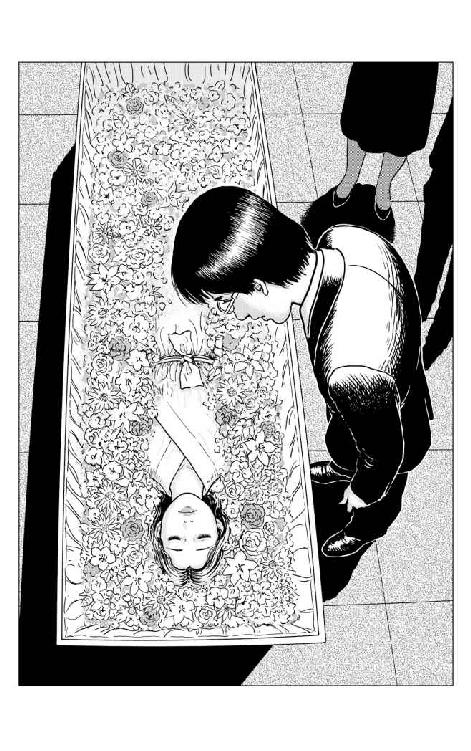

| 呪・アニメ アニメスタジオの怪談 (ミューノベル) | |
| 武上 純希 | |
| 毎日新聞出版 (2016) | |
本書は書き下ろしです。
イラスト／伊藤潤二
○サブリミナル
編集・アニメ用語。
視覚的に確認できないと言われる一コマ、二コマを一連のカットに挿み込み効果を上げるテクニック。例えば爆発のコマの前に白・黒コマを一コマずつ入れると爆発の効果が強調される。また意図的な一コマを挿入することにより、深層意識に印象を残し、観客の行動を操作できるのではないか──例えば映画の中にコーラを一コマ、何回かに分けてカット・インすることにより、売店の売り上げが上がる──という研究もあったが、現在ではその関連性は否定されている。しかし、我が国においては、法律的には禁止されていないが、業界的には自主規制されている。──放送前に機械によりチェックされ、極端な輝度の変化がある場合、排除される。
杉並区の住宅街は迷路だ。
環状８号線と青梅街道が交錯する辺りで側道に入り、線路と墓地に挟まれた路地を抜けると、閑静な住宅街の一画に出る。目的地も近いと油断して足を踏み入れると戸惑うことになる。行けども行けども目的の家が見つからない。細い路地が交わる四つ角を曲がると、通りすぎたはずの風景に戻ってきてしまう。
バブル期以前、四面道から少し入った辺りには、戦前からのブルジョア趣味の邸宅が目立っていた。建物の周囲を取り囲んだ背の高い生け垣が、侵入者の視線から住人を守ってくれている。そんな風景が続くため、人々を迷路へと誘い込んでしまうのかもしれない。
七〇年代に入った頃から、戦前の住民たちは減り始め、相続の対価として広い敷地は分割され、豪奢な邸宅が徐々に姿を消し始めた。この頃を機に、閑静な住宅街に不釣り合いな、マンションとは名ばかりの派手な造りの賃貸アパートが建つようになる。
その建物も、そんな事情で生まれてしまったのだろう。夕闇が迫る空を背景に、五階建ての白い壁のマンションが辺りを睥睨していた。
庭の一角には、背の高い高圧送電線用の鉄塔が築かれている。
鉄塔に近い角部屋の窓の明かりが不安定に明滅していた。その部屋の住民は高梨睦月──二十歳を迎えたばかりの女性アニメーターである。
七〇年代から八〇年代にかけて、日本のアニメーションは黄金期に入ったといわれる。しかし、その渦中にいた現場のスタッフたちは、華やかな雰囲気などまったく感じてはいなかった。業界にとって花形であるはずのアニメーターのギャランティさえ、一枚描いて百何十円の歩合制であり、一カ月何千枚という動画を描いても二十万円に届かないことが多かった。
当時、一部のファンたちの間で、密かにセル画の売買が行われていた。特に人気キャラクターのセル画や、人気のアニメーターにより描かれたものになると、一枚が十万円を超える高値で取引されているものもあった。しかし、当のアニメーター本人がその恩恵に浴することはなかった。プロとしてのプライドが、そういった闇取引に関わることを良しとしなかったからだ。
まだ収入の低い若い女性アニメーターが、木造賃貸アパートではなく、割高なマンションの五階に部屋を借りるのには理由があった。
アニメーターの仕事は時間的にも不規則であり、朝方近く制作進行の車で送ってもらうことも、しばしばである。その頃のアパートは、大家の庭先に建てられていることが多かった。しかも、平気で店子のプライバシーに関わってくる大家も存在した。それゆえに、水商売の女と勘違いされて追い出された女性アニメーターも一人や二人ではなかった。
不都合はそれだけではなく、古い木造アパートに若い女性が一人暮らしをしているというだけで、不審者の標的になってしまうのだ。
仕事場から帰ると風呂に入って寝るだけではあっても、食費を切り詰めて一クラス上の部屋に住んで、身の安全を図る必要があったのだ。
○ ○ ○
チカチカと古い蛍光灯が不安定に明滅して、光と闇を繰り返し作り出す。女性のものにしては、テレビと折り畳める小型のベッド以外、目につく物もない殺風景な部屋だ。ベッドの上、女性アニメーター高梨睦月は、普段着のままで横たわり、浅い眠りの中にいた。
睦月はその日、体調がすぐれず仕事を早めに切り上げると、自宅で寝込んでいた。
「うう......」
不規則だった寝息が一瞬止まるが、数秒の空白を置いて、
「フ～」
と、深く長い呼吸とともに甦り、ふと瞼が開いた。その視線は、網膜に映る風景が理解できないかのように、しばし天井に張りついたままだったが、やっと意識が戻ったのか、細身の体を捩じらせると枕元の目覚まし時計に視線を移した。短針は文字盤の『７』をいくらか回っていた。
しかし、それが午前を意味するのか午後なのか、すぐには判断がつきかねているようだった。
睦月は異常な疲労感を感じていた。手足がこん棒のように重く、ベッドから起き上がるのも困難に思えた。頭の中を覆っていた霧が徐々に薄れるように、今日一日の記憶が甦ってきていた。つい数時間前のことが、遠い日の出来事のように思い出される。
──今日は早引けしたんだっけ......朝からなんだか具合が悪くて......いっそのこと休もうかとも思ったんだけど......。
チェックしなければならないカット袋が山と積まれているのを思い出し、無理を承知で仕事場に出向いたのだ。動画机に向かってはみたものの、疲労感は衰えるどころか時とともに増していき、とうとう鉛筆一本がズシリと鉄棒ほどに感じられるようになってしまった。
──今まで、こんなことなかったのに......。
なんとか午前は乗り切ったものの、それが限界だった。とうとう辛抱できずに早引けしたのだ。
自宅に辿り着き、そのままベッドに転がり込むと、点けっぱなしになっていた蛍光灯の青白い光が睦月の目を射した。
睦月が通っている仕事場は、マンションの一室を仕事仲間と共同で借りているだけで、会社の登記をしているわけではない。自分たちがやりたい仕事だけを仲間と分け合って請け負うのだ。今度の仕事では、原動画だけでなく、初めて作画監督も引き受けていた。そのせいで、ここ一カ月、湯船に浸かりたい時に戻るくらいで、ほぼ連日、仕事場に泊まり込んでいた。
原動画だけなら自分の担当部分に集中すればいいのだが、作画監督となるとそういうわけにはいかない。他のアニメーターの作品をチェックして、出来が悪いと修正をつけて戻さなければならない。しかし、力量的に修正は無理だと判断した場合、ほぼ全面的に自分で描き直さなければならないのだ。
──どうして作画監督なんて、めんどくさいことまで引き受けちゃったのかな......一アニメーターとして描くことだけに集中していた時のほうが楽しかったのに......。
絵を描くのは、子供の頃から大好きだった。中学生の時、ファンだった有名アニメーターの仕事場を見つけて入り浸るようになっていた。最初は見よう見まねで動画を描いたりしていたのだが、そのうち仕事を手伝ったりするようになり、いつの間にかエンディング・クレジットに原動画のスタッフとして名前が載るようになっていた。
普通、新人アニメーターは何年間かの経験を積んで、原画、そして作画監督という仕事が回ってくるようになるものだ。ところが睦月の場合、一年もしない間にその高みに届いてしまったのだ。特にアニメーションの学校に通って、専門に絵の勉強をしたわけではない。あえて言うなら、彼女に天賦の才能があったのだ。しかし、今ではその人並み外れた才能によって、自分自身が苦しめられている。
──作画監督になってから、性格が変わってイジワルになってしまったのかもしれない。
睦月は近頃、そう思うことが、たびたびある。
自分がレイアウトをとったカットを原画マンが原画にしていったり、原画を描いたものを動画マンが中割りして描いていったりするわけだが、一発で納得のいくものが上がってきた例がない。作画監督を始めたばかりの頃は『自分のレイアウトや原画に問題があるのでは？』と、思ったりもした。『自分のせいなんだから仕方がない』と、出来の悪い作品にせっせと修正を入れていたのだが、徐々にそれが自分のせいばかりではないことに気がつき始める。
志は高いのだが実力が追いついていない新人に関しては、仕方がないなと思うこともある。新人が力をつけるには、時間と経験が必要なことは理解しているつもりだ。しかし、マルにテンテンで目鼻をつけただけの明らかに手抜きの原画が、自分よりずっとベテランの仕事だったりすることがある。そうなると、ムラムラと怒りが湧き起こるのを止められなくなるのだ。
ベテランのアニメーターの中には初心を忘れ、ただただお金を得るための手段として仕事を続けている者もいる。芸術性の高い作品を作ろうという志など、遥か忘却の彼方に置き去りにしてきたのだろうか。
──決して、自分はそんなアニメーターには、なりたくない。
そう決心した頃から、睦月はほとんど全部の原動画を自分の手で描き直すようになった。
そうなると当然、仕事は滞り気味になり、目の前には未修正のカット袋が山となる。
「どうすんだよ！ このままじゃ、穴開いちゃうんだよね」
作品の出来はともかく、スケジュールさえ間に合えばいいと思っている制作会社の進行たちに無慈悲に追い詰められる。
「早く適当に手を抜く方法を身につけないと......今みたいな仕事のやり方してると、体壊しちまうぞ」
最初は同情してくれていた仲間からも、そんな忠告をされるようになる。
『睦月のせいで徹夜仕事を手伝わされるなんて、ご免被る』と、あからさまに嫌な顔を向けてくる者もいた。
そんなストレスな日々が続いたせいだろうか──優れた作品を描こうとすること、完璧に近づこうとする熱意を持つこと、そんな当たり前のことまで悪いかのように思えてくる。睦月は精神的にも肉体的にも、ボロボロになっていた。
──早く良くなって仕事に戻らないと。
ベッドに倒れ込んだまま、眩しい蛍光灯から視線を外し、カーテンが開け放たれた窓から表を見やった。明るかった鉄塔の背後の空は、今や闇に包まれていた。睦月はやっと、今が午後の七時過ぎなのを認識した。
その脳裏に、スタッフたちの不安げな表情がふと浮かぶ。早退する睦月の背中に注がれる視線が、彼女の健康への気遣いだったのか、スケジュールがさらに遅れてしまうことへの不安だったのか。今この時も、せっせと働いている仲間たちのことを思うと、心安らかに横になっている気にはなれなかった。
この頃は、夢の中でも仕事をしている。
「仕事に戻らないと......」
睦月は自分を励ますように、あえて声に出す。ベッドの端に手をついて、やっと上半身を持ち上げると、ほっと息をつく。まだ気分は優れないが、数時間眠ったおかげで、なんとか外出の支度くらいはできるまでに回復していた。
○ ○ ○
──行かなきゃ......。
睦月がベッドを離れようとした時だった。カチャカチャカチャ──フローリングを移動する獣の足音が耳に届き、目の端を黒い何かが走り抜けたような気がした。
──今のは......？
ベッドに腰掛ける形で、睦月の動きが止まった。耳を澄ますと「ハァハァ」という獣の激しい息遣いが聞こえてくるような気がした。確かに、部屋の中に自分以外の何者かの気配がする。ペット禁止のこのマンションには、小動物が紛れ込む隙などないはずだ。気密性の高い構造なので、ゴキブリやネズミの類が跋扈しているとも考えにくい。
──気のせいよ。疲れているから幻覚なんか見えるんだ。
睦月は無理にでもそう思い込もうとしたのだが、体は正直だった。いつの間にか、床に置いていた足を持ち上げて、ベッドの上で膝を抱える形になっていた。
睦月は、さらに耳を澄ませ気配を感じ取ろうとした。その時、直観的に理解した。
──やはり、この部屋には自分以外の何者かがいる。
それは、この世の存在でない者だけが持つ、禍々しさを発散している。しかし同時に、無性に懐かしさを感じさせるものも持っていた。
何者かの懐かしさは、唐突に睦月の意識を遠い過去の時間へと運んでいく。近代的なマンションの一室が、一瞬、田舎の築百年にもなんなんとする古民家の映像と重なり合う。
睦月の瞳には、五つの頃まで暮らしていた母方の実家──四国の高知県と徳島県の境にある槇山（現在では香美市に組み込まれた）の風景が映っていた。
孤独だった幼少時代の睦月にも、唯一、友と呼べる者がいた。それは人ではなく、漆黒の毛を持つ犬だった。睦月は『クロ』と呼んで可愛がっており、その黒犬もまたよく懐いていた。
ただ、その黒犬には変わったところがあった。他の人間が近づくと、ふいといなくなってしまうのだ。睦月が『クロ』のことを家族に話すと、皆、戸惑ったり不機嫌になったりした。どうやら、この黒犬を認識していたのは、家族の中でも睦月一人だったらしい。
特に祖母に叱られたのを鮮明に覚えている。祖母はいつも廊下の日溜まりで猫を膝に乗せて、日がな一日、チョコンと座っているような穏やかな性格の人だった。しかし、睦月が『クロ』の話をすると、突如、鬼神の表情で叱りつけるのだ。一緒に遊んでいた友達の『クロ』が、祖母を怒らせる禍々しい存在であるなどということは、まだ幼い睦月にはまったく理解できないことだった。
そんなことがあって、しばらく経ったある日、母親が一枚のセピア色の写真を見せてくれた。
その写真には、亡くなった祖父に寄り添う『クロ』そっくりの黒犬が写っていた。
祖父は第二次世界大戦末期に亡くなっており、睦月が会うことはなかった。一緒に写っている黒犬は、祖父と同じ頃にこの世から去ったという。
「だから、お前が見たっていう黒犬というのはね、実際にはこの世には存在しない空想の産物なんだよ。きっと、どこかで写真で見たことがあったのを覚えていたのね」
と、母親は優しく、しかし同時に有無を言わせぬ強い口調で説き伏せるのだった。
むろん、睦月がそんな言葉に納得するはずはなかった。むしろ、『クロ』はよく似ているだけではなく、祖父の黒犬そのものだと確信するようになっていた。祖父の黒犬と『クロ』とには、同じ箇所に同じような形の傷痕があった。それは猪に襲われた祖父を守るために、黒犬が負った傷だという。
睦月が『クロ』の話をする時、家族が戸惑ったのは、心の奥底に封印していた祖父と黒犬の記憶を思い起こさせたからなのかもしれない。
カチャカチャ──また何者かが移動する気配がした。それが犬の剝き出しの爪がフローリングの床を滑る音であることに、睦月は気がついていた。
──まさか......！
睦月は確信した。
「クロ!? お前なんだね？」
睦月は、その存在に向かって声をかけた。
その存在も、はっきりと睦月を認識したのだろう。
ハァハァハァ──ダラリと長い舌を垂らしながら熱い息を吐く時に発する声で、久しぶりの再会に対して、万感の喜びを露にしているようだった。
「この感じ......間違いない......」
睦月が確信して顔を上げた時、何者かの黒い影が宙に舞うと、その視界を遮った。ズシリと重く柔らかい肉感が睦月に覆い被さり、その体をベッドに押しつけた。
「う......」
大人一人に押さえつけられているかのように、身動きが取れなくなっていた。その鳩尾に、何か硬いものが押しつけられたかのように、痛みが走る。ドクドクと動悸が激しくなり、形のいい富士額にふつふつと脂汗が浮かび上がってくる。睦月はベッドに仰向けになったまま、
「だめ......だめよ、クロ......」
睦月は、体の上で何者かの重さがズンズンと増していくのを感じ取っていた。それとともに胸の痛みは強まり、腕は重くなり、薄い胸は新鮮な酸素を求めて激しく上下する。
しかし、肉体の苦しさとは裏腹に、心の奥底では、大事な友との再会に喜びを感じている自分がいた。
徐々に失われていく意識の中で、
──そう、そうなのね、クロ......──お前、おじいちゃんの大事なお仕事で、やってきたのね。
睦月は、黒犬がなぜ今ここに現れたのか、理解できたような気がしていた。
ルルルル──呼び出し音が数回繰り返されたあと、
『はい、もしもし』
眠そうな声が届いた。
──無理もない。
と、省三は思った。
電話の向こうにいるのは逸見敏郎。映画作家になることを夢みてともに二年間、映像学院で学んだ、いわば盟友であった。
八〇年代は、まだネットも携帯も普及していない。徹夜仕事の多い友人に確実に連絡を取るには、寝起きを狙うしかなかったのだ。
省三が無礼を承知で早朝に電話したのは、今日こそ明確な答えが欲しかったからだ。
「悪い、寝てたか？」
省三が眼鏡を上に押し上げながら、わざとらしく詫びると、
『いや、大丈夫だ。夕べ徹夜で編集作業だったけどな』
不機嫌そうに逸見は答えた。
「ところで、あの話どうなった？」
省三は唐突に本題に入った。一瞬、沈黙した逸見だったが、すぐにいつものお気楽な調子に戻った。
『今年、オレを採用したばっかだし、もう一人、編集で雇うってのは難しそうだな。だけど、アニメーターだったら、いつでも受け入れるそうだよ』
「アニメーターって、僕には無理だよ」
『そんなことないだろ。お前、漫画なんか器用に描いてたじゃないか？』
映像学院時代の昼休み、省三はよく割り箸袋に漫画キャラを描いて遊んだりしていた。
──あんなお遊びと、プロとして絵を描くことはまったく違うというのに。
他人事だからとお気楽な発言をする逸見に、省三は内心、憤慨しながら、頼み事をしている立場上、下手に出なくてはと自らを戒める。
「僕は絵を描きたいんじゃなくて、フィルムに触っていたいんだ。フィルム編集をやりたいんだ。ほんとに上司に頼んでもらえたのか？」
『だから......弱小企業なんだから、余分な社員を採る余裕なんてないんだよ。それより、どんな仕事でもいいから会社に潜り込んでおいて、チャンスを見て部署を移動すればいいんじゃね？』
「そんな簡単にいくか？」
『さあな、運がよければな』
「とにかく、一度、お前の上司に会うチャンスを作ってくれよ」
『考えとく......まだ眠いんで、またな』
ツーツー......──回線の切れた音が、無情にも耳の奥に響いた。
「ちぇ......頼りにならない奴だ」
小さく毒づくと、省三も乱暴に受話器を置いた。
そこは八王子市の外れにある、連れ込み宿を改装したと思しきアパートの一室であった。
村上省三は現在、二十四歳。映画館の営業の職が決まり、八王子に住み始めて早半年が過ぎようとしていた。
もともと四年制の大学ではなく映像学院への進学を選んだのは、映画を創作する側に回りたいという子供の頃からの夢ゆえであった。
この春、卒業を迎えることになり、映画業界に就職口を探したのだが、この時代、斜陽の業界には働く場所はなかった。そういうことならと、アルバイトしたことのある映画館の支配人が尽力してくれて、八王子の神社の境内に建つ、邦画大手三社の一つ──日活の映画館に就職することができたのだ。
省三が就職した頃の日活は、ロマンポルノの全盛で活況を呈していた。この映画館が建っている土地は、地元の興行会社──もっと平たくいうとヤクザ──からの借地であった。当然、客層にもその筋の人間が多く、毎土曜日のオールナイト上映には、堂々と顔パスで入場する者もいたのだ。
日曜の早朝、観客たちの去った、がらんとした劇場を掃除しながら、
──これが自分の望んでいた仕事なのか？
省三は自問した。
省三がこの仕事を選んだのは、映画関係の仕事をしていれば、いつか創る側に回れるチャンスがあるかもしれないという期待があったからだ。しかし、それが甘い夢だったことを、この半年の経験が教えてくれた。
映像の創り手になることを諦めかけている時、テレビ・モニターを通してエンディング・クレジットに載る友の名を見てしまったのだった。映像学院時代の盟友がアニメ・スタジオに就職していたのは知っていたが、実際、半年あまりで編集スタッフとして名前が出る仕事をするとは思っていなかった。
十年やそこいら下積みの修行をして、白髪が目立つ頃になって、やっと編集助手ぐらいをやれるようになるものと思い込んでいたのだ。
──こうなれば、当たって砕けろだ。
省三は取るものも取りあえず、逸見に就職希望の意思を伝えたのだ。しかし、なかなか芳しい返事がもらえない。さすがに省三も諦めかけていた時、思いもよらず逸見のほうから連絡が入るのだった。
映画館の営業が終わり、アパートに戻ってみると、二燭光の暗がりの中で『留守電アリ』の赤いランプがチカチカと明滅していた。省三が慌てて『再生』のボタンを押すと、スピーカーから逸見の声が流れてきた。
『上司が会いたいって言ってるから、明日、スタジオまで来てくれないか？ えーと、ウチの会社があるのは──』
「よし、やった」
省三は、もう転職がうまくいったかのように胸躍らせて、蛍光灯も点けず薄暗がりの中で、何回も何回も逸見の声を再生していた。
○ ○ ○
省三が転職を図ったのは、特にアニメーションに興味があってのことではないし、このジャンルに造詣が深かったわけでもない。それゆえに、日本のアニメーションが大事な転換期に差しかかっていたことなど、当然、知る由もなかった。
それまでアニメーション映画というと、ディズニーに代表されるように、何年もかけて一本の作品を完成させるのが常識であった。しかし、七〇年代から八〇年代にかけてテレビ・アニメが黄金期を迎え、毎日、ゴールデンタイムに何本もの作品が放映されるようになると、そんな悠長なことをいっている余裕はなくなっていた。すでにコンピューターは存在していたが、ＣＧはまだ実験段階であり、現場で使うにはもう少し時間が必要であった。大量の仕事をこなすにも、人力に頼るしかなかったのだ。
一秒間に二四コマもの絵を必要とするフル・アニメーションより、動画の枚数を省略できるリミテッド・アニメの技術が進化し、日本独自の表現を創り上げたのも、その必要性からだったのかもしれない。
アニメ・スタジオにしても、今までの大手だけでは大量の作品数を処理しきれなくなっていた。そこで、雨後の筍のように下請け専門のアニメ・スタジオが林立することになったのだ。
省三に声をかけたアニメ・スタジオ『パスカル』も、そういった事情で設立された弱小スタジオの一つだった。
国鉄・中央線の西荻窪駅に降り立つと、省三は逸見に教えられたとおり駅から北へ伸びる道を進んだ。善福寺川を越えてしばらく行くと、四車線の広い道に出る。
「これが青梅街道だな」
省三は手持ちの地図にある『桃井四丁目』という文字を、信号の看板と突き合わせ確認すると、広い道を横断し、さらにその奥に続く道を進んだ。青梅街道を越えた辺りから道の両側の建物が徐々に疎らになり、二三区内とは思えない田園が広がっていた。鄙びた田舎の風景に伸びる片側一車線の道をさらに進むと、区で保護されている木々が小さな林を造り、道行く人々の視界を狭める。しばらく歩くと、木々に太陽が遮られて薄暗かった風景から一転、視界が開ける。畑のど真ん中にプレハブ風の二階建てが見て取れた。
省三は車道を外れ、畦道沿いにぐるりと建物の裏へと移動した。すると、その目の前に勝手口と思しきサッシのドアが現れる。ドア付近を一通り探してみたが、どこにもチャイムらしきものは見当たらなかった。ドアの上半分に嵌め込まれた曇りガラス越しに室内の状況を窺うと、昼なのに蛍光灯の光がぼんやりと光っている。
──誰かいるらしいな。
省三は、ドアの向こうに声をかけてみた。
「失礼します。どなたか、いらっしゃいませんか!?」
しばし待ってはみたのだが、返答はない。
──ここで間違いないはずなんだけどな。
省三はもう一度、声をかけてみて反応が返ってこなかったら、所詮、縁がなかったものと就職は諦めようかとも思った。大きく息を吸い、ふたたび呼びかけようとした時だった。
「よう、早かったじゃないか。すぐ分かったか？」
背後から、馴れ馴れしく声をかけてくる者がいた。
驚いて省三が振り返ると、ひょろりと伸びた細身の体を派手めなポロシャツとダメージ・ジーンズに包んだ青年が、ニヤニヤと笑みを浮かべて立っている。見紛うはずもない、学生時代に省三と同じ編集コースを専攻していた逸見敏郎だった。
「ああ......逸見。会社に電話したんだが、不在だって言うから......」
省三が応える。
「買い出しに出てたんだ」
逸見は右手にぶら下げたレジ袋を掲げてみせた。
「こんなところで突っ立ってないで、入れよ。二階の『編集室』で上司が待ってるはずだから」
「あ、ああ......」
内心ほっとして、省三は逸見のあとについて裏口から『パスカル』の社屋に入っていった。
三和土の日曜大工レベルの靴箱には、数十足の汚れた靴が無造作に突っ込まれており、臭気が立ち昇っているように見えた。
「スリッパは適当なのを使え」
逸見に言われたが、誰が履いたか分からない薄汚れたスリッパに足を突っ込む勇気は持ち合わせておらず、省三は靴下のまま板の間に上がり込んだ。
建物の一階は、だだっ広い板の間に荷物用のスチール棚をずらり設置しただけの、事務所というより倉庫という印象だった。スチール棚にはセル画や背景の絵を詰め込んだカット袋が無造作に積み上げられている。省三は、棚と棚の狭間を、体を斜めに傾げながら進む。
カット袋から溢れた色鮮やかなセル画に目を奪われていると、すぐ目の前にいたはずの逸見の姿が急に見当たらなくなってしまった。戸惑って、省三が立ち往生していると──
「何してんだ、こっちだ、こっち」
逸見の声が棚の背後から聞こえてきた。声を頼りに歩を進めると、スチール棚の背後に、二階への急な階段が姿を現す。
省三が階段を上っていくと、そこは一階と同じくらいの空間に、ざっと数えて十二脚ほどの動画机が並べられている『作画室』であった。
動画机とは、アクリルの板を嵌め込んだ天板を下から蛍光灯で照明して、タップの穴を合わせることで、ずれないように重ねられた複数の動画用紙を透かして見ることができるようになっている、少しずつポーズが違う動画を描くための机であった。動画机にはカット袋や動画用紙を置けるように棚が設えられているので、向かい合って机が並べられても、アニメーター同士の視線がぶつからずにすむ。
少年少女たちは、異邦人の侵入に集中を切らすこともなく、ただひたすら動画用紙に向かって鉛筆を走らせていた。たまに数枚の動画用紙をパラパラと捲って、動きを確認する音が聞こえてくるくらいだ。
この神聖な空間は、まさにプロフェッショナルな仕事人たちが集う工房であった。特に志とてなく、口に糊するための仕事が欲しいだけの人間が足を踏み入れるべき場所ではないと、省三は感じ取っていた。
──何か挨拶をしといたほうがいいかな？
省三はそう思いながらも、その真剣な空気に声を出すのも憚られた。
『作画室』の入り口で立ち尽くしたままの省三を、さらに奥にある『試写室』から、逸見が怪訝そうに見やり、『こっちだから』というように手招きしていた。
省三はそれに気づくと、誰に向かってというわけでもなく中途半端にペコリとお辞儀をすると、奥の部屋へ足早に進んだ。
『試写室』とはいっても、近代的な映画館の設備を想像すると落胆してしまうだろう。六畳ほどの室内には、学校の体育館にあるような長机の上に、中古の16ミリ映写機が置かれており、壁にはヨレヨレと波打つビーズスクリーンが吊るされ、窓という窓の枠には遮光カーテンが画鋲で留められている。
実際、この部屋が使用されるのは、現像所から上がってきたフィルムをそのまま繫いで通しでチェックする『オールラッシュ』という工程の時ぐらいである。むしろ、いつもはセル画や背景や、タイムシートを広げて作業するため広い場所が必要になる『撮出し』の作業場所に使われたり、締め切りが迫り徹夜作業が続く時、長机の下の空間をベッド代わりにする『仮眠室』へと変貌したりするのだ。
その部屋の右手奥が引き戸になっており、その引き戸には『編集室』というパネルが少し斜めに貼られていた。
──ここが今日の面接試験会場か。
省三はその文字を目の当たりにして、突然、緊張感に襲われた。
──今さら、どうしたんだ。当たって砕けろだろ。
省三は緊張をほぐそうとするように深く息を吸うと、逸見に続いてその部屋に入っていった。
「失礼します」
省三が四畳半ほどの『編集室』に入ると、中年の男が編集機の前に猫背気味に腰掛けていた。
男はポマードをたっぷり塗った頭髪を背後になでつけ、度の強い銀縁眼鏡を額の上にはね上げて、右手でリールを回転させながら小さな画面を睨みつけている。
「相川さん、例の入社希望の──」
逸見は男に声をかけた。
「うん......？」
『相川』と呼ばれた男は、面倒くさそうに身動ぎもせず空返事をした。
「あ、どうも......」
省三は相川の背中に向かって一礼すると、
「村上省三といいます」
画面を覗き込んだ姿勢のままで、相川の面接が唐突に始まった。
「君、逸見と同じ映像学院で編集専攻だったんだって？」
「え、ええ」
「じゃ、編集の仕事、ある程度分かってると思っていいんだね？」
「はい。一応は......」
「それで、君、なんで編集を専攻したの？ 最初から編集希望だったの？」
実のところ、省三は最初から編集コースを専攻していたわけではなかった。
──正直に話すべきか？
一瞬迷ったが、すぐに心を決めて語りだす。
「いえ、一年目はプロデューサー・監督コースを選択してたんです。二年目から技術者コースに移りました」
「なぜ、変更したの？」
「実は、映像学院を経営している映画会社の方針として、卒業生には入社試験を受けさせないということを知って......。少なくとも、大卒──しかも東大、京大クラスを卒業している者ならその限りじゃないけどって......今さら、東大や京大卒とペーパーテストで競っても勝てるわけがないってことで......それなら就職の可能性が高い技術者コースのほうが現実的かなって思って」
「なるほどね。でも、編集部の入社試験も受けなかったんでしょ？ 技術者コースを選んでれば、受けられたはずだよね？」
恐らく、逸見が喋ったのだろう──相川は履歴書に書いていないことまで事細かに知っていた。
──この人に隠そうとしても無駄だ。
省三は不合格を覚悟で、全てを正直に答える気になっていた。
「え、ええ。そうです」
「どうして？ 就職するために、わざわざコースを変更したんでしょ」
省三は遠くを見やる目をして、あの時の気持ちを思い出そうとしていた。
「──本社の『編集室』に実習で伺った時、還暦を過ぎた白髪の男性が編集助手をしていて、床に落ちたフィルムの断片を拾い集めていたんです。その時、六十過ぎても、そういう仕事しかもらえないのか......それはちょっと虚しいなぁと、思っちゃって」
「ふうん......」
「実はその方は定年で引退したあと、脳梗塞を発症して半身不随だったのに......『編集室』に戻ると昔のように動けるので、会社に頼んでリハビリのためにアルバイトをさせてもらっていたらしくて......決して還暦まで、ずっと編集助手だったわけじゃなかったんだって、しばらくしてから分かったんですけど、あとの祭りでした」
「早とちりで、せっかくのチャンスを棒に振ったわけ？」
「はい......仕事に関して、そんなに深く考えてないところがあって......自業自得ということだと思っています」
省三は、正直に現在に至るまでの経緯を話した。
隣の部屋には、一流のアニメーターを目指して、ひたすら絵を描き続けている少年少女たちがいる。
それに対して自分は、高い志もなく、なんとなく漂流して、アニメ・スタジオの『編集室』に流れ着いてしまった。省三は、そんな自分の生き方が恥ずかしいと思ったが、全てを正直に話せて、少しは心が軽くなったような気がしてもいた。
──もう、これで不合格でも仕方ない。
省三は腹を括った。
相川は度の強い眼鏡をずらして省三の顔をジッと覗き込んでいたが、とどめといってもいい質問をぶつけてきた。
「ね、君、アニメーションに興味ないんじゃない？」
「は、はい」
省三は、このままでは、さすがにまずいと思って、言葉を添えた。
「いや、小学生の頃はよく観ていました。『鉄腕アトム』とか『オバＱ』とか。でも、仕事を始めてからは観る機会がなくて......。確かに、特別好きとかいうレベルではありませんけど」
省三の答えに、しばし思いを巡らせていた相川だったが、心が決まったのか、やっと口を開いた。
「そんじゃ──」
──やっぱりダメだったか。正直に言いすぎたか。
省三が内心、諦めかけた時──
「明日から来てもらえるかな」
「は!?」
相川の口から出たのは意外な言葉だった。
「え、あの、合格ですか？」
省三は自分の耳を疑い、聞き返した。
「ただし、三カ月間は試験採用期間──もちろん、その間もギャラは出すよ。......三──いや、四万出すように社長には言っておく。それで使えるようだったら正式採用ということで──これでいいね？」
本当にそれでいいのだろうか。省三は迷った。物価の違う八〇年代とはいえ、四万円で一カ月間、生活するのは到底、無理だった。映画館の営業で手取り十八万円ほどもらっていた。四万円だと、省三が住んでいる八王子のアパート代を払ったら、食費もほとんど残らない。
──でも八王子から西荻窪に引っ越す費用を除いても、三カ月間くらいなら今までの貯金を取り崩して、なんとか生活できるかもしれない。
一瞬のうちに、省三の脳内をいくつかの数字が駆け巡っては消えていった。しかし、その正解が弾き出されるより早く──
「は、はい。お願いします」
反射的に深々と頭を下げていた。
省三は思った。
──このまま場末の映画館に籍を置いていても、決して映像を創る側の人間にはなれないだろう。少なくともここに移れば、編集という形で映像を創作する側に回れるのだ。
今はアニメーションの編集だけに限られていても、さらに広い分野の編集に──いや、編集だけではなく演出にも進出できる可能性があるかもしれない。
それは、少年だけに許される甘ったるい夢にすぎないことは、省三もとっくに承知していた。ただ、今は、そのほんの少しの『夢』さえあれば、なんとか二十代を乗り切れそうな気がしていたのだ。
○ ○ ○
晴れて三カ月の試雇期間を終え、正社員採用をされて仕事にも慣れてきたある日のこと──これといってやることもなく、省三は『編集室』の窓から辺りの風景をぼんやりと見やっていた。
窓の向こうには、畑や保護樹木の林の間を片道一車線の道が伸びる、省三の田舎にも似た風景が広がっていた。
狭い道だが、青梅街道からの抜け道に使われるので、意外に交通量は多かった。そのためか、警察が林の陰にスピード測定器を置いて、俗にいう『ネズミ捕り』をよく行っていた。スピードを上げて突っ走ってきたドライバーが、警察の取り締まりに気づき、大慌てで急ブレーキを踏むのだ。
──今のはアウトだ──いや、セーフだろ。
そんな予想をするのが、省三や逸見たちのささやかな娯楽であった。
──残念ながら今日は『ネズミ捕り』、やってないみたいだな。
省三は、つまらなさそうに欠伸をした。その時、ギシッと、引き戸が軋み開かれる。誰かと思い振り返ると、ヒョロリとした長身を持て余し気味に、逸見が姿を現した。
「今、現像所からの連絡があって、現像プリントが上がるのは夜中になりそうだって。何時になっても、フィルムが上がり次第すぐ運んで来られるように、制作進行に手配はしといたから」
「今夜中にオールラッシュ組まなきゃならないの？ 明朝じゃダメなのかい？」
「ああ、そうしたいところだけど、午前中には確実に編集終わらせておかないと、午後からのアフレコに間に合わないんだ」
「そうか......どうやって時間を潰すかな......」
「省ちゃんには悪いけど、フィルム上がるまで待ってて、一人で繫いどいてもらえないかな？」
「あぁ、いいけど......お前、帰るの？」
「本編の編集はオレじゃなきゃダメだろ。監督が到着次第、『試写室』でオールラッシュができるように準備さえしておいてもらえば......省ちゃんは明日は休んでもいいからさ」
『編集』というのは、技術パートであると同時に、創作的な作業でもある。現像所から上がってきたフィルムを一旦、カットごとに切り分け、順番に並べ変えて、フィルムを繫ぐ専用の器具で一本に繫いでも、それは単なる一連の映像にすぎない。そこからが編集にとって最も創作的な作業に入るのだ。上がってきたポジ・フィルムを演出意図に沿って一コマ単位で切り貼りしていく。編集の繫ぎ方一つで、そのシーンの意味が全然変わってしまうことさえある。
『映画にとって最も創作的で面白い作業は編集作業である』
そんなふうに語る、世界的に有名な映画監督もいるぐらいだ。それがアニメ作品であろうと、映像作品である以上、重要な部署であることに変わりはない。
上がってきたフィルムを一本に繫いでオールラッシュにすること、編集されたポジ・フィルムとネガ・フィルムのエッジナンバーを突き合わせネガ編集して、さらに音ネガを吊って現像所に送り出し、プリントを頼む作業──そういった編集でも技術的な部分に関しては、すでに省三一人でも可能であった。ただし、編集において最も重要な、監督と編集者によりラッシュフィルムを意味ある一本の映像作品にブラッシュアップするポジ編集の作業に関しては、まだ単独で任されることはなかった。
「オッケー、分かった。やっとくよ」
「悪いな」
逸見は口では謝罪しながら、ちっとも悪いと思っていなさそうなニヤケ顔をして、帰り支度を始めた。
もともと映画を創りたくて映像学院に入った省三にとって、この編集という仕事は理想的であるといえた。しかし、唯一難点があるとしたら、編集作業が全ての工程の最後に当たるということぐらいだろうか。現場作業というものは、いくら理想的なスケジュールを立てたとしても少しずつ遅れていくものだ。
作業の遅れが積み重なると、最終工程の編集作業に全ての付けが回される──つまりフィルムの上がりが、予定より大幅に遅れてしまうということだ。
いくら編集担当者がやる気満々になろうが、フィルムが上がってくるまでの間、何もできることはないのだ。
一見、優雅に見える編集作業ではあるが、その労働はアニメーターや制作進行とは違う意味で、過酷な作業なのだ。長い待機の時間がある代わりに、一旦フィルムが揃うと、どんなにスケジュールが短かかろうが、連日、徹夜作業になろうとも、締め切りどおりで作業を間に合わせなければならない。
テレビ作品なら納品日というものがあり、映画作品なら上映前のゼロ号試写の日程がある。これらの予定はどんなことがあろうとも動かすことはできず、予定に穴を開けてしまおうものなら、自分の首だけではなく、会社存亡の危機に直結してしまうのだ。
「そいじゃ、お疲れ」
デートの約束でもあるのか、逸見は浮かれた様子で帰っていった。
「ああ、じゃあ、明日は頼むわ」
一人、残業を任された省三だったが、さほど嫌そうな顔でもない。
というのも、『パスカル』では徹夜してもいっさい残業代というものは支払われないのだが、夕食代は出してくれるのだ。もちろん、出前可能な近所の中華屋レベルに限られるが、ラーメンに餃子と炒飯といった炭水化物過多のメニューであっても、安月給の省三にしてみれば、日頃味わうことのできない贅沢気分に浸れるというわけだ。
○ ○ ○
久しぶりに恵まれた夕食にありつけ、胃袋から逆流してくる芳しいニンニクの香りに浸りながら、省三は寝転がって本を読み、時間を潰していた。没頭していた小説の世界から、ふと我に返ると、辺りがしんと静まり返っているのに気がつく。
いつもなら、どんなに夜遅くなっても『作画室』には誰かが残っており、朝まで黙々と作業を続けているものだった。サラサラという鉛筆が紙を走る音が、微かに聞こえてくるはずである。ところが、省三の耳殼にはなんの音も届いてこない。その夜に限って、早い時間から一人、二人と欠けていき、十一時を過ぎる頃には人っ子一人いなくなっていた。
いつの間にか、『作画室』の奥にある『編集室』に省三だけがポツンと取り残されていたのだ。
腕時計の針は時を刻々と刻んでいるが、現像所から制作進行が帰ってくる様子はない。
「遅いなあ......。まだ時間が、かかりそうだな」
省三は、眠けに誘われるままに隣の『試写室』に移動して、仮眠を取ることにした。机の下に潜り込むと、その辺に散らかっていた漫画週刊誌を重ねて枕にし、湿気た毛布に包まる。いつもなら机の下に潜り込むと一分も経たずに寝息をたてるタイプなのだが、今日に限っては、なかなか寝つけなかった。
寝よう寝ようと焦ると、逆に頭が冴えてきてしまう。省三は長机の下で、寝苦しそうに何度も何度も寝返りを打っていた。
今、省三が寝ているのは『パスカル』の二階にある『試写室』である。さらにその奥にある『編集室』はもちろん、その手前にある『作画室』にも誰一人いない。一階の『倉庫』も、その隣の『役員室』もしんとして静まり返り、しわぶき一つ聞こえてはこない。建物を一歩表に出ると、辺りには様々な生き物たちの息吹に満ちている。それなのに、畑の真ん中にそそり立つ『パスカル』の社屋には、あたかも死せる者たちの名を刻んだ墓標のように、ただ一つの省三の命を除いて、なんの気配も感じられないのだ。
トクトクトク──省三の心臓の鼓動だけが唯一、生を感じさせるものだった。
いつしか、うとうとと微睡みの中にいた省三は、突然、人の気配を感じて目を覚ました。
──誰だろう......？ こんな時間に戻って仕事をするなんて、熱心な......。
ミシミシミシ──聞こえてくるのは、何者かの歩く板の間が軋む音であった。聞き慣れた動画用紙の上をサラサラと鉛筆を走らせる音はしない。
省三は瞼を閉じたまま、その神経を耳殼に集めた。誰かが板の間を歩く音と、自分自身の荒い息だけが聞こえていた。
すると、板の間の上を歩き回っていた音がピタリと止まった。
──何をしているんだ!?
省三が耳を澄ます。パラパラパラと、紙を捲る音が聞こえる。
──そうか、作画監督が動画をチェックするために戻ってきたんだ。なんだ、そんなことか。
省三は、半分夢の中にいながらそう思った。何回かの寝返りの末、その体は『作画室』を向いているはずだ。
省三は精神を集中させると、重たい瞼を微かに開けた。ぼんやりと『作画室』の様子が浮かび上がる。しかし、そこには人らしき者の影を認めることはできなかった。
──気のせいかな......夢を見ていたのか......？
その時、省三の視界の端で何かが動いた。
──え......あれは？
省三にしても眼鏡を外しているので、しかと断言はできないが、その白いものが人体の一部であることは間違いない。動画机の間を少女のような細く白い足首が移動しているように見える。
──いったい誰なんだ？
長机の下で横たわっている今の姿勢では、『作画室』にいる何者かの下半身しか視界に入れることはできない。
──起きなきゃ、起きて確かめなきゃ。
省三は必死になって上半身ををもたげて『作画室』を覗き込もうとした。その時だった。どこからか、カチャカチャ──と、硬い板張りの床と金属質の鋭く尖った何かが間断なくぶつかり合う音が響いた。音は一気に近づき、上半身を起こしかけた省三に襲いかかった。黒い旋風のようなものに視界を覆われると、次の瞬間には抗い難い強い力によって体が押し倒されてしまった。
省三は、必死になって起きようとした。ところが謎の強い力によって体が押し戻され、起こすことができない。視界は依然、黒く柔らかい塊に遮られ、何も捉えられない。まるで上半身に鉛でできた掛け布団を押しつけられたようだった。しかもその布団は生温かく、「ハァハァ」と獣の荒い息遣いを伴っている。
──どけ！ どいてくれ！
省三が、目に見えない何者かに必死に抗っている時──
「はぁ......」
深く長い吐息が聞こえた。
その吐息には、深い悲しみが含まれているのを、省三は感じ取っていた。
──いったい、誰があんな哀しげな吐息をつくのだろうか？
そんなことに思いを巡らせていると、上半身を覆っていた黒く重い重力のようなものが、ふっと消えて、視界に光が戻ってくるのを感じた。かろうじて首を動かすこともできるようになっている。
省三が再び『作画室』の方に視線を向けると、細く白い足首の持ち主は一台の動画机の横に立ち止まり、その机の上を見つめているように感じられた。
そのうち、省三の意識はいつの間にか再び深い闇の底に沈んでいくのだった。
それから、どれほどの時間、眠っていたのか。
省三が意識を取り戻した時には、窓の外はうっすらと白んでおり、二階の空間を包んでいた異様な雰囲気は消え去っていた。
そっと動かしてみると、手足の自由は完全に戻っていた。起き上がった省三は、あの白い足首の持ち主が佇んでいた辺りに行ってみた。足首が向いていたとおりに立ってみると、その視界に動画机の上の何枚かの動画用紙が入った。作業途中のその絵は、原画を中割りして描かれた動画であった。あの白い足首の主は、これを見て吐息をついていたのだと思った。
絵描きとしてはど素人の省三が見ても、その原画と中割りされた動画の作者は別人で、双方の力量には一目瞭然と表現しても仕方がないほどの差があった。
あえていえば、魂を持って活き活きと動いていたキャラクターから、突然、魂が抜かれてしまったような──両者の絵には、それぐらいの違いを感じるのだ。
──あの白い足首の持ち主がついた哀しげな吐息は、このせいなのか？ もし、原画を描いた人物が、これを見たら、あんな哀しい吐息をつくのも仕方ないだろうな。
省三は、なんとなく納得できるような気がしていた。
○ ○ ○
「やあ、お疲れ」
弾むような声で、逸見が『編集室』に入ってきた。
「夕べ、代わってくれたんで、久しぶりにゆっくり眠れたよ。溜まってた疲れも取れたし......」
彼女とのデートにかまけて、一睡もせぬままの出勤であることなど、おくびにも出さない。ひとまず省三に対して礼を述べた逸見だったが、ふと室内の空気の異様さに気がつく。いつもだったら、テンポのいいツッコミが戻ってくるはずなのに、今日はその反応がないのだ。
省三はというと、猫背気味に編集机に向かったまま、身じろぎもしない。
──オールラッシュを吊るのに、何かトラブルでもあったのか？
逸見は半分開いた扉から、恐る恐る『試写室』を覗いたが、映写機にはちゃんとフィルムを巻いたリールがセッティングされていた。
「オールラッシュはセットされているし......何かあったのか？ 夕べの上がりが遅かったのか？」
省三は背中を向けたまま、ゆっくりと頭を振った。
──どうやらそういうことではないらしいな。
逸見は、怪訝そうに、さらに問うた。
「じゃ、なんなんだ？ 何があったんだよ!?」
すると省三は、ゆっくりと椅子を回転させて、その正面を見せた。
「!?」
逸見は、自分の目を疑った。省三の目の下には黒い隈がくっきりと浮かび上がり、髪の毛は乱れ、同い年のはずの盟友が一気に何年も年を取ってしまったかのように見えた。
「大変だったな。あとはオレがやっとくから、帰ってゆっくり寝てくれ」
省三が疲弊しきっている理由を追及するのを諦めて、とりあえず労いの言葉をかけると、話を切り上げようとした。ところが、そうなって初めて省三は重い口を開いた。
「なあ、逸見......。変な噂を聞いたことはないか？ この建物のことで？」
「なんだ？ 夕べ、何かあったのか？ ネズミでも出たか？」
「いや、そんなんじゃねえ......」
「すると、まさか、アッチ方面の──」
逸見は、両手を胸の前でダラリと下げてみせた。
「ああ......」
省三は、半ば開いたままになっている引き戸を『閉めろ』と、目で合図する。
「わ、分かった......」
と、逸見は後ろ手に扉を閉めると、椅子を省三の横に引っ張ってきて、長い足で跨がる形になる。
「どうした......？」
「............」
逸見は、省三の顔色を見て呟いた。
「何か、出たのか？」
「うむ......」
省三は逸見に顔を近づけると、小さく囁いた。
「夕べ、『試写室』で仮眠を取っている時......見た......」
省三は夕べ、この建物で起こった奇妙な出来事を、事細かに再現して話した。
「どう、思う？」
少なくとも、その表情にジョークの入り込む余地はなかった。
逸見にしても、急に信じることもできず、かといって言下に否定するのも大人げない。どう感想を言ったものかと思い悩んだ。
「お前、疲れてんじゃないか？」
逸見は、最も無難な答えをしてみせた。しかし、大真面目な省三の表情に変化はなかった。
「ただ、疲れが見せた悪夢だとは思えないんだ......。確かにあの時、僕は目覚めていた。実際にこの目で見たんだ......」
逸見は、どう答えるのがいちばんこの場に相応しいのか、常日頃のお調子者の性格はどこかにいってしまい、困っているように見えた。
「──例えばさ、この建物で昔、殺人事件があったとか、ノイローゼになったアニメーターが首括っちゃったとか、さ」
省三は、具体的に聞いてきた。
「それはないだろ。会社がこの建物に移ったのは、たしか去年だったはずだし。その前は井草の方に一軒家を借りてたはずだぞ。ここの地主と社長がちょっとした知り合いで、ここに会社を移したいっていうんで、それに合わせてこのプレハブを建てたはずだ。新築の建物が曰くつきであるはずがないだろ？」
省三は建物の由来を聞いて、ちょっとガッカリしたように見えたが、さらに続けた。
「じゃ、会社が建っているこの場所に、昔、処刑場があったとか......墓場だったとか......」
「ここは昔から畑だろ？」
「そうか。そうでないとしたら、この会社に関わった誰かに、因縁があるのかも......」
「そうだな。この業界は人の出入りが激しいからな。労働条件だって最悪だし......。まあ、その中に怨念を持った人間が含まれていても、おかしくはないな」
「だろ？」
「そういえば、オレがここに入ったばっかりの頃、体力自慢の韓国籍のアルバイトを採ったんだけど、わずか一週間余りで辞めてしまったんだ──『ここは兵役より苦しい。こんな仕事を我慢してやるなんて、皆、変だ』っていう殴り書いた書き置きを残してな」
「それだ！ そいつだ!!」
省三は、人さし指を逸見の鼻先に突きつけた。
「そいつが恨みを抱いたまま、自殺したりなんかして──」
「いや、こないだ駅前の居酒屋に行ったら、元気にアルバイトしてた」
「......その可能性はないか」
省三は、なぜかガッカリした。
「まあ、何があってもおかしくない、ヤバい職場であることには間違いないけどな......。そいつが書き置きしたとおり、ここでなんの不満もなく働いてるオレたちのほうが、おかしいのかもしれないな」
「ああ......」
省三も、逸見のその意見には同意した。
省三は漠然と思った。このままここにいたら、いつかきっと何か『ヤバい』ことが起こるだろう。しかし、やっと手に入れた職場だ。訳の分からない予感だけで、簡単に辞めるわけにはいかないのだ。
そんなことがあってから、しばらく経ったある日のこと──
あれほど恐怖感を覚えた心霊現象も、時間とともに記憶が薄れていくのが人の常というべきか。
あれから何度か『試写室』の机の下の毛布に潜り込んで仮眠を取ったりもしたが、二度と同じような体験をすることはなかった。
ガラッ！
いきなり引き戸が開き、『編集室』に飛び込んできた逸見は、ネガ・フィルムの断片を接着液で繫ぐ、ネガ編集の練習をしていた省三の横に近づくと、
「分かったぞ」
と、囁いた。
「何が？」
「問題があるのは、この場所でもないし、この会社に関わった人間でもないかもしれない」
省三は例の心霊現象の話であることを察すると、スプライサーを操る手をふと止めて、逸見の方を見やると、
「どういう意味だ？」
怪訝そうに問い返した。逸見はさらに声を潜めて囁いた。
「アニメだよ、アニメ」
「アニメがどうした？」
「今、ウチが受注しているアニメ──それが『呪われたアニメ』だったらしい......」
省三は偶然手にしていたネガ・フィルムを目の前に翳して、光に透かした。オレンジ色のその数コマには、アニメの主人公である『補色の緑色の髪』と『大きな瞳』を持つ『魔法少女』が写っていた。
試写室で一人、仮眠していた省三は、この世の者ならぬ気配をまとった白い人影を目撃してしまった。
アニメ・スタジオに巣くう物の怪の類か、この土地に因縁を持つ地縛霊なのか。ところが、その正体はこの地にまつわる霊の類などではなさそうだ。そんな情報をもたらしたのは、同僚の逸見だった。
アニメ・スタジオ『パスカル』の二階、そのいちばん奥に設えられた『編集室』で、逸見と省三は額を突き合わせて話していた。
「心霊現象の原因は、今、受注しているアニメのせいだ。あれは呪われたアニメなんだよ」
と、逸見は決めつけた。
──何を根拠にそんなことを!?
省三は白手袋で16ミリフィルムを摘み上げて魔法少女のキャラクターを見つめた。そこに写っているのは、日本の漫画キャラ独特の緑色の髪と大きな目を持つ少女の姿だった。
逸見は畳みかけるように語りかけてきた。
「とーぜん、知ってるだろうけど、今、手がけている新番組が、ウチとしては初めての元請け仕事だってこと」
「ああ、とーぜんだろ。で!? 元請け仕事って、どういう意味なんだ？」
業界に入ってすでに数カ月が経ってはいたが、省三の編集以外に関する知識は、まだまだそのへんの素人と、さほど変わりはなかった。
「またか、やれやれ......」
わざとらしく溜め息をついてみせた逸見は、面倒くさそうに説明を始めた。
「ウチが今まで、原動画とか、編集の仕事とかを部分的に受ける下請け専門の会社だったのは知ってるな。でも、今度の作品は、スタッフとして参加しているだけじゃない。主体となって作品を創り、他の会社に下請け仕事を出す立場になったってわけだ。つまり、それが元請けだ」
いささか吞み込みが悪いのか、省三はまだ分かっていないという表情でさらに問いかける。
「──元請けになると、何かいいことがあるのか？」
「もちろん」
逸見は五つの童に話すように、丁寧に説明する。
「ウチが主体となって作品を創れるってことだ。作品内容に意見することもできるし、第一、オープニングに堂々と制作会社としてウチのテロップが入る」
「つまり、名誉的なものなのか？」
「いや、もちろん、それだけじゃないさ。いきなり、生臭い金の話になるけど......」
「経済は大事だ」
「ああ──今まで、制作費は元請け会社から請け負った仕事の分だけギャランティとして分けられていたが、これからは局から直接入ってくる。もちろん、その額はケタ違いだし、下請けに回す手間賃を調整すれば、中間マージンで儲けることだって可能だ」
「ふん」
「ピンときてないみたいだけど......お前、アニメ一シリーズでいくらぐらいの金が動いてるか、分かってるのか？」
「さあ？ そんなこと考えたことなかった」
「よく聞け！ 三十分一本の制作費が五百万円から一千万円だとして、二クールなら掛ける二十六本、一年間のシリーズなら掛ける五十二本──軽く億を超えるんだ」
「へっ、それで、そこからいくらぐらい抜けるんだい？」
「抜けるって、そんな人聞きの悪い。プロデュース料とでも言ってほしいな。そこはウチの重役たちの手腕次第だけど......しかし、実情を話すと、制作費が予算内には収まらず、シリーズが終わってみたら大赤字を抱えてしまってるってケースが、ほとんどらしいけどな」
「なんだ。そんなんで大丈夫なのか？」
「まあ、アニメ界の常識だ。歴史上、最初のテレビアニメ制作会社が、とても資金回収することが不可能な安い予算で請け負ってしまったんだ。その弊害が今でも続いているって話だ。ま、『漫画の神様』と言われている人間でも、経済には疎かったということだろうな。しかし、そのせいで今では、ほとんどのアニメ・スタジオが、前の作品で出た赤字を次の作品の制作費で穴埋めするって悪しき連鎖ができちまってる」
「それって、自転車操業ってやつじゃないのか？」
「そうとも言うな」
「そんなんじゃ、会社としては、おとなしく下請け仕事をやってたほうが安全なんじゃないのか？」
やっと業界の一角に潜り込んだつもりでいた省三にしてみれば、たった一作で会社が潰れてしまっては困るのだ。
「そんな仕事続けていても、社員に給与を出すのがやっと......数年も経たずにジリ貧になるのは目に見えている。確かに、うまくいかなかった場合、リスクはあるさ。しかし、この仕事を成功させれば、どんどん元請けの仕事が入ってくるようになるかもしれない。いや、ウチから企画を提出して、オリジナル作品を創れるようになるかもしれない。そうすれば制作費だけじゃない、玩具の著作権保有とか、ビデオ、出版なんかの権利も入ってくるようになるだろ？ そういうお金が入ってきて、初めて会社ってのは潤うようになってるんだ」
「そんなもんか。お前が言うようになるんなら、世の中、ちょろいもんだけどな」
「ま、そうなればいいなってことだけど」
「なんだ、希望的観測か」
「この作品が成功すれば、そういう話が現実になるんだ。いわば、ウチの会社の今後の命運がかかった大仕事って言ってもいいだろうな」
省三は、おとなしく盟友の言葉を聞いていたが、最後には納得がいかないというように問いかけた。
「大体、分かったけど......それが幽霊の正体と、どう関係があるんだ？ 今の話からは、この作品が呪われてるっていうより、アニメ業界全体が呪われてるっていうふうに聞こえたんだけどな」
「まあ聞け」
逸見は、省三を抑えると話し続ける。
「もともと、こんな中途半端な時期に、省ちゃんが正社員として就職できたんだって異例なことだ。なぜだと思う？」
「そりゃ、部長が面接してみて、こんな優秀な人材を放ってはおけないって思った──ってわけじゃなさそうだな」
「ああ」
「つまり、人手不足だったからだろ」
「なぜ、人手不足になったかってことさ」
「さあ......？」
「それが、今度の作品が元請けだってことと関係があるんだ。ウチが制作会社である以上、現場の責任者である制作プロデューサーを出さなきゃならないんだが......もともと下請け専門の会社だったから、作品全体に目を配らなきゃならない制作プロデューサーの経験者がいなかったんだ」
「社長とか専務でいいんじゃない？ 毎日、『重役室』で暇してるみたいだし......」
「無能社長に、なんにも専務じゃ、無理だ。経験はないし、能力なんてもっとない」
「どうすんだよ？」
「そこでだ、『編集室』の相川部長が制作プロデューサーを兼任しなくちゃならなくなったってわけだ」
「相川部長には経験あるのか？」
「オレの知る限り、ほとんど、ない」
「能力は？」
「未知数だ」
「そんなんで大丈夫なのか？」
「でも、部長が制作プロデューサーに回ってくれたおかげで、省ちゃんの正式入社が決まったんだから。シリーズを転がすのには、最低二名のフィルム編集者を確保する必要があるからな」
「なるほどな」
省三は納得してはいなかったが、一応、分かったような顔をしてみせた。
「今の話で、僕が入社できた事情は分かったけど......幽霊話との関連は相変わらず全然分からない」
「ああ、そろそろ本題に入ろうか」
逸見は、さらに省三に顔を近づけると、その瞳を覗き込んだ。
「今度の『魔法少女もの』に、ウチのような新興の弱小プロダクションに制作会社としての白羽の矢が立ったことには、業界の中でも首を傾げる者が多いんだ」
「............」
「『パスカル』は、大手のアニメ会社から独立した人間たちが新たに設立したばっかりで、まだ何年も経っているわけじゃない。そんな会社に、東京キー局のゴールデンタイムで放送されるメジャー・タイトルが舞い込んでくるなんて、異例中の異例だ。つまり、そこには普通ではない事情があるってことさ」
「そんなに特殊なことなのか？」
「ああ、新興のアニメ・スタジオは、下請けの会社からさらに下りてきた二次的、三次的な仕事を引き受けるのが一般的なのさ。発注する立場であるキー局のプロデューサーにすれば、もし弱小スタジオに肩入れして元請け仕事を依頼して、万が一にも放送に穴を開けてしまうようなことが起こったら、自分の首が危なくなってしまうからね」
「確かにな......」
省三は、面接のため初めてこの社屋を訪れた時のことを、まざまざと思い出していた。畑の中にポツンと建っている二階建てのプレハブは、工事現場のタコ部屋以外の何物にも見えなかった。
なぜ、こんなところから子供たちの夢を育むアニメ作品が生み出されるのか──内部事情を知るようになった今でも、不思議な気持ちになることがある。
ちょっと事情を聞き齧ったばかりの自分でさえこうなのだから、ましてや内部の事情を詳しく知っているはずのテレビ局のプロデューサーだったら、もっと慎重になるはずだ。
何億円という大金をこんな会社に託すなんて、大した度胸の持ち主というべきか、よっぽどの粗忽者というべきか。
──いずれにしても、まともじゃない。
少なくとも省三には、そう思えた。
「三十分もののテレビ・アニメを一本制作するのに仮に一千万円かかるとして、二クール二十六本のシリーズだと三億円以上の予算が動くことになる。もしも放映期間中に何かアクシデントでも起こり放送事故にでもなれば、その責任は、まず担当プロデューサーの肩にのしかかることになる」
「恐ろしい話だな。幽霊より、よっぽどそっちのほうが怖い」
「だろ？ そんなことが起こらないように保険をかけるとしたら、まずは無難にシリーズを何回も回した実績のある、東映動画とかの大手プロダクションに依頼するのが常識のある人間のすることだよ。省ちゃんは、どう思うよ？」
「なぜ、この企画が『パスカル』のような新興アニメ・スタジオに回ってきたんだろうって......そりゃ、誰でも思うだろ」
「な」
逸見はニヤリと笑った。
「どうやら、この新番組の企画そのものに、お前が見たっていう幽霊の原因があるらしいんだ」
「はあ......」
やっと、自分が遭遇した幽霊と、今度の作品の関連性が判明する時がきたらしい。
省三は興味津々で、耳を傾けるのだった。
○ ○ ○
省三が会社の仮眠室で出合った白い足音の幽霊は、地縛霊の類ではないらしい。アニメ・スタジオ『パスカル』が受注した新作アニメの『魔法少女もの』が呪われているらしいのだ。
逸見が説明するには、こうだった。
「この作品は、最初からスポンサーが決まっており、放送時間帯も用意されている──テレビ局側にしてみれば、広告代理店に頼ってスポンサーを探す必要もないし、とっても優秀なコンテンツといえる。もちろん、それはアニメ制作会社にしても、スポンサーがいなくなって制作費が滞るなんてこともないし、安心して受注できる作品ってわけだ。ところが、この企画を持ち込まれたアニメ制作会社が、どこも腰が引けて引き受けるところがなかったというんだ。そこで、テレビ局のプロデューサーは多少のことには目を瞑り、独立したばかりで制作会社として一本立ちしたがっていたウチに、白羽の矢を立てたってわけだ」
「どうして？ そんなに条件が調っていたのに、どこも受けなかったんだ？ 破格に制作費が安かったとか？」
「そんなことはないさ。玩具メーカー一社提供で、むしろ制作費は豊富なほうじゃないのかな」
「ますます、なぜ......？」
『パスカル』が取り組むことになったアニメは、もともとは、今回、スポンサーになっている大手メーカーとは別の老舗の玩具メーカーにより、女児向けの玩具セールスのために企画されたものだという。
最初の企画書が提出されたのがすでに数年前であり、一度は制作寸前までこぎ着けていながら、なぜか、その時は実現に至らなかったらしい。
「内容に、何か問題があったのか？」
と、省三は問う。
「そう言われたら、全然ないともいえない──と、答えておくべきかな」
と、逸見。
「問題があるのか、ないのか!?」
「あえていえば、ストーリーの終わり方が、子供向けのアニメらしくなかった──って、ことかな」
この作品は、いわゆる『魔法少女もの』というジャンルの元祖のようなものである。つまり、この作品以前に、同じようなものによる成功例があまりないジャンルの作品だともいえる。
そのストーリーはオリジナルなのだが、ベースはドイツの児童文学者ミヒャエル・エンデの『モモ』辺りをパクッたのかもしれない。
こういうストーリーである。
『とある町に突然、お供の動物たちと一緒にモモという少女が現れる。
ちゃっかり住み込んだ家の夫婦も、町の人たちも、モモが昔からずっと家族として暮らしていたと思い込まされてしまう。そして、モモは町に起こる様々な問題を、その不思議な力で解決していくのだが──
モモの住んでいる町に〝虚無〟という名の魔物が襲いかかかってくる。
〝虚無〟に捕らわれた人間は無気力になってしまい、生きていても死んでいるのと同然な状態に陥ってしまう。
〝虚無〟に襲われた町の人たちを救うため、モモは自らの命を犠牲にして戦うのだ。
最終的に〝虚無〟と刺し違える形で、モモは町からいなくなってしまう。しかし、それから一年後、夫婦のもとに人間の赤ん坊として生まれ変わるのだ。』
子供向けのアニメ・ジャンルに造詣が深いわけではない省三には、そのストーリーのどこに問題があるのか分からなかった。
「それで......なぜ、以前はこの企画が潰れてしまったんだ？」
「最初のシリーズ構成では、ラストにモモが死んで人間の赤ん坊に生まれ変わることになっているだろう。子供向けのジャンルで、感情移入させるべき主人公が死んじゃうのはマズいだろうと......。まあ、最後は人間の赤ん坊に生まれ変わるとはいえな」
「そういうものか？」
「そういうもんだ。そこで、企画書の段階でラストをハッピー・エンドに変更しようということになったそうだ──〝虚無〟との戦いの末、死んでしまうのではなくて、少女の希望で自ら人間の赤ん坊に転生するっていうようにな」
「なるほど、それなら問題なしか」
「ところがだ。この企画書作成にいちばん最初の原案段階から参加していた女性スタッフが、その変更を嫌がったらしいんだ」
「ふうん......」
「そこで、すでに何本ものシリーズ構成を担当したことがある中堅の男性脚本家に、企画書のあらすじの変更を依頼したらしいんだ」
「............」
「ところがストーリーの変更を依頼された中堅の男性脚本家が急病で入院してしまい、代わりのライターを探す間もなく、クレームを出した制作プロダクションのプロデューサーが自動車事故に遭って──おまけに番組を担当するはずだったテレビ局のプロデューサーまで......」
と、逸見は一気にそこまで語ると、声を潜めて付け加えた。
「原因不明の病気で入院すると、間もなく突然死......してしまったそうだ」
「おいおい、ほんとかよ？」
「とどめだったのは、この作品のスポンサーの老舗の玩具会社だ。ワンマンといわれていた社長が突然、亡くなり、そのあげく会社は倒産──当然というべきか、この企画はポシャってしまい、闇に葬り去られたってわけだ」
「それが事実だとしたら、まさに『呪いのアニメ』だな」
「そうだろ!?」
「でも、なぜ？ よりによって、このアニメが呪われなきゃならなかったんだ？」
「さっき話しただろ、ストーリーの変更に反対した女性スタッフがいたって」
「あ、ああ」
「その女性スタッフは、幼い娘さんを病気で亡くしてたんだ。亡くなった娘さんへの思いを、アニメの主人公に託していたために、ストーリーをハッピー・エンドに変更するのを嫌がったらしい。恐らく、その女性スタッフの作品への思いが強すぎて──」
「それで、作品の内容を変更しようとした者たちに呪いがかかっちまったって......噂なのか？」
省三は、まだ信じきっているわけではなかった。
「噂じゃないけど......ね」
しつこく繰り返す逸見に、省三は、
「局プロが突然死したり、玩具メーカーが潰れたりとか──事実関係は、調べれば分かるはずだよな？」
「ああ......」
「ちゃんと裏は取ったのか？」
省三は疑い深げに問いかける。
「いや。何せ、今さっき制作進行から聞いたばっかりだから、そこまで調べる余裕はなかった」
省三は、やっぱりと言うように逸見から視線を外す。
「ガセだろう。そうに決まってるさ。どうせ、具体的なことを知っている人間なんて、この世の中に存在してないんだ」
せっかく聞き込んできたネタを言下に否定されては、逸見としても面白くない。このまま引き下がるわけにはいかない──ということになる。
頭の中に関係者の顔を思い浮かべて、この一件に詳しそうな人物を探した。そして、誰か思いついたのか、口角を上げて省三を見やった。
「？」
「いや、ホントのことを知っている人間がいる。あの人に聞けば、真相を聞き出せるはずだ」
「マジか？」
省三の疑わしげな視線を受けながらも、逸見は自信に満ちた口調で答えた。
○ ○ ○
新番組の『魔法少女もの』が『パスカル』のような新興の弱小プロダクションに任されたのは、この作品が呪われているからだ──と、逸見は言うのだが、肝心の省三はというと、この話にぴんときていなかった。
──なぜ、女の子向けのこの作品が呪われなきゃならないのか？
もともと呪いとか、理不尽な話ではあるが、普通、こういった都市伝説にはもっともらしい曰く因縁がありそうなものなのに、逸見の話にはそれがなかった。
「やっぱり、無責任な噂なんじゃないか」
省三は、信じられないという表情で、逸見を見やる。
「火のない所に煙は立たないって言うだろ？ 噂が立つってことは、なんらかの根拠があるってことだ」
「しかし、な......それだけじゃ」
「分かった。事実関係を知っている人間に、直接、確かめてみようぜ」
「誰なんだ？ その事実関係を知っている人間って？」
「この作品を担当しているテレビ局のプロデューサーだよ。前回、『魔法少女もの』が取り上げられた時のことも知っていると思うんだ。同じ部署の人間が原因不明の病気で入院し、あっという間に突然死しちゃったら、同僚としてさすがに何か知っているだろうさ」
「でも、そんな偉いさんに、どうやって？ 『このアニメって呪われてるって噂は本当ですか？』って聞くのか？」
「大丈夫さ、チャンスは向こうからやってくる」
逸見は、自信ありげにニヤリと笑ってみせた。
その笑顔には、それなりの根拠があった。しかし、理由を解説する前に、一本のアニメーション作品が完成するまでの工程を読者にも理解してもらわなければならない。
アニメーションが一本の作品になるまでに、スタッフ同士による何回もの打ち合わせが繰り返される。
それはまず、脚本打ち合わせに始まる。
その打ち合わせには、シリーズ構成と呼ばれる脚本部門の責任者と、実際に各話を担当して執筆する脚本家が参加する。
話数によっては、シリーズ構成が各話の脚本を兼任する場合もある。特に原作のないオリジナル・シリーズの立ち上げの数話は、普通、作品のカラーや方向性を決める意味でも、シリーズ構成の脚本家がメイン・ライターとして執筆することが多い。
この段階の打ち合わせには脚本家以外に、演出側からシリーズのチーフ・ディレクター、制作プロダクションのプロデューサー、そしてテレビ局のプロデューサーが立ち合うのが普通である。
八〇年代は、まだ脚本家の作家性を認める風潮が強く、スポンサーは立ち合わないことのほうが多かった。後年になると、アニメの宣伝効果が重要視され、スポンサー・サイドの人間も打ち合わせに参加するようになる。
通常、この段階で逸見や省三が担当するフィルム編集の人間が呼ばれることはない。
脚本家によって執筆された第一稿の脚本に関して、前記のようなスタッフにより様々な角度からの意見が出され、何稿かの修正を重ねた上で決定稿への運びとなる。
普通、二稿から三稿を重ねて決定稿となるが、オリジナル作品の一話ともなると二桁の修正稿になることもある。
そうやって脚本が決まると、次はこれをもとにイラストによる表──絵コンテが作成される。
絵コンテ専門のスタッフも存在するが、チーフ・ディレクターや各話の監督が担当して絵コンテを切る場合が多い。絵コンテが完成すると、やっと、作画や背景といった絵に関係する打ち合わせへと進む。
当時、テレビ作品の作画期間は約三カ月、必要だといわれていた。しかし、スケジュールに追われるようになると、徐々にその期間が削られていくことになる。
作画が完成すると、各話を担当する演出による、カットの制作段階を撮影に進める『撮出し』作業を経て、撮影班へと回される。そうして撮影されたフィルムが、やっと逸見や省三の担当する編集パートに届くというわけだ。
フィルム編集には、編集者と監督が立ち合い、直接フィルムにハサミを入れることになる。まだこの時代のアニメはビデオ収録ではなく、フィルム仕上げであった。映画だとフィルムは35ミリフィルムを用いるが、テレビ・アニメは普通16ミリフィルムで撮影される。
当時、撮影されたフィルムは、デジタル処理ではなく、実際に物理的にスプライサー（フィルムを繫ぐ専用の器具）によりカットされ、テープで繫げて、一本のリール（フィルムのための枠）により巻き取られる。
そうやってポジ編集が終わると、アフレコ（撮影後にセリフ音声を録音する）・スタジオに運ばれる。
スタジオでは、声優たちにより、上映されるフィルムに合わせてアフレコが行われる。
声優以外にも、アフレコには録音監督とミキサーが参加する。
録音監督が、声優の演技に関する演出を担当するケースが多いが、会社によっては各話のアニメーションの演出が録音監督の役割を担当することもある。特に、もともと映画会社から派生してできたアニメ・スタジオだと、監督が全ての演出を統括するのが当たり前──と、いう伝統があるからだという。
それらの作業が進む間に、他方、フィルムのＮＧ出しが、チーフ・ディレクターや各話の演出によって進められる。ここで作画上のミスや、手袋が映り込んだりの撮影上のミスなど、全てのＮＧカットがチェックされる。結果を受けて新たに撮影され、現像所から上がってきたＯＫカットが、編集部によって差し替えられるのだ。
これら全工程にテレビ局のプロデューサーが関与するわけではないが、一度、打ち合わせの時間が持たれると討論は盛り上がる。どんなに立ち位置が違っていても、スタッフ同士として無礼講で話ができるのだ。
そんな時なら、例の『呪われたアニメ』に関しても聞き出すチャンスがあるかもしれない──逸見はそう考えていたのだ。
特に一話の初号（編集がすんだ画のネガと音のネガを合わせてプリントした、最初のもの）試写が終わったあとは、慰労会もかねて飲み会が開かれることが多い。そんなことを、省三より半年早く現場に入った逸見は知っていたのだ。
案の定、編集室で『呪われたアニメ』の話が出てからしばらくして、チャンスは訪れた。それは『魔法少女もの』の第一話の初号試写の日であった。
その日、郊外にある現像所に省三や逸見をはじめ、第一話に関わったスタッフたち、『パスカル』の重役連、スポンサー、そしてもちろん、省三と逸見の標的であるテレビ局のプロデューサーまでずらりと揃ったのだ。
この日、初めて作品がこの世に姿を現し、その出来や内容がはっきりする。飲み会が開かれるか否かは、作品の出来いかんなわけだが、幸い初号試写の評判は上々で、スポンサーたちも上機嫌で引き揚げていった。
今まで固唾を吞んで待っていたスタッフたちにとって、ほっと安堵の息をつくことができる瞬間ともいえる。
一気に雰囲気も和んで、あとに残った『パスカル』の重役連と、省三や逸見を入れた何人かの残留したスタッフたちの間で、自然とどこかの居酒屋で慰労会を開こうという流れになる。
こういう時、アニメの制作作業でいちばん苦労したであろう各話担当の演出や、作画チームは、すでに次の話の作業に入っているために参加できないことが多い。それに対して、苦労もしていない人間たちが美酒に酔いしれるという皮肉なことになる。
この日も例外ではなく、現場スタッフたちは先にそれぞれのスタジオに散っていき、重役連と代理店関係者に、テレビ局のプロデューサー（局プロ）、そして逸見と省三のほぼ十名ほどが参加することになった。
現像所から『パスカル』に帰る道すがら、ちょうど中間距離に当たる吉祥寺辺りの居酒屋が、その会場に選ばれた。
逸見が狙っていたのは、こういう機会であった。
吉祥寺駅に程近い商店街の一角であった。地下へ伸びる狭い急階段を下りたところ、雰囲気のある扉を開けると、三十ほどの椅子席が並び、その奥に詰めれば十人ほどの人間が入れる掘炬燵ふうの座敷が設えられていた。
『パスカル』の一行は、狭い座敷に押し込められることになる。
そのいちばん奥まった席に収まった局プロの林は、心から安堵したような表情になっていた。
いつも寡黙で必要以上の発言はしない人物ではあるが、その日は妙に口が軽かった。
現像所で行われた第一話の初号試写は、珍しくスポンサーたちにも概ね好評だった。経験の少ない『パスカル』に制作を任せたことに一抹の不安を抱いていた局プロにしても、ほっと胸をなで下ろした。
林はこの作品に、瑞々しい感性を敏感に感じ取り、ひょっとしたらスマッシュヒットを打てるかもしれないなどという、取らぬ狸の皮算用までしていたのだ。
──いささか不謹慎ともいえる『呪われたアニメの噂』だとしても、この酒の場なら、話してくれるかもしれない。
狭い掘炬燵の小部屋の中は、省三にしても逸見にしても、そう思えるほど打ち解けた雰囲気であった。
幸いというべきか、隅の席に座る林を、省三と逸見が挟み込んで座る形になっていた。
皆、酒が進み、全体の話題から、それぞれ二～三人で固まって別々の話をするようになるタイミングを見計らうと、逸見は林に聞くでもなく口を開いた。
「この企画って、以前も取り上げられたことがあるって聞いたんですけど......」
そう口火を切った逸見の方を、林はいぶかしげに振り返った。今までの饒舌さが噓のように止まると、しばし宙を見つめている。省三はドキドキと彼の言葉を待った。
──やっぱり、こんなこと聞いて、機嫌を損ねてしまったか？
省三の脳裏を後悔の言葉が過った頃、林が重い口を開いた。
「ああ、何年か前に......。でも、当時のスポンサーは別の老舗玩具メーカーで、その最中にメーカーが傾いちゃって、それどころじゃなくなったんだよね」
「あ、あの──」
省三が続けようとしたが、『慌てるな』というように、逸見が目で制す。
──分かった......。
省三は心の中で返事をした。
すると逸見が、続いて聞き始める。
「──聞いた話なんですけど......なんか、会社が潰れる前にいろんなことが起こったとか、起こらなかったとか......」
「いろんなこと......？」
林が、何かにピクッと反応したように見えた。
──やっぱり、聞いたらまずいのか？
省三が止めるより早く、逸見が重ねて聞いた。
「ええ、スタッフとかに、原因不明の──」
「ああ、病気になったとか、交通事故に遭ったとか、そういうやつか？」
──やった！ ついに本題に入った!!
思わず二人は身を乗り出した。
「やっぱり、あれですか......？」
と、逸見が問う。
「あれ......？」
林が問い返す。
「例えば──」
と、逸見。
──言うぞ、言うぞ、ついに言うぞ。
省三は固唾を吞んだ。
「この作品が、呪われてるって噂があるんですけど......」
──ついに言った！
「────」
逸見のストレートな質問に何を思うか、腕を組みしばし考え込んでいるふうの林だったが、ついに口を開いた。
「呪われたっていえば、呪われていたかもしれないなぁ......」
──やっぱり......。
省三と逸見は『やった』とばかりに視線を合わせた。
○ ○ ○
──やっぱり、この『魔法少女もの』のアニメは呪われていたんだ！
林の言葉を聞いて、省三と逸見は確信した。
なぜ、こんなメジャーな企画が『パスカル』なんて弱小新興アニメ・スタジオに任されたのか。
噂どおりに様々な事件が起きたのだとしたら、業界内には以前の出来事の記憶がまだ鮮明に残っているはずだ。進んでこの企画に手を出そうとする会社は、なかったに違いない。
とはいえ、局のプロデューサーの林にしてみれば、担当した以上、好むと好まざるとにかかわらず、仕事として全うしなければならない。
今までの経緯を全て吞み込んだ上で、仕事を引き受けてくれる会社を探さなければならなかったのだろう。
そのヤバい餌付きの釣り針の前に、大きく口を開けて現れたのが『パスカル』だったというわけだ。
曰く因縁つきの作品とはいえ、制作会社として一本立ちしたいと思っていた『パスカル』にとっては、絶好のチャンスであることに違いはない。
林も迷ったことだろう。新興スタジオを抜擢するとなると、当然、リスクはある。しかし経験がないとはいえ、重役たちの中には大手のアニメ・スタジオから独立した者も存在し、まったくのアマチュア集団を起用しようというわけでもない。
それにこの決定には、喉から手が出るほど大きな仕事が欲しかった『パスカル』側からの積極的な働きかけもあったに違いない。
逸見は、上司の相川が連日連夜、林を銀座辺りの一人座るだけで席代二十万円は取られるという噂の高級クラブで接待していたことを知っている。
その結果として『パスカル』の初めての制作アニメ作品『魔法少女もの』は、なんとかクランクアップまでこぎ着けることができたというわけだろう。
省三と逸見の予想は、あたらずといえども遠からずだったのだが、全てがあたっていたわけではなかった。
紫煙で煙る居酒屋の奥にある掘炬燵の部屋で、焦点が合わなくなった酔眼を省三と逸見に交互に向けた林は、
「ウィック」
と酒臭い息を吐くと、語りだす。
「君たちが聞きたいのは、この『魔法少女もの』にまつわる『呪われているアニメ』って都市伝説のことだろ？」
「いや、そんな──」
慌てて否定しようとした二人だが、林はその言葉を遮って続けた。
「いいや、構わん構わん」
「......!?」
「僕だってね、そんな噂がこの作品にあることぐらい知ってるさ。なんだったっけな......前回、アニメ化されようとした時、スタッフが次々と入院したり、事故に遭ったり、不幸が重なって、ついにはスポンサーになるはずだった老舗の玩具メーカーが潰れちまって......とどめは、担当していた局プロが正体不明の病気で入院して、治療の甲斐もなく突然死んじゃったとか、な」
省三と逸見は、コクコクと頷くと、
「やっぱり......本当だったんですか......？」
と問う。
「ああ、この作品をアニメ化しようと動いてた時、スポンサーになるはずだった老舗の玩具メーカーが突然、潰れてしまって、アニメ化の話もオジャンになったというのは、都市伝説なんかではなくて、紛れもない事実だからな」
「やっぱり......」
逸見が呟く。
「呪われてたんですね」
と、省三がダメを押す。
林は、コップに残った酎ハイを一気にあおると、続けた。
「しかし、スタッフ関係者が次々と原因不明の病気で倒れ、死んでいったっちゅうのは、どうかな」
「そうですよね、多少の尾鰭はついているかもしれませんね。『呪い』の噂を本当らしく彩るために......」
と、逸見。
「ひょっとして、その時の担当のプロデューサーが、まだ局にいらっしゃるとか？」
と、省三が切り込んだ。
林は、省三を見やると、
「その仕事の時、インフルエンザぐらいは罹ったかもしれないな......。でも、殺されちゃったら堪らないな」
「!?」
「数年前、この企画を担当して、原因不明の病気で入院し、治療の甲斐もなく死んでしまったって噂の局プロとは、どうやら僕のことらしいんだよね」
「......え？」
二人は、ポカンと口を開けた。
「でも、アニメ本の資料によると、その時の局プロのお名前は『高橋さん』って......」
「ああ......『高橋』は、僕の旧姓でね。その一年後に婿入りして『林』姓に変わったんだ。アニメ本なんかの資料から、それまで何本も担当作品を持っていた『高橋』って名前が急に消えちゃったから、そんなことが急死の噂が出た原因かもしれないけど、ね」
「す、すみませーん」
逸見と省三は声を揃えて、無礼の限りを謝罪した。
「いや、そんなことはいいんだけどね」
林は、遠くを見やるように狭い掘炬燵の和室の天井辺りに視線を向けると、何かを思い出しているようだった。
「この作品、呪われてたっていえば呪われてたよね。実はこの企画が最初に頓挫したのは、制作を依頼されたアニメ・スタジオのプロデューサーが、振り込まれた四千万円の制作準備金を持ったままトンズラしちゃって、さ。その不祥事の責任を取らされて、代理店のプロデューサーが担当を外されちゃったりして......。大変だったんだよね」
「そうだったんですか」
と、逸見は続ける言葉もなかった。
「でも、それ犯罪でしょ？」
省三は、恐る恐る聞いた。
「ああ。でもさ、代理店としてもスキャンダルを表沙汰にしたくなくてさ、なんとか穴埋めして制作を続けようと努力したんだけど──今度は、肝心のメイン・スポンサーの老舗の玩具メーカーが傾いちゃってさ。......ほんと、あの時は呪われてたよ」
林は後悔とも安堵ともつかぬ深い溜め息をついて続けた。
「僕の首はなんとか繫がってたけど......最終的な企画書は結構、気に入ってたからさ......いつかチャンスがあれば、もう一度、この企画を取り上げたいとは思っていたんだ。あの老舗会社を吸収合併したのが、国内最大手玩具メーカーでさ、そこに女児玩具開発のプランがあって、この企画が再び日の目を見ることになったってわけさ」
「それは、よかったですね」
なんとなくハッピー・エンドふうで局プロの話が終わったので、省三と逸見はほっと胸をなで下ろした。
「この企画を新しいスタッフで実現したいというのが、ずっと希望でね。そんな時、企画の当初から関わっていた大手のアニメ制作会社からスタッフたちが独立してスタジオを立ち上げようとしているって、相談の電話を受けて」
「はあ......」
「それが今の『パスカル』の重役連中だよ。チャンスがきたら、その時はまず、この企画を実現しようってね、『パスカル』を立ち上げる以前から相談していたんだよ」
「なるほど......。そういう経緯が......」
省三と逸見は、視線を合わせた。
呪われているとはいえ、その内容はアニメ業界ではよく起こるらしいスキャンダルであり──あの〝白い足首の幽霊〟と、この〝呪い〟とはなんだか関係がなさそうだということに落ち着き、うやむやのまま、その夜の話は終わってしまった。
曰く因縁つきの『魔法少女もの』であったが、それ以降、省三が白い足首の幽霊を目撃することもなく、他にもこれといって『呪われていそうな』現象が起こることもなかった。
○ ○ ○
二話以降の制作が進んでも、『呪いのアニメ』らしい事件は起こらなかった。
起こるトラブルといえば、作画がアフレコに間に合わず、白味だらけの絵なしの状態で声を当てるという作業が続いたため、ベテラン声優が癇癪を起こし、『降りる』『降りない』とアフレコ・スタジオから引き揚げてしまったとか──比較的、些細な問題以外、特に変わったことも起こらず、なんとか無事に作業は進んでいた。
そして、ついに第一話の放送の日を迎えることになる。
初号試写でも好評だったように、新興の弱小スタジオの作品とはいえ、会社の命運をかけて作り上げられた作品の出来は良く、業界のごく一部からではあったが、称賛の声も上がるほどであった。
しかし、巨大ロボットものが全盛のこの時代、女児対象で今まであまりヒットした例のない『魔法少女もの』という新ジャンルということが祟ったのだろう、視聴率的にはアニメ黄金期では珍しい一桁に終わり（現在では、むしろ二桁に届いているアニメ作品のほうが珍しいのだが、当時は二〇パーセントなければ成功とはいえず、一五パーセントを切ると失敗作といわれていた時代である）、二話以降に期待されながらも、視聴率の折れ線グラフが右肩上がりになることはなかった。
スポンサー的に、それより問題視されたのは、玩具の売り上げが伸びないことだった。
玩具の出来と、アニメの中味とは直接関係なさそうに思えるのだが──スポンサーにしてみれば、そう割り切るわけにもいかないのだ。彼らにとってアニメ作品とは、あくまで玩具を売るための宣伝材料なのだ。
一つの原因としては、一話の出来こそ評判だったものの、そこは新興弱小スタジオの悲しさで、ベストのスタッフを編成できるのは一班だけだったということだ。それだけでは到底、番組を回すことはできない。少なくとも四班のスタッフを編成しなければならないのだ。
しかし、立ち上げたばかりの会社が、優秀なスタッフを手持ちのコマとして押さえておけるわけがない。
四班中、二班～三班は、寄せ集めの作画スタッフで間に合わせなければならない事情がある。作画スタッフの実力差は、そのまま作画レベルとして画面に出てしまう。各話の出来、不出来の差が大きすぎると──それが直接、視聴率の低さや、玩具の不人気の理由ではないにしても──スポンサーである大手メーカーの営業たちの言い訳の材料にされてしまうのは致し方ない。
『あのヒドい出来では、子供たちにそっぽを向かれてしまっても仕方ありませんね』
という具合である。
スタッフたちが放映に間に合わせるために、まだ必死に原動画に取り組んでいた頃、上層部では早くも番組の打ち切りが検討され始めていた。
結局、打ち切りは免れたものの、二クール二十六本の予定が、一クール十三本にカットされ、一旦終了したあと、てこ入れしてから続編を作成することが決定されてしまった。
番組的にいうと、呪いなどより、視聴率や玩具の売り上げのほうが余程、恐ろしかったというわけだ。
まだ省三たちが、裏ではそういう具合になっていることなど知らなかった頃──一方では放映されたアニメ作品を観た視聴者たちの中から、『呪いのアニメ』に関する新たな都市伝説が囁かれ始めていた。
その日、放課後の部活が終わると、智子は中学校から徒歩三十分ほどの自宅まで全速力で走った。荒い息を吐きながら玄関に飛び込むと、上がり框にリュックサックを放り出し、テレビのあるリビングへと飛び込んでいく。
「お姉ちゃん!?」
テレビの前の絨毯に胡座をかいてコミックスを読んでいた小六の妹・久美子は、顔を上げると姉の厳しい表情に驚いた。
智子と久美子は、アメリカ人の父と日本人の母の間に生まれた姉妹であった。妹の久美子はハーフだと言っても信じてもらえないほど母の特徴を色濃く受け継いでいたが、姉の智子はむしろアメリカ人の父によく似ていた。
ハーフ独特の彫りの深い顔つきは、おとなしく微笑んでいる時は天使のように美しいのだが、一度その表情が怒りに満ちると、夜叉のように厳しい顔つきに見えてしまうのだ。
「約束覚えてる!?」
智子は、有無を言わせぬ強い口調で言い放つ。
「約束......!?」
「今日は、六時から三十分、チャンネル権をワタシに譲るって約束でしょ」
「そうだったっけ？」
「いいから！ さっさとソコどいて！」
「ちぇ～」
智子の勢いに、久美子はしぶしぶ部屋の隅へ移動してテレビの前を明け渡す。
智子はソファーに転がっていたクッションを両腕で抱え込むと、絨毯の上に寝そべり、テレビ観覧の特等席を独占した。クッションの上に顎を置いて、視界がテレビの画面いっぱいになるように微調整すると、リモコンを手元に引き寄せて電源を入れた。
ブラウン管の中央に白い点が点り、光の線が左右に伸びると、映像が画面いっぱいに広がる。
──間に合った。
智子はほっと胸をなで下ろす。
時計の短針が『６』を指すのにはまだ猶予がある。いつもなら部活の仲間たちと、下校路の途中にあるコーヒーショップでダラダラとダベりながら暇を潰している時刻だ。
智子が急いで帰宅したのは、この日、お目当てのアニメ番組が始まるからだった。
特別、アニメ好きだというわけではなかった。しかし、今日から始まるアニメは、その繊細なレーダー網に引っかかったのだ。
アニメ番組といえば、男の子向けの『ロボットもの』や『ＳＦもの』が全盛の時代だ。『魔法少女もの』というジャンルが観られること自体、とても珍しかった。
さらには、その内容が愛読書でもあるミヒャエル・エンデ作品にインスパイアされているという情報が、アニメ雑誌に紹介されていたことも、彼女の興味をそそった。
──第一話だけは見逃さないようにしなくちゃ。
と、智子をそんな気持ちにさせたのだ。
そんなに見逃したくないのなら、ビデオで録画して、あとからゆっくり鑑賞すればいいのに──と、思う読者もおられるだろう。確かに学友の中には、ビデオデッキを所有している家庭もあったが、智子の家にはまだ、そんな文明の利器は導入されていなかった。
それは、彼女の家庭が特別貧しかったからではない。ビデオ・レンタルやセル用のビデオ・ソフトを購入すること自体、まだ珍しい時代だったのだ。
テレビの番組も、一度、放映を見逃したら次はいつ観られるか分からない時代だ。何年か経ってから再放送されるのか、はたまた来週観られるのか──なんの情報も入らない。いつ再放送されるのか分からない作品を、ただひたすら待たなければならなかったのだ。
それまでテレビの前で寝そべって待っていた智子だったが、アニメのオープニングの軽やかな音楽が流れ始めると、知らぬ間に座り直し、きちんと正座していた。
目を見開き、何一つ見逃すまいと、テレビ画面を凝視する。テレビと視聴者の間に快い緊張感が存在する──まだ、そんな時代だった。
○ ○ ○
妹の久美子は自分の部屋に戻ると、読みかけだった少年誌のコミックスのページを開いた。
今日、新たに女児向けのアニメが始まることは姉から聞いて知ってはいたが、『観ておかなければ』という気持ちには、なれなかった。
久美子が今、夢中になっているのは、姉の影響で読み始めた少年誌の連載漫画だった。
久美子にしてみれば、自分以上に少年漫画のファンだったはずの姉が、女の子らしいファンタジーや魔法少女といった内容のアニメに、なぜ、そんなに入れ込んでいるのかが分からなかった。姉のどこに、そんな乙女チックな一面があったのかと、久美子は妙にくすぐったい思いがしていた。
──アニメは六時三十分まで......。
久美子は心の中で呟いた。
いつもなら、その時間からあと、リビングのテレビはニュース番組にチャンネルが合わせられる。その流れのまま、天気予報など観ながら夕食に雪崩込むのがこの家族の習慣といってよかった。
久美子にすれば、来週には学校の行事として遠足が予定されており、ぜひとも週間天気予報を確かめておきたいという事情もあった。
──六時三十分を回ったらリビングに戻ろう。
久美子はそう思いながら、ついコミックスに夢中になってしまった。
次に気がついたのは、お腹がグウと鳴って空腹を知らせてくれた時だった。誌面から目を離して壁の時計を見やると、長針はすでに三十分を大きく回っていた。
──しまった......！
コミックスを本棚に戻すと、大きく伸びをして自分の部屋をあとにする。
階段を下りていくと、キッチンの方からは、いつものように母親が夕食の準備をする軽やかな包丁の音が響いていた。
反対側にあるリビングの方を窺うと、姉の智子が背筋を伸ばし正座をしてテレビに向かう後ろ姿が見えた。
新番組の放映時間はとっくに過ぎている。実際、画面の中では巨大なロボットたちが肉弾戦を繰り広げている最中だ。それを見つめる形で、智子は微動だにしない。
──やっぱり、お姉ちゃんには『魔法少女もの』より男の子向けの『巨大ロボットもの』のほうが似合ってる。
久美子は心の中でそう呟くと一人、納得した。
そろそろ週間天気予報の時間であることを思い出して、後ろ姿の姉に声をかける。
「お姉ちゃん！ チャンネル権は六時半までだったよね？ チャンネル替えてもいいよね？」
久美子は床に転がっているリモコンを手に取ると、テレビに向ける。リモコンの先の赤いランプが点灯すると、騒々しかった巨大ロボット同士の戦闘シーンの音に代わり、男性アナウンサーがニュース原稿を事務的に淡々と読み上げる声がリビングに響いた。
久美子は、ふと違和感を覚えた。
いつもの智子なら、お気に入りの番組のチャンネルを勝手に替えられると、お嬢様に相応しいとは言い難い単語を並べ立て、『なぜ勝手にチャンネルを替えるのか』という意味のことを主張するはずなのだ。しかし、いくら耳を澄ましても、姉の口からは不満どころか、一言の言葉も洩れてはこない。
「お姉ちゃん......？」
呼びかけても、智子は振り返ろうとすらしない。
久美子は姉の正面に回って、その顔を覗き込んだ。
テレビの青い光に照らされているせいなのか、その表情は青白かった。返事がなかったのは、眠っていたわけではない。眼は大きく見開かれ、その口は惚けたようにポカンと中開きで、あたかも恐怖に歪んだ瞬間を固まらせたような表情であった。
「え......？」
さらに目を凝らして観察すると、石膏像のように固まっていた肉体が、悪寒でもするかのようにフルフルと小刻みに震え始める。
半分開かれた口からは、
「お、おおお......」
声にならない声が洩れていた。
ただごとではないと感じた久美子は、知らず大声を上げていた。
「ママ！ ママったら!!」
リビングにいる我が子の声に、テーブルに皿を並べていた母親は、
「なんなの!? 今、手が離せないのよ」
片手間な感じで応える。
姉妹の小競り合いは慣れっこだった。
大体、この時間に姉妹喧嘩が起こるとしたら、せいぜいチャンネル権の奪い合いだろうと高を括っており、神聖なる夕食の準備の手を止める価値などないと決めつけていた。
しかし、この日は違っていた。
「いいから、すぐ来て！ お姉ちゃんが死んじゃうよ!!」
『生きる死ぬ』といった言葉は、冗談半分に出るものではない。妹の声はいつもと違い、切羽詰まっていた。日常というぬるま湯にどっぷり浸かっていた母親を、一瞬にして危機的状況に引きずり出した。
「なんなの？ 何があったの!?」
母親は濡れた掌をエプロンで拭きながら、リビングに駆け込んだ。
そこで母親が見たのは、テレビに向かって正座している姉と、その顔を覗き込むようにして両肩に手を置き、必死に揺さぶる妹の姿だった。
「お姉ちゃん、お姉ちゃん！」
「どうしたの!?」
「いくら呼びかけても、返事してくれないの！ 目は開いてるんだけど、なんだか意識がないみたいなの！」
事ここに至り、母親も娘の身の上に起こったことが、ひょっとすると命にまで関わりかねない重大事だと思い知る。
「智子！ 智子っ!!」
母親もまた娘の耳元で叫んでみる。しかし、妹が試した時と同じように少女の反応はない。
「どうしよう......？」
今にも泣きだしそうな妹に、
「お姉ちゃんを見てて！ 目を離さないで！」
と言い残すと、母親はリビングから飛び出し、玄関の上がり框に置かれている固定電話へと走った。むろん、一刻も早く救急車を呼ぶためである。
恐怖に固まったままの姉に対し、取り残された妹は心細げに声をかける。
「お姉ちゃん......しっかりして......」
すると智子は固まって動かない口からでも、何かを伝えなければと思っているかのように、苦しげなうめき声を洩らすのだった。
「あ、あ、あ......」
「どうしたの!? 何が言いたいの!?」
智子は固まってしまった筋肉を必死に動かして短い言葉を発した。
「お、おんなのこ......」
「女の子？」
久美子が、その口元に耳を近づけると、姉はいま一度、微かな声を発した。
口元から洩れる風の音は、久美子の鼓膜をわずかに揺らした。
「──女の子が......振り向いて......笑った......」
○ ○ ○
その夜、『魔法少女もの』のアニメが放映を終える頃、一一九番への通報が鳴り続け、駆けつける救急車のサイレンの音が暮れなずむ空の下、方々から響いていた。
救急病院に搬送されたのは、未就学児童からローティーンを中心とした年齢層の女児が多かった。事件から時間が経ってから判明することになるのだが、その中には日本在住の欧米人の子供が多数含まれていたこと、また日本国籍の者でも、欧米系の父親か母親を持つ──いわゆるハーフと呼ばれる子供たちが、かなりの確率で含まれていたのだ。その両者を合わせると、ほとんど全員を網羅するといえるほどだった。子供たちの症状は、意識はあるのだが、夢と現実の狭間にいるかのように朦朧としている──というものだ。
病院に運ばれ医師に声をかけられると、患者たちは意識を取り戻し興奮して叫びだしたという。いわば、せん妄状態に陥っていたわけだ。
急患の少女たちに共通していたのは、新番組の『魔法少女もの』アニメを観ていた時に、その症状に陥ったということだけだった。
その中の一人の少女に対する問診の内容を参考にしよう──
テレビ画面を夢中で見つめていると、本編とはなんの関係もない不可思議な『砂の嵐』のような映像が映し出され、ふと気づいた時には自分がその映像の中に入り込んでしまっている感じがしたという。
吹きすさぶ光と影の粒子を透かして見やると、その向こうに細身で、黒髪の少女の後ろ姿が見えたのだという。
そこまでの回答は大体、皆、同じだったのだが、そこから先には微妙な差異があった。
ある少女は、その女の子が後ろを向いたまま含み笑いをしていたと言い、また何かを叫んでいたと言う少女もいた。中には、少女の声以外に「ハァハァ」という獣独特の荒い息のようなものを聞いたと言う者や、もっとはっきりと大型犬の唸り声を聞いたと言う者もいて、その証言は様々であった。
いずれの患者も、自分が置かれている現実が客観的に把握できなくなっていたという点が共通していた。
本来なら、それらの情報はしかるべき機関に集められ、同様の被害が広がることがないように、速やかに手が打たれるべきだったのだろう。
しかし、それがアニメにより引き起こされた症状なのか、もともとそういう資質を持った者が、たまたまそういう症状を呈したものなのか、さしもの専門医たちにしても、経験外のことであった。
何より大多数の少女たちが、簡単な問診のあと何事もなかったかのようにケロッと正常に戻り帰宅したこともあり、その報告が診察をした医者から管轄の役所に届くことはなかった。
今どき噂といえば、ネット上で取り上げられると、一瞬のうちに世間に燃え広がっていくイメージがある。ところが八〇年代というと、まだネット環境は整っておらず、電子掲示板サイトの『２ちゃんねる』が現れるのも九〇年代を待たなければならない。
この現象が取り上げられたのは、数週間後──アニメを製作放映したテレビ局に何通かの手紙が集まり始めたことによる。
「またかよ......」
局プロの林は、面倒くさそうに呟いた。
新番組のアニメに対する抗議の手紙を前にして、最初は悪質なイタズラかと思っていた。普通、この手の抗議の手紙といえば、放送された番組の内容に関してであり、今度のように『砂の嵐の中に女の子がいた』という、怪談まがいのものは珍しかった──というより、まったく経験がなかった。
とはいえ、お互いになんの関係もないと思われる複数の視聴者から、同じような内容の手紙が送られてくるに至り、その様相が変わってくる。手紙を送りつけてきた皆が皆、アニメとは直接関係のない、『黒髪の少女』の姿を見たというのだ。
「信じられるか......？ 初号試写も、当日の放映も観たけど、そんな少女、映っちゃいなかったぞ」
それでもまだ、林は半信半疑だった。ましてや、これが上司に報告して処理しなければならない重要な案件だとは感じていなかった。この問題に敏感に反応したのは、林とコンビを組んでアニメを担当していた新人の女性社員だった。
「確かに都市伝説的な内容ですけど......。何通も同じような内容の手紙が届いている以上、このまま無視するわけにはいかないんじゃないですか？ 何かあったあとだと、全ての責任を林さんが被ることになっちゃいますよ」
年下の女性社員からの半ば脅しとも取れる指摘に、先輩である林も鼻白んだ。
そんな騒ぎになったら、サラリーマンとして今まで築き上げてきた経歴に傷がついてしまう。それどころか、致命傷になるかもしれない──そう思えてきたのだ。
「そうだな......。一応、火が燃え広がらないうちに、ちゃんと調査しましたって言い訳作りは必要かもしれんな」
「言い訳作りですか......。それで、どうするんですか？」
「よし、『パスカル』に調査させよう」
林は、リレーのバトンを弱小スタジオの哀れな社員たちに渡すことにしたのだ。
○ ○ ○
「おい......」
ステアリングを持つ逸見が声をかけてくる。
軽自動車の助手席で、うとうと舟を漕いでいた省三は、慌てて瞼を開くと、
「な、に!?」
と、返答する。
「目の前に、赤い光がぼんやり見えるんだけど......なんだ、あれ!?」
寝ぼけ眼の逸見が問いかける。
「え!?」
咄嗟に逸見の朦朧たる目つきの先を見やると、テールランプが接近してくるではないか。
「おい！ ブレーキ、ブレーキ！ スピード落とせ！」
省三の金切り声を聞いて、逸見ははっと我に返った。その時、やっと高速道路で運転していることに気がついたのだ。慌ててブレーキペダルを踏むと、ステアリングを切って、ギリギリで追突を逃れた。
「なに高速で寝てんだよ！」
と、省三は冷や汗を拭った。
「こんなとこで事故死したら、『魔法少女もの』の都市伝説を証明するようなものだぞ！」
「それが評判になって、視聴率が上がったりしてな」
事故を回避できて安心したのか、逸見が軽口を叩いた。
「冗談じゃない。そんなもののために命張る気はない！」
省三は憤然として言い返した。
逸見の運転する軽自動車で、省三は『パスカル』へ出社する途中だった。
ネガ編集が朝までかかり、省三が逸見の車に乗って八王子のアパートに戻ってから、わずか五～六時間しか経っていない。
──やっと眠れる！
連れ込み宿を改造したアパートで煎餅布団に省三が潜り込み、一時間も経たないうちに、『パスカル』の事務担当の女性社員から『本日は昼までに出社するように』と、一方的に告げる電話がかかってきたのだ。
「ひ......昼って......？」
まだ半分、夢の中の省三の鼓膜を、冷酷な声が震わす。
『昼って言ったら、十二時に決まってるでしょ？ ちゃんと伝えたわよ、いいわね』
ガチャンと受話器を置く音が響いた。
「え、冗談じゃないよ」
省三は髪を搔きむしった。
今日は編集作業もなく、逸見とも相談して自主的に休もうということになっていた。久しぶりに十分な睡眠時間が取れると喜んでいたのだ。
しばらくの間、受話器を手にしたまま呆然と座り込んでいた省三だが、憮然とした表情でダイヤルを回した。
逸見のところにも会社から連絡が入っていた。具体的な用件は分からなかったが、会社からの緊急電話なんて決して良い知らせであるわけがないと、二人の意見は一致していた。
それから三十分ほどして省三のアパートまで迎えにきた逸見の軽自動車で、中央高速に乗り、西荻窪の『パスカル』本社に向かった。
その途中で起こったのが、高速道路上の追突未遂騒ぎだ。
「ったく！ これで追突事故なんて起こしたら、身も蓋もない」
と、省三は毒づいた。
『睡眠不足の逸見と心中するのはご免だ』とばかりに、両掌でパンパンと頰を叩き、眠気を吹き飛ばす。省三は、カッと大きく眼を見開き、高速道路の行く手を睨みつけた。
逸見の運転する車が『パスカル』に到着したのは、指定された時刻より一時間ほど遅れて、午後一時過ぎだった。
駐車場に車を置いて逸見と省三が社屋に入ると、すぐに一階を半分に仕切った『重役室』に呼び入れられた。
省三にしても逸見にしても、『重役室』に呼ばれて良い思い出はなかった。今までの経験に照らしていえば、スケジュール短縮の連絡か、給料の遅延の告知ぐらいだ。
二人が『重役室』に入ると、弱小スタジオ『パスカル』の重役たちが雁首揃えて待ち構えていた。
省三が不吉な思いを抱いたまま突っ立っていると、
「まあ、座れ」
と、斉藤兄弟の社長、斉藤（弟）が声をかけてくる。
二人が古びた革のソファーにおずおずと腰掛けると、ギシギシと錆びたスプリングが傾ぐ音がした。
対峙して座るのは、社長の斉藤（弟）と専務の斉藤（兄）、そして編集部の部長にして新作アニメの制作プロデューサーを兼任している相川だった。局プロの林の姿は見当たらない。
冷酷な電話をしてきた事務担当の女性社員により、二人の前にさりげなくお茶が運ばれてくる。
それが合図のように、斉藤（兄）が口を開いた。
「えーと、二人に来てもらったんだけど......。あとは相川ちゃんから説明してよ」
『なんにも専務』の異名を持っている兄は、なるだけ自分の持ち時間を短くしようとした。
──さすがというべきか。
省三は、妙に感心した。
「実はな──」
口をついて出てくるのは、シモネタかダジャレだけの不真面目人間の相川が、珍しく真剣な表情で語り始める。
「新番組の第一話の放映のあと、視聴者の中に具合が悪くなって救急車を呼ぶ者が出たらしいんだ」
「え、どういうことです？」
逸見は怪訝そうに問うた。
「それって、あの作品の内容のせいなんですか？ 何か問題があったんですか？」
「内容的に、そんな過激な表現はなかったはずですが......」
と、省三は一話のフィルムのワンシーン、ワンシーンを思い出しながら続けた。
「因果関係はまだ分かっていない。しかし、局のほうに届いた手紙だけで、数十通あったんだそうだ。皆、あの放送を観たあと、異常を訴えたらしい」
相川は、何通かの封筒を省三たちの前に差し出した。林から届けられた、局に送られてきた抗議の手紙の一部だという。
「──読んでも？」
「ああ......」
省三は手紙の中味を一通り確かめ、ふと違和感を覚えた。その手紙の内容にではない。ほとんどの差出人が、漢字と欧米人らしいカタカナの姓か、全て英語表記の在日欧米人からと思われるものだった。しかし、まだ自覚できないほどの違和感であり、省三が取り上げることはなかった。
と、その時、逸見が口を開いた。
「でも、もう二話、三話も放映されちゃってますが......」
と、逸見。
「今まで放っておいたんですか？ なぜ、すぐに手を打たなかったんですか？」
「手紙の内容が、ちょっと、あり得ない報告だったんで、林プロにしても、最初はガセだと思って躊躇したらしい」
と、相川。
重苦しい空気が『重役室』に充満していた。
「それで？ 二話、三話に関して苦情の手紙はこなかったんですか？」
と、逸見は話を前に進めた。
「ああ......。苦情の手紙は一話に関してだけだったらしい」
「どのシーンを見て、気持ちが悪くなった──というか、健康を害してしまったんでしょうか？」
「手紙を読ませてもらったが、皆が異常を呈したという肝心のシーンは......どうも、本編中にそんなシーンはないんだよ。あえていえば、第一話の本編中、映ってはいないはずの何かが映り込んでいたというぐらいで......」
「その何かって？」
「その何かの絵柄や、それが映し出された時刻などに関しても、手紙によって、それぞれ微妙な食い違いがあるらしいんだ」
○ ○ ○
せっかくの自主休暇を返上して出社してきた省三と逸見に対して、相川部長は状況を説明し始めた。しかし、本人もよく理解できていなかったらしく、口調は明瞭な割に、内容に関しては意味不明であった。
テレビ局に届いた何十通かの手紙に書かれていたのは、医者の問診結果とほぼ同じだ。
『魔法少女もの』の第一話のＢパート（後半部分）に入った頃、ストーリーには関連のない『砂の嵐』が突如、画面に現れたのだ。そこから先は手紙によって微妙な差異がある。
『砂の嵐』を見ているうちに意識を失った──と言う者もいたし、砂の嵐の中に人影のような者を見たと言う者──もっと具体的に『黒髪の少女』のほっそりとした後ろ姿を見たと言う者までいた。
音は聞こえなかったと言う者もいたし、後ろを向いたまま含み笑いをしていたと言う者から、何かブツブツと呟くような声が聞こえたと言う者までいた。
皆に共通しているのは、客観的に自分が置かれている場所や様子が分からなくなり、異常に気づいた家族が救急車を呼んだということだけだ。
「問題は、ストーリーに関係なく割り込んできた『砂の嵐』のような映像だよな」
と、相川。
「そんなモノがフィルムに写り込んでいたら、放送事故ですよね」
省三は無責任に呟くと、「なっ」と逸見に同意を求めた。
「他人事みたいに言ってる場合じゃないぞ」
と、逸見は渋い顔をしてみせた。
「え!? 何？ 僕、何かいけないこと言ったか？」
と、省三は怪訝そうに聞き返す。
「あのな」
逸見は半ば呆れたように応えた。
「もし本当に、ストーリーに関係ない、そんなものが一コマでも二コマでも紛れ込んでいたら、フィルム編集を担当したオレたちのミスということになるだろうが......。下手すりゃ、オレたちが自前で放送事故の保障をしなきゃならなくなるぞ」
「ま、そういうことになるかな」
と、相川。
「え──っ!?」
省三は、逸見と相川の顔を見比べた。しかし、二人とも冗談で言っているようには見えなかった。
「ま、事は、お前たちが責任を取ってすむようなレベルじゃないところまで、大きくなりかけてるんだけどな」
と、相川は呟く。
「ああ、そうすっね」
と、珍しく逸見がその意見に同意した。
──今度のことは、まだ表沙汰にはなっていないけど、これが一度、事件扱いにでもなったら、きっと、どこに責任の所在があるのか犯人探しが始まるに違いない。
省三にしても、二人の真剣な表情を見やるうちに、事の重要さが理解できてくる。
──話が大きくなればなるほど、上の人間の責任になる。それが僕や逸見クラスなのか、『パスカル』の社長の首になるのか、それとも東京キー局のプロデューサーか、社長クラスか──その被害の大小によって、飛んでしまう首も変わってくる。
それが世の中の仕組みだということを、省三はこの時、初めて知るのだった。
「一話のプリントは、ウチにあるな」
相川は、いつもの銀縁眼鏡をずらして、おどけてみせる能天気な表情とは裏腹に、怖いほどの視線を二人に注ぐと、聞いた。
「ええ」
逸見は、隣で『どうなるのか』と、ソワソワしている省三を見やると、
「今からすぐ調べよう。ＡロールとＢロールに分けてチェックするんだ。一コマだって見逃すなよ」
手際よく、これから自分たちがなすべきことを省三に伝える。
逸見と省三は、年齢的には変わらないはずだが、わずか半年足らずの現場における経験の差が、これほどまでの格差を生むのか。
何一つ、やるべきことが思いつかずにうろたえている己が姿を、省三は情けなく思った。
「あ、ああ......」
席を立った逸見に、省三は慌ててついていくのだった。
この当時、制作会社がテレビ局に対してアニメ作品を納品する場合は、ビデオではなく、16ミリフィルムを用いていた。
省三は『パスカル』に保管してあった16ミリの初号フィルムを『編集室』に持ち込むと、中ＣＭを境にＡパートとＢパートに分け、逸見とそれぞれルーペで一コマ一コマ、チェックしていった。しかし、相川から聞いた『砂の嵐』らしいものが写ったコマを発見することはできなかった。
『編集室』の椅子に体をもたれさせ、目がしらを揉みながら、省三はボヤいた。
「そもそも、そんなコマが交じっていれば、編集の時に気がつくはずだけどな」
フィルムの一秒間は画面にして二四コマ分である。その画面が人間の網膜に映るのは、一コマというと二四分の一秒、二コマだと一二分の一秒にすぎない。
しかし、人間の視覚は優れている。目にも留まらない秒数であろうが、網膜に映った映像は表層の意識では知覚できなくても、潜在意識は刺激される。例えば、この潜在意識下への影響を、広告に利用するという研究が行われていたことがあるぐらいだ。
数コマなら、ぼんやりと画面を観ている普通の人の意識には上らないかもしれない。しかし、常日頃、映像に触れている編集のプロの目ならば、それが一コマであろうと誤魔化すことはできない。
たとえフィルムが流れていても、違和感は残るものだ。まして一コマ一コマ、意識して調べたのだから、見逃す可能性は、ほとんどないだろう。
「やっぱり、ストーリーとなんの関連もないそんなコマなんか、あるはずないよ。視聴者の勘違いだよ。きっと、ブラウン管の前にゴミでもついてて、さ」
自分の目で確かめたという安心ゆえか、省三は饒舌になっていた。
それとは対照的に沈黙を守っていた逸見が、何かを思いついたのか、ふと顔を上げた。
「それだ。それかもしれない」
「えっ!? 何、それって!?」
「今、ブラウン管って言っただろ？」
「ああ......」
「大もとのフィルムに何も写っていない以上、その何かは放送された段階で紛れ込んでしまった映像だと考えるしかない」
「!?」
省三も、はっと顔を上げた。
ドタバタと二階からの階段を駆け下りると、逸見と省三は『重役室』に飛び込んだ。
「第一話の放送を録画したものはないんですか？ ホーム・ビデオでもなんでもいいから」
「会社でもエアチェックしていたはずだ」
と、相川部長が答える。
「それなら、ここに」
と、例の女性社員が棚から一本のビデオ・テープを取り出した。
「これ、お借りします」
逸見は女性社員が手にしたビデオをひったくると、
「省ちゃんは、ビデオ・デッキのほうを頼む」
と、声をかけた。
「ビデオ・デッキ？ 持っていくの？」
「デッキもなしで、どうやって観るんだよ」
「そ、そうか......！」
省三は言われるまま、テレビに繫がっているコードを外してビデオ・デッキを持ち上げると『編集室』に運び込んだ。
デッキを『編集室』の小型のテレビに接続すると、さっそくベータマックスのテープをセットして再生を始めた。
「もとのフィルムに何も写ってなかったのに、どうしてビデオに何かが写ってるって考えたんだ？」
省三は、率直に疑問をぶつけた。
「見たっていう視聴者がいた以上、何かが写っていたはずだろ。しかし、オリジナルのフィルムに何も異常がないからには、各家庭に放送されていた時に何かが交じったとしか考えられない」
と、逸見。
「そうだとしたら、エアチェックしたビデオ・テープに何か手掛かりが写っているかもしれないだろ」
「なるほどな」
そう返しながら、省三は、
──そんなことがあり得るのか？
と、頭の中では反論していた。
──ＳＦ映画なら、宇宙人からの怪電波に、テレビ放送が乗っ取られるなんてシーンはよくあるけど......現実にそんなことがあるわけないし......。
Ａパートが終わり、コマーシャルでひときわ音が大きくなる。そしてアイキャッチがあり、Ｂパートが始まる。それから、しばしの時間が過ぎた頃だった。
「ちょ、ちょっと、ストップ！」
逸見の声に、省三は慌てて手元のリモコン・スイッチで画面を止めた。
「今、何か見えなかったか!?」
と、逸見。
「一コマずつ、戻してみるか」
と、省三。
省三は回転型セレクターを回して、映像を一コマずつ逆戻ししてみる。
すると、確かにモニター上に数コマ、意味不明な画像が現れる。
一見、放送が終わった時に現れる白と黒の粒子が流れる、いわゆる『砂の嵐』のようでもあった。
「これか......これが原因かもしれないな」
と、逸見が言う。
「でも──」
しかし、省三は納得できなかった。
「わずか数コマ、挿み込まれてるだけだぞ。それに静止画像で一コマずつ送ってみる限り、そこに少女の姿と見紛うものが写っているようには見えないし......」
「サブリミナルの本で読んだんだが、その数コマが潜在意識下になんらかの刺激を与えて、明確に写っているわけではないものを幻覚的に見せることもあるらしい......」
「そうか......。ま、これで原因がアニメ作品そのものにあるわけじゃなくて、放送してからあとに起こった電波障害だって証明にはなるかもしれないね」
二人は、自分たちの無罪を証明する重大な証拠を見つけたかのように、ほっと胸をなで下ろした。
むろん、二人が『何か写り込んではいないか』と、注視していたからこそ発見できたのだ。家庭でぼんやり観ていた一般の視聴者では、意識には上らないほどであったろう。
あるいは、このアニメを観ていた視聴者が、それだけ夢中になっていたから、『黒髪の少女』を幻視したのかもしれない。
逸見と省三から『パスカル』の『重役室』に持ち込まれたビデオ・テープは、その後、林のいるテレビ局に送られた。
さらにテレビ局から映像解析専門の会社に委ねられ、徹底的に調査してもらったのだが、皆、一様に首をひねるばかりだった。
放送システム的にいって、フィルムに写っていないコマが放送電波に偶然紛れ込んで家庭のテレビに映ってしまうということは──なんらかの電波障害が起こったか、各家庭にある無数のホーム・ビデオが同時に調子をおかしくしてしまったのか、誰かが意図的に──例えばイタズラでニセ・ビデオを作り噂を流布したとか──そうとでも考えないと、起こり得ない事故ではある。
結論としては、今度の騒ぎの原因は作品そのものにはない。
放送された際に、なんらかの妨害電波が粉れ込んで、一瞬、乱れたモニターに映し出された光と影が、一部の視聴者の潜在意識を刺激して、ありもしない『黒髪の少女』の幻影を見せた──極めて珍しい現象だと思われる。
少なくとも、フィルムのプリント上になんの異常も見つからなかった以上、アニメの制作会社である『パスカル』には責任はないと判断される。何か責任的なものが発生するとしたら、テレビ局以降のどこかということだ。
各家庭に配信された際に、例えばダンプカーに積み込まれた違法な高出力の無線通信が発する電波が、一種の妨害電波として働いて、一瞬、画面を乱したと解釈するなら、放送したテレビ局側のミスではないとなる。
『そう推測される』という一文はついたものの、そのいちばん無難なラインが結論とされた。
「ま、一件落着だな」
と、逸見が微笑んだ。
「どこが落着なんだ？ 真相は、うやむやで藪の中じゃないか？」
と、省三は不満そうだった。
「そうか？ どこにも責任がなく、これ以上、原因を追及されることもなく、棚上げにされたんだ。めでたし、めでたしじゃねーか」
「だけどな──」
「もし、これがなんらかの編集のミスで起こった事件だって決めつけられて、損害賠償をしろって言われたら、できるのか？」
「えっ、賠償って......？」
「健康被害に対する責任、局への迷惑、スポンサーへの迷惑──もろもろ合わせれば、賠償金は数億を下らないだろうな」
「数億って、そんなの払えるわけないだろ」
「だろ？ だから、これですんで良かったと思おうじゃないか」
「──僕たち......」
「なんだ？」
「──すごく大事な仕事やってんのかもしれないなって──番組を楽しみにしている子供たちを、悪い影響から守れるのは、僕たちなんだってな──そう思って......」
と、省三は呟いた。
「なに言ってんだ！ とーぜんのことじゃん。そこんとこ分かってなくて、この仕事を始めたのか？」
「あ、ああ、恥ずかしながらな」
省三は正直、初めて自分の仕事への取り組み方を恥ずかしいと思った。
映像学院時代は、自分より映画の知識のない逸見のことを、どこか上から目線で見ているところがあった。
しかし、いつの間にか、そんな自分を遥かに追い越して、逸見はプロフェッショナルとして成長していた。
そんな内心を知ってか知らずか、逸見は省三の顔を覗き込むと、
「実は......オレも今、お前に言われて気がついたよ。オレたちの仕事の大切さをな」
そう言って、ニヤッと笑いかけてみせた。
○ ○ ○
『黒髪の少女』に関係する現象は、一種の電波障害ということで落ち着いたらしく、放送事故による責任問題が追及されることはなかった。
万が一にも同じような現象が次々と起こっていたなら、さらなる調査が続けられたかもしれない。しかし、少なくとも二話目以降、四話放送分までは、そのような現象は起こらず、しばらくの間、噂は鎮静化したかのように思えた。
しかし数カ月が過ぎたある朝、やる仕事とてなく、省三が『編集室』でインスタント・コーヒーなど啜っていると、騒々しく逸見が飛び込んできたのだ。
「出た！ また出たぞ!!」
「何が？」
「『黒髪の少女』だよ！」
『魔法少女もの』の、二話、三話、四話と何事もなく放映は終わっていたのだが、五話、九話と同じような現象が番組上で起こったのだという。視聴率は相変わらずふるわず、視聴者数が少なかったせいなのか、数こそ多くはなかったが、テレビ局に何通かの抗議の手紙が届いたのだという。
都市伝説は、まだ終わっていなかったのだ。
第一話とよく似た現象が、また起こってしまった──というより、より複雑化した現象が、五話、九話と間を置いて、二度、三度と起こったのである。
その内容はというと、『黒髪の少女』がサブリミナル的に現れるというところは同じなのだが、例えば、最初の放映で後ろ向きだった少女が、話数が進むにつれ、徐々に振り返り、そして最新の九話では、はっきりと前を向き、語りかけてくるというのだ。
確かに第一話においても、『黒髪の少女』の含み笑いを聞いたと証言する視聴者はいた。しかし、今度は具体的な文言まで聞き取れたのだという。
さらに、ビデオ視聴者にもこの現象は波及し、一度目は、はっきり聞き取れなくても、二度、三度と繰り返しビデオを確認するたびに、少女の声は段々と明確になるという。
「ふ～ん......。んで、なんて語りかけるんだ、その少女は？」
と、省三。
「ああ、前の時と同じように一人一人、微妙に証言は変わっているらしいんだが......言われる言葉に共通しているのは『皆、消えるよ』とか、『皆、消えろ』とかって内容らしい......」
と、逸見。
「まさか......」
省三の顔色が、見る見る青ざめていった。
「なんか──」
逸見が問いかける。
「思い当たることでもあるのか？」
「今まで、アニメの内容と、サブリミナル的現象は無関係だったじゃないか。でも、ここにきて、そうともいえないことになってきたなって......」
「そうか？」
「そうだろうよ!? このアニメのシリーズ構成、読んでないのか？」
「あ、ああ......。そういうの各話の編集と関係ないじゃん」
「ま、いいけど......」
「どういうふうになるんだよ」
「ほんとに知らないんだな。このアニメのストーリー上、クライマックスで〝虚無〟の侵略により町の人間たちが、全員消え去りそうになるんだ」
「ふんふん」
「それを防ぐために、主人公の魔法少女が自らの命を捧げる代わりに、町の人たちを救うという展開になるんだ」
「へっ」
「サブリミナル的に現れる『黒髪の少女』の囁きが『消えろ』とか、あるいは『消える』といったワードだろ」
「確かにな。嫌な感じで、アニメのストーリー・ラインに繫がってしまうな」
「あの少女が囁いたとおり、このアニメが終わるとともに視聴者も皆消えてしまうという意味なのか？ 例えば──アニメの結末は、魔法少女が〝虚無〟と刺し違えて死に、その犠牲の代価で町の皆が救われることになっているのだから、少女の囁きが聞こえた者が身代わりになって死ねば、多くの視聴者は死なずにすむ、とかさ......」
「そんな噂が視聴者の少年少女に広がってるとしたら、ヤバいんじゃないか？」
と、さすがの逸見も焦っていた。
「ああ、こういう雰囲気に流されがちだからな、思春期の頃って......」
新たな噂が湧き起こるとともに、省三と逸見は再び真相究明を始めなければならなかった。
「未就学児童から、小中学生までが視聴対象となっているアニメ作品で、こんな噂が広がること自体、あってはならないことだ」
珍しく省三は熱くなっていた。
「大人向けの作品なら、どんな噂が広がってもいいってわけじゃないけどな」
逸見は「へええ」と感心した。
──映像学院時代の省三はというと、いわゆる映画マニアという類の学生であり、あくまで観客として作品を分析するばかりで、視聴者を意識して作品を創るなんてことには、まったく興味がなさそうだったのに......近頃、変わったのかな？
プロとして仕事に取り組んでいる人たちの間に入ると、言葉にはならないかもしれないが、その心意気というようなものが自然と感じられるようになる。
逸見にしてみても、この職場の皆が、本気で『子供の夢のために』的な、ちょっと気恥ずかしくて口にするのを憚るようなテーマを、極めて真面目に論じているのを目撃したのは、一度や二度ではなかった。
それは、現場での役職が低ければ低いほどに、真剣であった。
少なくとも社長以下、重役連中には、金儲け以外の目的があるとは考えづらい。しかし、それが現場の演出、原画、動画のスタッフとなると、まるで違う。
本気で『子供たちの夢のために』と、命を削っているように見えるのだ。
省三は、もともと不純な動機でこの業界に潜り込んできた。彼らほど純粋に『子供たちの夢のために』と大音声を上げる勇気はない。
しかし、今どき希有なほど純粋な、彼らスタッフたちを悲しませないために、このアニメにかけられた『呪い』の疑惑を晴らしたいと思っていた。
調査再開といっても、やる気や思いだけで解決できる問題ではない。
『パスカル』二階の奥まったところにある四畳半ほどの『編集室』で、省三と逸見は額を突き合わせて解決方法を模索するも、適当なアイディアはなかなか浮かび上がってはこなかった。
「事は霊的現象に関わることかもしれない。非論理的な事柄から事実を探し出し、論理的に推理しなければならないという、極めて矛盾した作業になるな」
省三は誰に語るでもなく、一人呟いてみる。
「今、分かっている事実をもう一回、時系列ごとに整理してみるか」
逸見はホワイトボード上に大雑把に線を引いて、表のようなものを作る。そして、今まで集まってきた情報を整理して、書き込んでいった。
『＃01 視聴者がサブリミナル的に少女の後ろ姿を見る。大まかに黒髪の少女だった。』
『＃05 一話では後ろ向きだった少女が徐々に振り返る。』
『＃09 サブリミナルの少女、何か囁く。みんな消えればいい的。』
逸見が表に、ざっくりそこまで書き入れた時、省三が意義を申し立てた。
「その表、単純すぎるだろ。サブリミナル的経験には、一人一人、かなり違いがあったはずだぞ」
「ああ、それはそうだが......。大雑把に分類すると、こんな感じになるってことだ」
「少女の姿にしても微妙に細部が違っているし、人によっては少女が現れるタイミングが異なっていたり、少女が囁いたといわれる内容にも微妙な差があったりしたはずだぞ」
「でもな。九話の放送が終わったあとの手紙の内容を見ると、その小さな差が、段々なくなってきてるんだ」
逸見は、そう言いながら手紙に書き込まれているキーワードを、次々とボードに書き写す。
『消えろ』『消える』『消えればいいのに』『町の全員が』『みんなが』『死ぬ』『代わりに』『犠牲に』『お前が代わりに』──
「ほらな、だいたい皆の言ってることを総合すると、『十三話が放送される時、皆が死んでしまう──だからそれを防ぐには誰かが犠牲になって死ね』という、とんでもないメッセージを発信していることが分かる」
「ああ......。これが『呪い』のような霊的なものだったら、恐るべき大量殺人になるかもしれないな」
省三は首筋を流れ落ちる冷や汗を、手の甲で拭った。
「『呪い的』なものなのか、サブリミナル効果のようになんらかの『心理学的』なもので説明できるのか──いずれにしても、恐ろしいことが起こりそうな気がする」
「『魔法少女もの』のアニメを観た人の中から、自らの命を絶つ者が現れたとしたら......」
「この作品に対する影響だけじゃすまない。日本のアニメって文化に終止符を打ってしまう大事件になるかもしれないな」
と、逸見はゴクッと喉を鳴らした。
「ああ......そんなこと、絶対、起こしちゃいけない」
省三は、かなりの焦燥感に駆られていた。
「このまま放っておくわけにはいかないよ。なんとしても最悪の事態は防がなきゃ。そして今、それができるのは僕たちしかいない」
省三には、なんの照れも衒いもなかった。
その顔は、真剣にそう思い込んでいるように見えた。
『試写室』の長机の下、横たわる省三の鼓膜が微かに震えた。耳を澄ますと、それはヒタヒタと板張りの床を裸足で歩き回る音だ。さらに注意深く聞くと、カリカリという動物の爪が床にぶつかるような硬質な音もまざっていた。
省三は深い眠りの奥から、現に戻る。
微かに瞼を動かしたかと思うと、はっ!? と、顔を横に振る。
隣の『作画室』が、ぼんやりと見て取れる。そこには、いつか見た、あの細くて白い足首があった。
「あれは......」
その主は少女なのか。足首は細く、その透きとおるような青白い肌は、日本人のものというより、欧米人独特の白さのようにも思えた。動画机に向かって止まると、いつかの時と同じようにその上を覗き込んでいる。
──また、あの日のように動画をチェックしているのか？
それが分かれば、彼女が『パスカル』に現れる理由を特定できる。
瞼を開けることすら困難だったが、必死に喉を絞ると、声をかけた。
「君......君、なんだろ......？ 何が......何がしたいんだ......？ 教えてほしい......」
呼びかけも届かないのか、ヒタヒタと遠ざかっていく。
──なんとか、聞き出さないと......一連の不可思議な現象のことを......そうでないと、何か、とんでもないことが起こりそうな気がする。
省三が動き出そうとした時、横たわる小柄な肉体に、黒い旋風のようなものが襲撃し、凄まじい重力がのしかかってくる。その顔に「ハァハァ」と獣の荒く熱い息がかかる。いつかの夜と同じだ。いや、あの時よりもっと激しく、敵意に満ちている。
──でも、この機会を失ったら次はない。
省三は力に逆らって腕を上げると、去りゆく少女の背中に向け、震える指先を突き出す。
遥かに届かないが、ありったけの力でもう一度、声をかける。
「僕じゃダメなのか!? どんな話でもいいから！ 頼む！ 僕に教えてくれ！」
徐々に小さくなっていた足音が、ぴたりと止まった。
必死に瞼をこじ開ける。その視界には、階段の手前で歩を止めた、白い足首が見えている。
「......!? なぜ......君は──」
省三がさらに問いかけようとした時だった。踵を軸にして、くるりと回転すると、
ダダダダ──
『試写室』の長机に向かって、一直線に駆け寄ってきたのだ。
「！」
その時、省三の網膜に、今まで朦朧と霞んで見えなかった上半身が映った。
やはり少女だ。
ほっそりとした嫋やかな肉体を、ノースリーブの薄手の白いブラウスと、膝丈ほどのワイン・レッドのスカートに包み、真っ直ぐな黒い髪が背中の中ほどに届かんとしていた。髪の毛こそ美しい濡れ羽色だったが、露出した肩は、白人独特の抜けるような白さを保っていた。
髪に邪魔されてその表情は読み取れなかったが、くわっと開かれた顎の奥には、真っ黒な宇宙が広がっていた。
──このままでは、あそこに吞み込まれてしまう！
省三の視界が漆黒に埋め尽くされた時──
「──マキ......マキヤマ......」
少女の口腔から吐き出された風が、微妙な音声として省三の鼓膜に届いた。
「マキ...ヤマ...？」
省三には、そう聞こえたような気がした。
その瞬間だった。
肉体を押さえつけていた重力から解き放たれる。そう感じた時、ガバッ！ と、上半身が無理矢理、引き上げられた。
「省ちゃん、どうした？ 目え覚ませよ!?」
省三の見開かれた瞳孔に映るのは、黒髪の少女ではなく、盟友の逸見が心配げに覗き込む姿だった。
「............」
逸見の幅広の眼鏡に映る省三は、両目こそ見開いていたが、まだ網膜に映っているのが現実だと認識できていないようだった。
徐々に覚醒する意識の中、省三は自分が横たわっているのが『試写室』の長机の下ではなく、四畳半ほどの『編集室』の一角であることに気がついた。『魔法少女もの』のビデオを繰り返し見ているうちに、眠りに落ちてしまったことを思い出した。
「お前、何してんだ？」
省三は手元に転がっているリモコンでテレビを消すと、
「早く着いたから、繰り返しあのビデオを観てたんだ」
と、答えた。
「もう、何回も観ただろう？」
と、逸見は呆れたように問いかける。
「ああ......でも、どうしても『砂の嵐』の中にみんなが言ってる『黒髪の少女』を見ることができなかった。何回でも、同じ経験をするまで観てやろうと思ってさ......」
省三は顎にしたたる寝汗を手の甲で拭った。
「それで『黒髪の少女』は見えたのか？」
今見た夢をして、『見た』と言うべきか──いや、あれは現実に起こった現象とはいえないだろう。
「いや、まだだ......」
省三は、残念そうに答えた。
「あんまし気に病むなよ。正式な調査でも、アニメそのものには今回の現象の原因を認めることはできないって──そう結論出してるんだし、さ」
「いや......」
「......？」
「なんとなく、分かったことがあるような気がする」
省三は、極めて真面目な表情だった。
「どういうことだ？ 『黒髪の少女』の幻像は見られなかったんだろ？」
「ああ。でもな......もちろん、覚えてるだろ？ 『白い足首の幽霊』を見たって話......」
「ああ、そりゃな」
「あの『白い足首の幽霊』と、放映でみんなが見たっていう『黒髪の少女』──手紙を読むと、『黒髪の少女』の後ろ姿が『ほっそりとしていた』と、書いてあるものが多かった。ひょっとしたら、僕が見た足首は、みんなが見た少女のものだったんじゃないかって......なんとなく、思ってたんだ」
「え!? 同じ少女のものって──どういうことだよ!?」
「今も『白い足首の幽霊』の夢を見ていた。そしたら、一瞬だけど、その全身を見ることができたんだ。彼女も『ほっそりとした肉体』を持つ『黒髪の少女』だったんだ」
「なんだ!? ただの『夢』の話じゃないか？」
「今度の現象の背後には、生きている人の思いとか......そんなものが関わっているような気がしているんだ」
「つまり......その少女は、生きている誰かの......いわゆる生霊だっていうのか？」
「ああ......」
逸見は省三の顔をじっと見つめると、ほ～と深く溜め息をつく。
「いい加減にしとけ。お前、最近ちょっと、おかしくなっちゃってるぞ」
「──そうかもしれない......でもなんとなく、向こうのほうから、こちらに何かコンタクトを取りたがっているんじゃないかって......そう、今見た夢も何かを囁きかけられてきたような......」
「喋ったのか、その少女が？ なんて言ったんだよ」
「それを確かめようとしたら、お前が起こしてしまったんだろ!?」
「なんだよ、それ!? 大事なメッセージかもしれないんだろ？ 思い出せよ」
最初は食ってかかていた省三だが、逸見にそう言われると両手で頭を抱えてしまった。
「──それがダメなんだ......」
やがて省三が、ふと顔を上げた。
「どうした、思い出したか？」
「ああ、いや」
「思い出したのか？ 思い出せなかったのか？ どっちなんだよ」
「『白い足首の少女』が語ろうとしたのと、まったく別のことを思い出したんだ。見てほしいものがあるんだが......」
「あ、ああ......」
省三は、おもむろにビデオのリモコンを手にした。そして、自動で頭出しになっていたビデオを早回しして『魔法少女もの』のエンディングを出す。
ファンタスティックな雰囲気のオープニングとは異なり、エンディングは三頭身にデフォルメされた魔女っ子とお供の動物たちがコミカルな音楽に合わせてダンスをするという演出になっていた。そんな楽しげな背景に、スタッフやキャストの名前が次々、被さっていくのだ。
画面をじっと見つめていた省三が、
「ここだ！」
リモコンのスイッチを押すと、ブラウン管の映像がストップモーションになる。二コマの静止画を行き来する揺れる画面の中、そこにはこの作品を担当した作画グループとスタッフの名前が映し出されていた。
「これを見ろよ」
と、省三は言った。
「ああ......作画グループの『Ｄａｍｎａｔｉｏｎ』の高梨睦月──このシリーズのメインの作画グループと作画監督の名前だよな。アニメ好きのファンの間では人気が上がってきてる実力作画グループだよ」
と、逸見。
「一話、五話、九話──今まで『黒髪の少女』のサブリミナル映像が現れた話数に共通するのは、全てがこの『Ｄａｍｎａｔｉｏｎ』って作画スタジオの担当であり、決まってその作画スタジオの女性作画監督が、自ら原画を担当した話数に限られている」
「まあ、それは不思議なことでもなんでもない」
「え!?」
「お前も知ってるとおり、『魔法少女もの』の作画スタッフは四チームで組まれている。一話を担当したスタッフは、次、五話、九話の担当になるのは、自明の理だろうが」
「それはそうだとして、『Ｄａｍｎａｔｉｏｎ』が担当する話数に限って、不可思議な現象が起こることはどう説明するんだ？ 担当話数のたびに、少女たちが倒れ、局に対して物語に関係のない『黒髪の少女』が現れたって抗議の手紙が来るのが、単なる偶然で起こったことだっていうのか？」
「さあ、それは......。お前はどう思うんだよ？」
微妙に揺れている一時停止画面に浮かぶ字幕を指さして、省三は答えた。
「高梨睦月って、この女性作画監督が『魔法少女もの』にかかってる『呪い』に──何か深い関わりがあるのかもしれないって思うんだ」
「確かにな、『Ｄａｍｎａｔｉｏｎ』って、呪われて地獄に落ちた者──って、意味らしいからな」
「あ、そうなんだ」
「意味を知ってて、そんな推理をしてるのかと思ってたけどな......」
「いや、それは知らなかった......。アニメの内容にしても、被害者にしても、そして彼女たちが見た幻覚にしても、全てに女性が絡んでるだろ。その女性作画監督を調べることで、今度の事件の謎を解くためのヒントを手に入れられるんじゃないか──と、なんだか、そんな気がするんだ」
「しかし、彼女がオレたちと会ってくれるかどうかだな。お前のとこが『魔法少女もの』に『呪い』がかかっている原因かもしれないんだ──なんて言われたら、普通、怒って、作画監督を降りちゃったりするんじゃねーか？」
「そりゃ、困るけど......。でも、今はそれぐらいしか手掛かりがないんだ。当たって砕けろの気持ちでいくしかないだろ」
省三は、すぐにでも高梨睦月に会いに行きそうな前のめりな態度であった。
逸見にしてみれば、直接、責任の所在がないのなら、事件といえるかどうかすら分からない今回のような不可思議な現象に、これ以上、首を突っ込みたくはなかった。しかし、省三を放っておけば、後先考えずに行動に移すだろう。そう思わせるのに十分なほど、近頃の盟友は変だった。
その結果として、人気アニメーターのいるスタジオと一悶着起こすことになったら、弱小スタジオ『パスカル』の存亡にも関わる、本物の事件になってしまうだろう。
同期で同い年とはいえ、省三には中学生のように幼いところがあった。物事に対して短絡的に行動を起こす危なっかしさだ。かつて林と会話できるチャンスを作った時のように、
──オレが面倒をみなければならないだろう。
と、逸見は半ば、達観していたのだ。
○ ○ ○
省三は『魔法少女もの』の作画グループ『Ｄａｍｎａｔｉｏｎ』を、直接、訪ねてみる気満々だった。
同僚の逸見は、最初、乗り気ではなかった。
シリーズもクライマックスに入っている時期で、作画班が鬼のようなスケジュールの真っただ中なのは想像に難くなかった。しかし省三は焦っており、スケジュールが空くのを待つつもりはなさそうだ。
『魔法少女もの』の最終回──つまり第十三話の放映日をＸデーと考えているらしい。その日に何かが起こる。省三の言葉を借りるなら、日本の『アニメ』最期の日が訪れるのだ。
一日一日、その日が近づくにつれ、省三の苛立ちも高まってくるように見えた。
逸見にしても、無視するわけにはいかなくなる。省三が何かをしでかすより早く、自ら行動を起こすことにした。
「どうなんだ、加藤？ スケジュールのほうは？」
まず逸見は、制作進行の若手社員を捉まえて、状況を把握しようとした。
事はデリケートな問題を孕んでいた。
省三が作画スタジオを訪ねて、作画作業に影響でも与えてしまうようなことがあれば、自分にも流れ弾が飛んでくる。口うるさい重役たちの厳重注意ですめばまだいいが、下手をすると作業が遅れて放送に穴が開く。そんなことになれば、自分たちが勤める『パスカル』そのものが業界から消えてしまう、なんてことにもなりかねない。
「そうッスねえ」
加藤が説明するには、こうだ。
全二十六話から全十三話に短縮された当初こそ、脚本のラスト部分の改変などの問題が山積みと思われていた。しかし、主役の魔法少女の『〝虚無〟と刺し違えての死』の部分が変更された脚本が上がり、それに従い絵コンテも改変されると、その後の作画作業は意外にも順調に進んでいた。こういう時、多少、ドタバタするものだが、今回は修正の大きさに比べて、大した遅れも見せずにスケジュールは消化されていた。
「実質的な作業は、残り数話のＮＧシーンのリテイクと、最終話の作画作業を残すだけッスね」
加藤は、お気楽そうに答えた。
「順調じゃん」
という逸見の言葉を聞いて、若い制作進行は急に渋い顔になった。
「このまま、調子よくいけばいいんスけどね」
「......何か問題があるのか？」
「作画監督のこだわりが強くて、一人でＮＧカットを抱え込んで修正するって──そのせいで、なかなかリテイクが上がってこないんスよ」
加藤はブツブツと愚痴をこぼした。
「まあ、今日中には全部上げるって約束なんスけどね」
「ふ～ん」
「最終話の原画は、全カット、『Ｄａｍｎａｔｉｏｎ』が担当するんですけど......作画監督の高梨さんが全部、自分でやるって言ってるって聞いたんスよ。修正作業が遅れてるのに、十三話の原画まで手が回るのかなって、心配はしてるんスよ」
しばし考え込んでいる逸見の顔色を窺い、省三が問いかけた。
「タイミング的に、今日訪ねるのはヤバいかな」
「いや」
その疑問に答えたのは逸見ではなく、加藤のほうだった。
「昨日、ＮＧカットを上げてくれるはずだったんスけど、体調が悪いとかで、高梨さんが帰っちゃって......今日には上げてもらわないと、あとの作業が詰まってて大変なんスよ。みんなで押しかけたほうが、プレッシャーをかけられるんで、かえって助かるかもしれないッスね」
その判断が正しいのか、大間違いなのかは定かではなかったが、逸見は若い制作進行の言葉に乗ることにした。
省三と逸見は、ＮＧカットのリテイクを回収しに行くという加藤の軽自動車に同乗して、『Ｄａｍｎａｔｉｏｎ』が入っているマンションを訪れることになった。
二人は助手席の背もたれを前に倒すと、２ドアの軽自動車の狭い後部座席に乗り込んだ。小柄な省三はともかく、比較的、大柄な逸見は長い脚を無理矢理折り畳むと、ぎゅうぎゅう詰めを絵に描いたような格好にならざるを得なかった。
向かった先は京王電鉄の井の頭線・高井戸の駅近くである。狭い道に軽自動車を違法駐車すると、三人が向かったのはその前に建つマンションの一階である。作画スタジオ『Ｄａｍｎａｔｉｏｎ』が入っているのは、子持ちの若夫婦が住むような普通の２ＬＤＫの一室であった。
集合ポストを見ても、会社組織らしい名称がついているのは『Ｄａｍｎａｔｉｏｎ』だけで、それ以外はどれも個人の表札である。
「こんなところに作画スタジオがあるのか？」
逸見は、不審げに問いかけた。
「なんの変哲もない、普通のマンションみたいに見えるけどな」
「そうだね」
「『Ｄａｍｎａｔｉｏｎ』って、会社組織じゃないんスよ。仲のいい友達同士がお金を出して部屋を借りて、受けた仕事を助け合ってこなしてるだけなんス。だから、会社契約じゃなきゃ借りられないようなビジネス・ビルじゃなくて、こんなファミリー向けなんスよ」
「なるほどね」
逸見と省三は納得した。
「こっちッス」
二人は若い制作進行のあとについて、自転車置場の奥にある作画スタジオの入り口へと向かった。
この時代、居住者の許可がなければ建物にさえ入れない──オート・ロックのようなセキュリティー・システムは一般の賃貸マンションにまでは普及していなかった。訪問者は直接、ドアの前まで行って、インターホーン越しに用件を告げることができたのだ。
「もしもし、『パスカル』ッス。作画上がり、いただきに来ました......」
インターホーンに向かって加藤が来訪を告げると、程なくして内側からガチャッと開錠する音がして、ドアが薄く開いた。しかし、まだチェーンは掛けられたままだった。
ドアの隙間から、童顔に無精髭を蓄えた、まだ若そうな男の顔が覗く。すると加藤は、素早くスニーカーの爪先をドアの隙間に挟み込み、自由にはドアが閉じられないようにしてから、用件を話し始めた。
「直しのカット、受け取りに来たんスけど」
「あ、あの......」
若い男のアニメーターは、なぜか怖ず怖ずとした態度で口ごもってしまった。
「あれ!?」
その様子を見た加藤は、畳みかける。
「本当は昨日、上がるって約束だったけど、作画監督が急に具合が悪くなって帰ったって言うから......必ず、徹夜してでも修正するから、明日まで待ってくれって言うから......全てのスケジュールを組み直して、スタッフの人たちにスタンバイしてもらっているんスけど......まさか、まだ上がってないってことはないッスよね？」
「はあ......」
「昨日が期限だったのを、無理矢理、延ばしたんスよ!? 一日予定が延びれば、それだけ予算もかかるッスよ。まいったなぁ、監督とかプロデューサーに文句言われるのは、こっちなんだけどな」
加藤は、まるで高利貸しの取立屋のような安っぽい脅しの演技を繰り広げた。
──いったい、どこで覚えたんだ？
省三や逸見は、呆れて見やっていた。しかし、そんな三文芝居でも、若いアニメーターには十分、効果があるらしかった。顔を真っ赤に染めて、その体を小刻みに震わしている。
「ええ......それが......事情が変わって......」
省三と逸見は、互いにヒソヒソと話しかけた。
「なんか風向きがおかしいよ」
と、省三。
「オレたちの用件、早めに伝えといたほうがいいかもな」
と、逸見。
逸見は、加藤と若いアニメーターの間に割り込むと、自分たちは作画の受け取りに来たのではないことを告げた。そして、作画監督の高梨睦月に聞きたいことがあるのだが、取り次いでもらえないかと、伝えた。
「わずかな時間さえ割いてもらえれば、それでいい」
逸見は、なるだけソフトに用件を告げたつもりだった。
若いアニメーターは一瞬、戸惑いながらも、
「彼女は今、いません」
と、答えた。
すると、二人の会話に加藤が再び割り込んでくる。
「え──っ!? 徹夜してでも上げるって約束したのに、作画監督がいないって、どういうことだよ!?」
「まあまあまあ」
話が変な方向に進まないように、逸見と省三は加藤を押さえつけていた。
その時、
ジリリン──
奥の方から電話のベルの音が聞こえた。
表のやり取りを見ていた若いアニメーターだったが、
「ち、ちょっと、待っていてください」
と言い残すと、慌てて部屋の奥へと消えていった。
○ ○ ○
少しの間、置いてきぼりになった三人の間に微妙な空気が流れた。
奥の方から、電話に応対している若いアニメーターの声が聞こえてくる。
「なに......ほんとですか......分かりました」
男は電話の向こうとの簡単なやり取りを終えると、ガチャッと受話器を置いて、ドアの前に戻ってきた。
すると、チェーンを外し、ドアを目いっぱいに開いて、
「どうぞ......」
と、三人を招き入れる。
誘われるままに、逸見と省三、加藤の三人は玄関の中に入った。奥を窺い見るが、さっきアニメーターが言ったように、人影らしいものは見当たらない。
あらためて見やった省三は、若いアニメーターの目にいっぱい涙が溜まっていることに気がついた。逸見の方に視線を移すと、彼もまたその異常さに気づいているらしい。ひときわ落ち着いた、優しい声を若いアニメーターにかけるのだった。
「君、どうかしたの？ 今の電話、何かあったの？」
「はい......」
若いアニメーターは逸見の声に誘われるように話しだした。
「今、病院から電話があって、睦月さんは......いや、作画監督は、今さっき息を引き取ったって......」
「息を引き取るって──」
省三は、自分の頭の中でその言葉の意味を咀嚼できなかった。
「つまり、死んじゃったってこと？」
若いアニメーターは鼻水を啜り上げながら、黙って頷いている。
「スケジュールを延ばしてもらうためでも、ついていい噓と、いけない噓があるッス」
食ってかかろうとする加藤の肩に手を置いて、逸見は制止した。その尋常ではない様子を見る限り、締め切りを延ばすための噓や冗談の類ではないことは明らかだった。
三人は少しの間、若いアニメーターの動揺が静まるのを待った。しばらくすると、男はポツポツと語りだした。
『Ｄａｍｎａｔｉｏｎ』の女性作画監督・高梨睦月は、前日、いつものようにやって来て作業していたという。午前中だけは原動画の修正作業をしていたらしいが、体調が思わしくないらしく、『夜には戻るから』と言い残して、昼過ぎには家へ帰ってしまったのだとか。
しかし、夜になっても睦月は戻って来ることはなかった。さらに連絡を取ろうとしても、電話にも出ない。
──何か、あったのでは!?
と、不安になった同僚のアニメーターが、作画スタジオの近くにある自宅マンションを訪ねたらしい。チャイムにも反応がなかったので、管理人に頼んで鍵を開けてもらったという。
すると、すでに睦月は寝室の床に横たわっており、呼びかけにも反応がなかった。
大急ぎで救急車が呼ばれ、大学病院の集中治療室に運び込まれた。その時には、睦月はもう心肺停止状態だった。その後、一度も意識は戻らず、息を引き取ってしまったのだという。
──Ｄａｍｎａｔｉｏｎ......『魔法少女もの』にかかった『呪い』のために、本当に地獄に落ちてしまう者が出るなんて。
省三の背筋を、冷たいものが走った。
その週のうちに『Ｄａｍｎａｔｉｏｎ』のスタジオに近い高井戸の葬儀場で、告別式が行われた。
当初は密葬で──という話であったが、蓋を開けてみると多くのアニメ関係者が集まっていた。
その中には『パスカル』の重役や制作部の人間も含まれていた。
それらの人々に交じって、寝押しの失敗のような皺だらけの略礼服に黒いネクタイという出で立ちの省三と逸見の姿も見て取れた。
式は粛々と進み、出棺の前に人々の手によりお別れの花を手向ける時間になる。同世代の男女のアニメーターたちの間から、悲鳴にも似た泣き声が洩れてくる。
省三と逸見も、その列の背後に並び、柩に横たわる睦月に花を手向けた。
「!?」
その際、省三は柩を覗き込んだ。
まだうら若い女性の小顔が、白い花びらで埋め尽くされた柩の中にフワリと浮かんでいた。その青白い顔色を見やるうち、省三は会ったことがないはずの睦月に対して、不思議な既視感を感じていた。
『僕は......君と......どこかで会ったのかい......？』

呆然と佇む省三だったが、後ろに並ぶ人たちの無言の圧力に気づくと、慌てて柩から離れた。
省三は式場の一角に置かれたテーブルの前を通りかかった。そこには、高梨睦月の生前の仕事である原動画やイラストがいくつか飾られていた。
省三の視線は、その中でも額装の少女のイラストに釘付けになった。『黒い髪』『白い薄手のブラウス』に『青白い素足』の少女の姿は、忘れるはずもない、省三がいつも夢に見る、あの『白い足首の少女』の姿に瓜二つだった。
──あれ、逸見は？
その驚くべき発見を盟友に伝えようとしたのだが、少女のイラストを注視しているわずかな間に、省三は盟友の姿を見失っていた。
式場の人込みを離れ、ロビーに出てみる。広めのフロアの片隅には、脚の高い灰皿が置かれただけの喫煙所が設えられていた。そこで、一人ぽつんと紫煙をくゆらしている逸見の姿を見つけたのだ。
省三はその傍らに近寄ると、自らも煙草を取り出してくわえた。そして、先ほどイラストの少女を前にして感じたことを素直に語りだした。
「間違いないと思うんだ」
と、省三。
「何が？」
と、逸見。
「『パスカル』の作画室を徘徊する『白い足首の少女』と、放送で多くの人が見たっていう『黒髪の少女』──それらは、あの睦月って作画監督と関係があるんじゃないのかって......いや、もっと分かりやすく言うと、この三人の少女は、高梨睦月の情念が生み出した同一の存在じゃないかって......」
逸見は、至極真面目そうな省三の顔を、まじまじと見つめて問いかける。
「それは、どういう意味なんだ？ どんな根拠があって、そんな突拍子もないこと考えついたんだよ？」
「式場に飾られていた彼女の描いたイラストの少女──それが『パスカル』で見た『白い足首を持つ少女』と、そっくりだったんだ」
「？」
「僕が見た『白い足首の少女』と『睦月』って作画監督が同じだとしたら、理解できる。あの少女は机の上の描きかけの動画を覗いては、哀しげに吐息をついていた。『パスカル』の『作画室』にも、彼女の原画が割り振られてきていた。『白い足首の少女』は、彼女の生霊だったんだ。でも残念だけど、今のウチの作画チームだと、彼女の原画を最良の形で動画にすることなんてできなかった。力不足だったんだよ。アニメが分業である以上、それは仕方がないことだ。彼女にも、それは分かっていたはずだ。でも本当は、全ての動画を自分の手で完璧なものにしたかったんだ。たとえその魂を削り、死に追いやられることになっても......」
「そんな......馬鹿げてる」
「『魂』を──『アニマ』を削って、『魂』のないものに『生命』を与えるから、『アニメ』は『アニメ』なんだよ。あの作画監督は、『アニメ』に『魂』をすべて捧げてしまったんだ」
「それだけか？ 彼女の描いたイラストと、お前の夢に現れた『少女』がよく似てるってだけで、彼女の情念とまで言い切るのか？」
「そりゃ、事が『幽霊』とか『呪い』とかに関わることだからな......。自分でも言ってることが論理的じゃないことぐらい、分かってるよ！ でも──！」
省三の言葉を、逸見が遮った。
「近頃、お前、変だぞ。確かに『幽霊』やら『呪い』やら、そういう噂があるのは知ってる。でも、それより、オレたちが作ったアニメを観た視聴者の中に異常を訴えた子供たちがいて、入院してるってのは事実だ。今のオレにはその理由は分からないが、いつかきっと誰かが科学的に説明してくれるはずだと思っている」
「もし、そうだとしたら、なんだって言うんだ」
「オレたちの力で調べられることは調べた。やれることはやった。そうだろ？」
「あ、ああ......」
「オレたちが『幽霊』やら『呪い』やら、そんな無責任な噂話に乗るようなことを言ったらダメなんじゃないか。専門家の人間が調査して、結論を出すのを待って──その上で、プロとして可能な対処をするべきだろ？」
「お前は、映像学院を卒業してから業界に順応して、あっという間に成長して、プロフェッショナルになったよ。僕も『パスカル』に勤めるようになってから、ずいぶん差がついちゃったなと思って焦ったこともあったけど......そうでもなかったようだな」
「何が......？」
「少なくとも、『魔法少女もの』に携わったスタッフの中に、犠牲者が出たんだ」
「............」
「もし、囁かれている都市伝説が単なる噂じゃなかったら──テレビを観ている多くの子供たちに、彼女の身の上に起こったのと同じことが起こってしまうかもしれないんだぞ。みんなに楽しんでもらおうと思って作ったその作品のせいで、呪われる者が出るかもしれないんだぞ！ それでも、何もしないでいられるっていうのか!?」
省三が発する大声に、喫煙場所を探してやって来た者たちも慌てて煙草を灰皿に押しつけて消すと、そそくさとその場を離れてしまった。
「葬儀場だぞ、もちょっとボリュームを下げろ」
逸見に言われて、省三は初めて周辺の人たちの目に気づいたようだった。
「......すまない」
「で、どうするつもりだ？ 唯一の手掛かりだって言ってた彼女が死んじまったんだ。どっちにしろ、打つ手なしだろ？」
「いや、何か方法があるはずだ。このまま諦めたとしたら......恐ろしいことが現実になってしまうかも」
斎場には担当作品の『魔法少女もの』のオープニング曲が小さく流れており、その音が喫煙所のあるロビーにも洩れていた。
出棺を知らせる放送を聞いて、逸見にうながされる形で、省三は柩を見送るために駐車場に向かうのだった。
○ ○ ○
公には『魔法少女もの』の第一シリーズの最終回──第十三話が放映されるまで、あと数週間を残すだけになっていた。
最終回の原動画は、数カットを除いて作画監督・高梨睦月自らの手により仕上げられていた。しかし、時間的余裕を作るために、まだ修正される前に作られた絵コンテに従っていたため、ラストの何カットか──主人公が〝虚無〟と刺し違えて亡くなる辺りの、渾身の力を振り絞って描いた作画は無駄になってしまっていた。ただ、変更されたラスト近辺の数カットを除いては、スケジュールどおり順調に仕上がっていたのだ。
省三は自分の力が及ぶ限り、このアニメにかかった『呪い』の秘密を解こうとした（ただし、編集としての仕事をやりながらではあったが）。
その日、アニメ・スタジオ『パスカル』の二階の『編集室』では、逸見が省三に問いかけていた。
「もうすぐ、『魔法少女もの』も終わりだ。放送が無事に終わりさえすれば、もうオレたちには関係ないだろ？」
「あ、ああ......」
省三は、まだ不満げであった。
「それとも何か？ 今でも、ずっと信じてるのか？ 自分がやらなくてはならないのは、『魔法少女もの』にかかっている『呪い』の秘密を探り出し、これ以上、犠牲者が増えることを防ぐことであると......？」
「ああ......」
省三は、悔しそうに呟いた。
「でも、それにはもう時間もないし、『呪い』に関する知識も、それを無効にする能力だってない......」
「そうか」
逸見は、ほっと深く息を吐き出すと、安心したような表情になった。
「やっと、そこんとこに気がついたか。だったら、あとは専門家に任せて、自分にできる範囲で真面目に仕事をこなすしかないんだよ」
「いや......確かに『呪い』の秘密は分からない。でも、自分たちでも、その『呪い』から視聴者を守る方法はあるんだ」
「え......!? まさか、お前──!?」
「つまり、『呪い』がかかった作品を作り続けることをやめるか──できてしまった作品を放映することをやめることだよ」
「どういうことだ!?」
「僕、今から林さんに会いに行こうと思う」
「まさか!?」
「頼んでみるよ。『魔法少女もの』の十三話の放映をやめてほしいって」
「本気か!?」
省三は本気だった。
顔見知りになっていたテレビ局のプロデューサーの林に電話をかけて、局が入っているビルの近くの喫茶店に呼び出した。林はしぶしぶながら『十分ぐらいなら』と、会う約束をしてくれた。
近代的なビルの建ち並ぶ、局近くのビルの狭間に開いている喫茶店は、周りの風景とは異なるアンティーク調の佇まいを見せていた。ドアには、お客が入ってきたことを知らせるためのカウベルがつけられている。
カラカラカラ──
今しもカウベルを鳴らして入って来たのは、林だった。
「よっ！」
林は店の奥の席で緊張気味に腰掛けている省三を見つけると、気軽な様子で片手を挙げた。
テーブルに近寄ると、省三の前のコーヒーカップが空なのに気づいた。考えてみると、約束の時間よりすでに三十分以上は遅れていた。
林は水を運んできたウエイトレスに、ホットコーヒーを省三のお代わり分も加えて二杯注文すると、目前で緊張している省三を見やった。
「どうしたの？ 折入って頼みがあるって？」
「突然の電話ですみません。実は──」
省三が、おずおずと切り出すのを遮った。
「ごめん、もうすぐ会議が始まるんだ。挨拶はいいんで、手短にお願いできないかな？」
「は、はい......」
省三は、より緊張を高めてしまった。
「あの、ウチでやってるアニメの件なんですが......十三話の放送を中止、あるいは延期できないでしょうか？」
林は、しばらく省三のことをじっと見つめていた。
「そりゃ、無理だな」
「でも──」
「聞いてるよ、いろんな噂があることは......。合理的な理由があるのなら、延期でも中止でもやらなきゃだけど......」
「視聴者からの手紙は──」
「一種の集団心理というか、噂を知った人たちが、自分にも『呪い』がかかるんじゃないかと思い込んだからだって。放送に紛れ込んだ妨害電波で画面が乱れたってきっかけがあるにしてもね......。アニメそのものに原因があるわけじゃないって、専門機関が結論を出してるんだ」
「そうかもしれませんが......『呪い』のかかったアニメのために犠牲者が出てしまったら──」
「そんな説明では、局やスポンサーのお偉いさんを納得させることはできないんだよ。僕個人としては、もう抗議の手紙を読みたくないから、いっそのこと放送延期にでも、中止にでもしてほしいんだけどね」
と、省三の申し入れを、林は歯牙にもかけてくれなかった。
省三は落ち込んだ様子で『パスカル』の『編集室』に帰ってきた。がっくりと肩を落とし、『編集室』に入ってきた省三を見やり、ラッシュ・フィルムを繫いでいた逸見は、背中を見せたまま苦笑した。
「それが大人の反応というものだ」
カラカラとリールを回してフィルムを巻き取りながら、
「ま、こっちも、もうすぐ終わる。......今日はいいから、お前、帰ってゆっくり休めよ」
と、労りの言葉をかけた。
しかし省三は、あくまで真剣だった。
「いや、そういうわけにはいかない」
省三は夕闇が迫る窓の外を見つめていた。しかし実のところ、その頭の中ではグルグルと様々な問いが駆け巡っていた。
──まずは、なぜ『魔法少女もの』に『呪い』がかかってしまったのか？ いつ、誰が、なんのために、どんな『呪い』をかけたのか？ なんでもいい、ほんの小さな手掛かりでもいいから、原因らしいものを知りたい......。
省三は高梨睦月の死に顔を思い出していた。彼女が、なんらかの『呪い』により亡くなっていたと思われる時間、省三は『白い足首の少女』の霊に出会っていたのだ。あたかも、睦月から『呪いの謎を解いてほしい』──そんなメッセージを受け取ったような気がしていた。
翌日、『Ｄａｍｎａｔｉｏｎ』から『パスカル』に電話が入った。あて先は、先日、訪れたフィルム編集の人間ということだった。
電話の主は『Ｄａｍｎａｔｉｏｎ』で、高梨睦月と手分けして作画監督を担当していた男性からだった。
省三は、編集の仕事を逸見に頼むと、作画監督に指定された、『Ｄａｍｎａｔｉｏｎ』の近くの喫茶店に向かった。
○ ○ ○
省三が指定された喫茶店で待っていると、一目で業界人だと分かるラフな格好で、その男が入ってきた。
省三が軽く手を挙げると、気がついて男は椅子やテーブルの角にぶつかりながら、慌てて近づいてきた。
省三の向かいに腰掛けると、額の汗を拭い、
「作画監督の赤星です」
と、自己紹介をした。
省三は自らも挨拶をすますと、
「あなたも『Ｄａｍｎａｔｉｏｎ』専属なんですか？」
と、問うた。
「すでにご存知かもしれませんが──」
『赤星』と名乗った男は、ちょっと面倒くさそうに話し始めた。
「『Ｄａｍｎａｔｉｏｎ』は、正式に会社登記されているわけじゃなくて、アニメーターたちが部屋代を出し合って仕事場を借りているだけで......。気に入った仕事があれば、友人として協力するという、極めて緩やかな組織です」
それは制作進行の加藤から聞いて知っていたのだが、あえてそのことは語らず、深く感心したようなふりをした。
「つまり、プロのアニメーターの友達グループの溜まり場みたいな感じですか？」
「ええ、まあね......」
「そんなグループに、高梨さんがどうやって参加するようになったんですか？」
省三は一気に話を肝心の作画監督──高梨睦月に向けた。
「睦月は、中学生の頃から学校帰りにたびたび顔を出して、動画の手伝いをしてたんですよ」
「へ、特に絵を勉強してたってわけじゃないんですよね？」
「はい、最初は美術学校へ進学したほうがいいかとか、相談されたこともあったんですけどね、こればっかりは、習ってどうなるってもんじゃないから。睦月にしても、ウチに遊びに来て、見よう見まねで動画を描いているうちに、ベテラン・アニメーターたちをもたちまち凌駕してしまったんですよ」
「才能あったんですね」
「天賦の才というべきか、原画描かせてもできるし、キャラクター設定とか任せると魅力的なキャラ作るし、イラスト描いても色つけとかセンスあるし──気がつくと、いつの間にかスタジオの顔的存在になっていたんです」
省三の脳裏に、葬式の時の映像が浮かび上がっていた。
「お葬式の時に飾ってあった、黒髪の、白いブラウスの少女の絵──あれも高梨さんがキャラクター設定をしたものですよね？」
「あ、ええ......」
赤星は何かを思い出したように、いきなり傍らのバッグからイラスト本を取り出した。高梨睦月の仕事をまとめて出版したものらしい。赤星は本を差し出すと、省三に目を通すように勧めた。
本を受け取って、ページを捲っていくと、そこには活き活きと魅力を発散している様々な男女のキャラクターが描き分けられていた。
赤星は言った。
「分かるでしょ。睦月の描くキャラクターは──特に少女のキャラなんだけど──独特の魅力を発しているんですよ。動画にしても、その動きは時に流麗に、時に躍動感に溢れ、他とはレベルの違うアニメに仕上がるんですよね」
「へぇ」
「彼女が作画監督してくれるなら発注したいって元請けのプロダクションも多かったんだけど──でもね......」
口ごもる赤星に、省三は違和感を覚えて問いかけた。
「何か、問題があったんですか？」
「唯一、彼女には欠点があって」
「欠点......ですか？ そんなふうには見えないけどなぁ......」
「いや、彼女自身、頑張ってみても、どうしようもない問題なんです。つまり......彼女のキャラクターを忠実に再現して動かせるアニメーターが、ほとんど存在しないという現実をね......」
「そんなに彼女のキャラクターは、再現することが難しいんですか？」
「ええ......。アニメのキャラクター設定は、誰が描いてもキャラが崩れず、動画にする際も動かしやすく──という縛りがあります。でも、睦月はそれを妥協だって思ってた節があったな。ほら、『魔法少女もの』も主役クラスのキャラクターは睦月の設定だったでしょう」
「確かに、高梨さんが担当した話数と、他の話数だと、仕上がりにずいぶんと差があったのは、そのせいだったんですね」
「初めてのシリーズ通しての作画監督だったから、やる気満々で取り組んでたけど、新興の『パスカル』が用意できた作画スタッフは、睦月のキャラクターの微妙なラインを表現できる画力レベルじゃなかった」
「どうも、すみませんでした......」
省三は思わず頭を下げていた。一社員にすぎない省三の責任ではないものの、『パスカル』の会社としての力不足が、高梨睦月を苦しめていたのだとすると、居ても立ってもいられない気分だった。
「それでなくとも、テレビ・アニメシリーズの作業時間は著しく短い。そんなスケジュールの中で、少しでも質の高いものにしようと、彼女は連日徹夜のハード作業をこなしていました」
「亡くなった日も、体の調子を崩してたと聞きましたけど」
省三は問うた。
──そうなると、彼女を殺したのは呪いではなく、『パスカル』の責任ということになってしまわないか？
と、頭の中では困ったことになったと思っていた。
「『魔法少女もの』の制作が始まってからは、二十四時間アニメ漬けの生活をしていたと言っても過言じゃありません。私たちも助けてあげたかったが、それぞれ自分の仕事もあったので、十分に手当てしてあげられなかったのが、今となっては悔やまれます」
「やはり、『魔法少女もの』のハード・スケジュールが、彼女の死の直接の原因だったんでしょうか？」
「そうとばかりはいえないかもしれません。不規則な生活の影響もあったでしょう。でも、この作品に関わったことで限界を超えた可能性は高いかな。近頃は、体調の悪い日が続くと訴えていたから」
「はあ......」
「決して、自分から休みたいなんて言わない睦月が、あの日は珍しく仕事の手を止めて、『胸が痛くて息苦しいから、早引けしたい』って、言い出したんです」
「............」
「他のスタジオ担当の話数なんだけど、いくらリテイク出しても、そこの作監では直しきれなかった。それで、総作監の睦月が一人で『直し』を抱え込んでしまっていたんです」
「そんな......」
「放映も押し迫ってたんで、もうこれ以上、スケジュールを延ばすことができなくて......。その日、私がスタジオに出勤した時には、まだ彼女はいなかった。『前の夜に来て、残りのリテイクを全部直しとく』って言ってたのに、朝になっても出てこないって、みんなが騒いでた」
「............」
「睦月に限って、そんなことなかったから、おかしいと思って......。それで、私が車で迎えに行きました。そしたら......」
「......？」
「そしたら、睦月が部屋で倒れているのを発見したって──ま、そういうわけです」
作画監督の赤星の話のもっぱら聞き役に回っていた省三だが、話が滞り、一息つく形になると、そろそろ『呪い』の噂を言い出すタイミングだと読んで、助走を切った。
「あの......その、死因っていうのは......分かるでしょうか？」
「あ、ええ......」
赤星は躊躇いがちではあったが、話し始めた。
「病院に運び込まれた時には、もう手の施しようがなかったそうです。直接の死因は、心不全だったって聞いてますが......」
「そうだったんですか？」
省三は口ごもりながら、今日の本題に話を向けた。
「あの......ご存知ですか？ 今度の『魔法少女もの』が呪われてて、視聴者の間でいろいろ不思議なことが起こっているって......」
「ああ、みんなが噂してることは耳に入ってます」
シリアスな話をしている時に、そんなオカルトじみた話を持ち出すな──とでも怒られるかと思っていたが、赤星は意外にも軽く返してきた。
「高梨さんも、そのこと知っていたんでしょうか？」
「話題になってたから。もちろん、彼女も知ってたんじゃないのかな？ なに、まさか、彼女がその『呪い』とかで死んだんじゃないかとでも言いたいんですか？」
赤星は口元を歪めて、皮肉な笑顔を作った。
「はあ......」
それが赤星の心の奥底にある『怒り』が作り出した表情であることに気がつかなかった省三は、あまりに意外な反応だったので続ける言葉を選べなかった。
すると赤星のほうから語り始めた。
「でも、みんな言ってます。彼女は──睦月は、『呪われた』っていうより、アニメに『魂』を奪われてしまったようだって......。魂を削って、自分が作り上げたキャラクターに与えてたんだろう──だから、あんなに素晴らしいアニメになったんだって......。ある意味じゃ、私たちアニメーターは、みんなそうやって命削って、作品を作ってるとこはあるからね。私たちが命懸けで描いたシーンを平気で切り貼りする編集さんには、理解できないかもしれないけど、ね」
赤星の言葉からは、『怒り』と『悲しみ』がない交ぜになったものが伝わってきた。
「いや......あの......僕は......」
省三は『自分は、あの少女の気持ちが分かっているつもりだ』と伝えようと思ったが、言わずもがなだと思い、途中で口を閉じた。
「すみません......。つい言いすぎました。そんなつもりじゃ......」
ふと顔を上げて、その顔を見やった時には、赤星の体を包んでいた『怒り』のオーラが引き潮のように消えて、『悲しみ』だけになっていた。
「まあ......彼女の死に顔は苦しそうではなくて......なんだか、懐かしいものに包まれて息を引き取ったような......穏やかな表情だったっていうのが、救いといえば救いだったけどね」
省三が目を閉じると、その瞼の裏に、柩の中で花に包まれて穏やかな表情で眠る高梨睦月の白い顔が浮かび上がっていた。
髪こそ肩までしかなかったが、ほっそりとした嫋やかな肉体といい、白い透きとおる肌の色といい、優しく配置された目鼻立ちといい、彼女のデザインした少女のキャラクターは、彼女自身をモデルにしたのではないかと思えるほど、よく似ていた。
いったい彼女は、自らがデザインしたキャラクターに何を託したかったのか──省三の脳裏に生々しく甦っている睦月の死に顔と彼女の作ったキャラクターの顔が、徐々に二重露出されていき、二つの映像が完全に重なったその瞬間──その頰の筋肉がビクッと動き、顎がクワッと開け放たれたように見えた。
そしてその時、あの『白い足首の少女』のイメージと、睦月の死に顔のイメージが一つに重なった。
眼が大きく開かれて、省三に向かって口腔から風が吹きつけた。それは言葉となって省三の耳に届いた。
『──マキ......マキヤマ......』
省三は、はっと現実に戻った。今まで忘れていた、夢の中で『白い足首の少女』に言われた言葉を、その瞬間、思い出していた。
向かい合わせに腰掛けていた赤星は、省三の意識が一瞬、どこかに飛んでいるように見えて、心配しているようだった。
「どうかしましたか？」
と、赤星。
「いえ......あの......『Ｄａｍｎａｔｉｏｎ』に『マキヤマ』って人はいませんか？」
「いや、そういう人間はいませんね」
「高梨さんに関連することで──『マキヤマ』って名前──地名か、会社の名前か、なんでもいいんですが、思いつくことはありませんか？」
「いえ、特に......すみません」
それから、どれほど話をしたのか、『呪われたアニメ』に関する話題が膨らむことはないまま、作画監督との話は尻すぼみに終わってしまった。
空気を読めないといわれる省三にしても、仲間を失くした悲しみに打ちひしがれている人間に、それ以上、『呪い』の話題を続けるほど無神経ではなかった。
○ ○ ○
ポタ...ポタ...ポタ......。
省三が借りている格安の八王子のアパートは、もともと『連れ込み宿』だったものをリフォームしたもので、各部屋に水冷式のエアコンがセッティングされていた。
クーラーなど購入する経済力のない省三にしてみれば、夏場の暑い時期はおおいに助かったものだが、暑さも収まる季節になると、水を通すチューブに結露した水が受け皿に溜まる音が、ひときわ侘しく聞こえる。
刻々と迫る最終回の放映日に、
──自分にできることは何かないのか？
そんな焦りの中で夜もろくに眠れない日が続いていた。肉体は乳酸を溜め込んで疲れきっているのだが、精神が高ぶってしまい、深い眠りに沈み込むことはなく、やたらとはっきりした夢を見るのだった。
そんな浅い夢の中で、省三は自分に問い続けていた。
──作品の中にサブリミナル的に現れた『黒髪の少女』が、もし亡くなった作画監督の女性と関係があるのだとしたら、なぜ映像に入り込み、みんなにあんな言葉を囁きかけたのだろうか？
彼女が生きていれば、何か手掛かりを摑めたかもしれない。しかし、その機会は永久に失われてしまったように思われた。
「なぜ、あんなことを囁いたんだ......。彼女に語ってほしかったのに......」
と、省三。
すると、自分の部屋にはいないはずの逸見が語りかけてきた。
『そんなことを言っても無理だろ......もう死んじまったんだから』
省三の意識の中では、そこは八王子のアパートであり、同時に『パスカル』の『編集室』であり、そしてあの日の睦月の葬儀の式場であった。
「肉体は死んでしまっても、魂となら話せるかもしれない」
本来、霊とか魂とかの存在を省三は信じてはいなかった。しかし、今起こっている──あるいは起ころうとしている不可思議な現象を、そういった心霊的要素を完全に除外して説明するのは難しそうに思われたのだ。
省三には、この世と霊的世界を繫ぐといった類の能力はなかったが、もう一度、あの少女から話が聞きたいと思った。
省三は横たわり、半分以上、夢の中に沈み込みながら、女性作画監督の名前を心の中で繰り返し呟いていた。
その意識は次第に朦朧となり、あの世とこの世の狭間に入り込んでしまったような心持ちになっていった。
瞼をうっすらと開けると最初、モニターの映像がぼんやりと浮かび上がる。にじみ出る光と影が徐々に意味のある存在を描いていく。
最初は、おぼろげだった輪郭は、いつしか次第に柩の中で静かに眠っていた女性作画監督の顔を形作っていった。
柩の中で美しい花に包まれた、あの高梨睦月の死に顔だった。
──やはり......君だったのか......。教えてほしい......なぜ、あんなことを？
省三が心の中で語りかけようとした時、閉じられていた女性作画監督の瞼がカッと見開かれると、そこには動物の眼のような黒目しかなく、漆黒の中に銀河が渦巻いているように見え、その渦の中心から怒りや絶望までが溢れ出しているように感じられた。
夢なのか、現なのか、それすら定かではない意識の中で、省三は女性作画監督に問いかける。
──怒っているのか......？ 絶望しているのか......？ 何もしていない──いや、君が何かを訴えたいということを理解していながら、何一つできていない僕に......？
省三は思った。天賦の才に恵まれ、アニメの申し子のように思えたという女性作画監督が、何があったとしても愛していたアニメで恨みを晴らしたり、呪いをかけたりする道具として使ったりするだろうか？
──いや、そうは思えない。
分業で仕事を共にしていた男性作画監督が言っていたとおり、むしろ彼女は全身全霊をアニメに捧げていたのだろう。
省三の考えが少し変わってきた。
睦月の葬儀の日、省三が逸見に言ったとおり、『アニメーション』の語源は、ラテン語の『魂』であるといわれている。静止している絵に『魂』を吹き込むことによって、命を持って活き活きと動きだすという意味であろう。それでは、絵に吹き込まれた『魂』は一体、どこから吸い取られたのか？
同僚の男性作画監督の言葉を借りるとしたら、あの女性作画監督は自分の魂を削りながらアニメを完成させようとしていたのだ。
しかし、一人の人間の『魂』のパワーには限界がある。
──もしや、人として持っているパワーの限界を超えた時、アニメに『魂』を全て奪われて女性作画監督は息絶えたのではないか？
それでも睦月が作画監督として、アニメのために良かれと自分の意志で己が『魂』と注ぎ続けた結果なら納得もしよう。しかし、そう思っていたものが、第三者により仕掛けられた訳の分からない術だとしたら、どうだろう？ その術は、さらなる悲劇を生むかもしれないのだ。
自らが作り上げたアニメ作品により『魂』を奪い取られた女性作画監督が、これから起こるであろうことを予言し、そして警告してくれているのだとしたら、どうだろう？
──このままでは『魔法少女もの』に宿ったアニメの精霊というべき存在が、自らを完璧なものにするために、なるたけ多くの人間の『魂』を吸い取って利用してしまうのではないだろうか。あの女性作画監督の『魂』が察知し、警告しようとしたのは、そのことではないのだろうか？
その時、遠くから天使の鳴らす鈴の音が聞こえたような気がした。最初、小さく聞こえていたその音が、次第に大きくなり、ついには頭の中で響き渡る大きな電話のベルの音になった。
省三は半分意識のないまま、枕元に置かれていた黒電話の受話器を持ち上げていた。
「もしもし......」
『あの赤星ですが......』
夕方に会っていた作画監督の声だった。
──そういえば。
省三は別れ際、自宅の電話番号を書いて彼に渡していたことを思い出した。
──さっきは話せなかった、何かの情報を思い出しでもしたのだろうか？
ゴシゴシと掌で顔を擦ると、無理矢理、意識を覚醒させた。
「ああ、どうも......」
『マキヤマって人を知らないかって言ってましたよね？』
「あ、はい。いたんですか、その名前の人......？」
『いえ、そうじゃないけど、ね。思い出しました。睦月は小さい頃に東京に引っ越して来たらしいんだけど、生まれ故郷は高知県だって言ってた。実際は高知県と徳島県の境界辺りらしいんだけど、ね』
「ええ......」
『そこの香美町って所が出身地らしいんだよ』
「カミ、チョウ、ですか？」
『ああ、「香る」に美しいの「美」だよ。以前、なんだか分からないけど、睦月が生まれ育った場所ってどんな所だろうって気になって、調べたことがあるのを思い出して。その時、読んだ資料に、昔、香美町の一部が槇山っていう地名だったって書いてありました』
省三は、なぜか全身に電流が走ったように思われた。
「高知県の......香美町ですね......」
近くにあったボールペンを拾い上げると、紙が見つからず、枕元のテーブルの上に走り書きした。
高梨睦月が省三に伝えようとしていたこと──それは四国、高知県の槇山──自分の生まれ故郷を訪ねてくれ──というメッセージだったのではないか？
──いや、きっとそうに決まっている。
彼の地を訪ねれば、何かきっと分かるかもしれないと、省三は思った。
最終回の放映まで、すでに二週間を切ろうとしている。省三の手元に残った、たった一本の細い細い手掛かりの糸口だった。
『魔法少女もの』にサブリミナル的に現れる『黒髪の少女』が、省三の夢に現れる少女と同じ人格だとしたら──そして、それが亡くなった作画監督の化身なのだとしたら、
──なぜ、縁もゆかりもない自分に、出身地を囁きかけたのだろうか？
省三は思った。
高梨睦月は、どんな動画を見ても、決して怒ったりはしていなかった。ただ、悲しむばかりだったのだ。しかし、あの時の『白い足首の少女』は怒っているように思えた。
──きっと、彼女が命懸けで取り組んでいた神聖な仕事に、自分のような門外漢が、ずかずかと入り込んできたことが許せなかったに違いない。
あまりに異なる魂同士が触れ合った時、何かの化学変化が起こったのかもしれない。あるいは、他人の聖域に土足で上がり込んできた不届き者に、お仕置きの意味で最期の仕事を託したのかもしれない。
いずれにしても、高梨睦月が死んでしまった今、それを確かめる術は永久に失われてしまった。
──彼女が僕に伝えたかったのは、なんだったんだろう？
やれることは、一つしかなかった。彼女の田舎に赴き、彼女の真意を確かめることだ。
『Ｄａｍｎａｔｉｏｎ』の先輩であり、『槇山』の意味を教えてくれた作画監督・赤星に、省三は連絡を取った。
こういう時は直接、睦月の親族に連絡を取るべきなのかもしれない。しかし、同じ作画グループの仲間というわけでもないし、志を同じくして『アニメ』に取り組んでいたわけでもない。そんな自分のような人間が彼女の生家にコンタクトを取りたいと言っても、普通、承諾は得られないだろう。
赤星に相談しても、うまくいくかどうかは分からなかった。ただ、あの日、省三に対して本音を見せてくれた、その人柄が信頼できるように思えたのだ。
省三の電話を受けた赤星は、意外にも快く仲介役を引き受けてくれた。
赤星の説明では、睦月の両親はすでに離婚しており、複雑な事情があり、実家とも決してうまくいっているとはいえない状況らしかった。しかし、睦月の故郷『槇山』に住む母方の祖母という人物は、孫のことを気にかけ、『Ｄａｍｎａｔｉｏｎ』に差し入れの小包を送ってくれたことがたびたびあり、赤星もそのお礼などを兼ねて連絡を取り合っているとのことだった。むしろ睦月の母親より祖母とのほうが親しく、話を持っていきやすいという。
そういうことならと、省三は『槇山』とのコンタクトを赤星に任せることにした。
それからしばらくして、赤星からの連絡があった。
彼女の友人で、生家の方々にもお悔やみを申し上げたいという人物がいる──と、伝えたのだという。すると睦月の祖母から、訪問していただいても構わないとの返事があったらしい。
さらに省三は、赤星から睦月の生家の詳しい住所と連絡先の電話番号の情報を得ることができた。
省三の気持ちは固まっていた。
Ｘデーが訪れる前に、睦月が幼い時代に過ごした『槇山』という土地に行かなければならないと思っていた。Ｘデーとは『魔法少女もの』の最終回が放送される、まさにその日のことだった。すでに放映日まで一カ月を切っており、アフレコの日程も組まれていた。もう猶予の時間は残されていなかった。
省三は真剣に、一連の出来事の行き着く先を危惧していた。今まで起こった不可思議な現象は、もっと大きな事件に繫がっている。
『編集室』での省三は、暇さえあればそのことを盟友の逸見に訴えかけた。そんな時の彼は、狂信者の目をしていた。刺さるような視線を向けられては、逸見としても、首を縦に振らざるを得なかった。
「お前の気がすむまでやればいい。オレは、今までのことが何か大きな事件の前兆だなんて思っているわけじゃないがな」
「ありがとう」
「とにかく、留守中の仕事はオレが全部やっておくよ。全てが終わったら、まとめて休みを取らせてもらうから、その時は頼むぞ」
「ああ、もちろんだ。信じてくれなくてもいい。それだけで十分だよ」
省三は立ち上がり、踵を返す。長期間の休みを取らなければならないため、『重役室』に休暇願いを出そうと思ったのだ。すると、それを見越したように、逸見は省三を呼び止めた。
「もし『重役室』に休暇届けを出すつもりなら、これだけはオレの言うことを聞いておけ」
「？」
省三は、怪訝そうに逸見の顔を覗き込んだ。
「休暇の本当の目的は黙っておいたほうがいい。社長や専務には、身内の不幸で田舎へ帰るという理由ぐらいが無難だろう。初七日までは参加したいと言っとけば、一週間は休める。それぐらいあれば、お前の調査も終わるだろう」
「大人の常識ってやつか......」
省三からすれば、噓をつくことに心理的な抵抗はあったが、何かと迷惑をかけっぱなしの逸見の言うことゆえに、ここのところは素直に聞くことにした。なんにしても、逸見の協力がなければ、今度の調査も不可能なのだから。
逸見のアドバイスのおかげもあって、出発の準備はスムーズに進んだ。しかし、旅費や宿泊費を捻出すると、映画館勤務時代の蓄財はほとんど底を尽きかけてしまい、省三を不安にさせた。
準備が終わったことを逸見に告げるために、省三が『編集室』に寄った時も、金銭的な不安のことは伏せていた。しかし、逸見には省三の懐具合などお見通しだった。
「これを持っていけ」
逸見が投げ渡した紙袋には、銀行のキャッシュカードとメモ用紙の断片が入っていた。
「口座に金はそんなに残ってないが......多少の足しにはなるだろ」
省三が紙袋の中のメモ用紙を確かめると、四ケタの数字が走り書きされていた。
「いいのか？」
「気にするな。オレは実家住まいだし、会社に前借りもできる」
「ありがとう」
「留守の間は、オレが一人でなんとかするから、それより気がすむまでちゃんと調べて来いよ」
「ああ......」
次の日、省三は午後の高知便の機上の人となっていた。
○ ○ ○
省三は旅客機の狭い椅子に収まり、高知での予定を再確認していた。
すでに睦月の生家には電話を入れていた。普通考えると、亡くなってしまった孫娘の家族に会いたいという、見も知らない人物からの電話など、言下に切られてしかるべきだろう。ところが電話口に出た『睦月の外祖母』という人物は、淡々とした語り口で、
『孫のことを知りたいのなら、なんでもお話しします。いつ来てもらっても構いません』
という返事をくれたのだ。
逆に、省三のほうが慌てた。どうやって相手を説得するか──あらゆるケースを予測して、様々な文言を用意していたのだが、いきなり不必要になってしまったのだ。
──何を伝えればいいんだ？
半ばパニック状態の中で、自らの名前と、これから乗ろうとしている飛行機の高知空港への到着時間だけ、やっとの思いで伝えた。しかし、他の細かいことを話すのを忘れ、受話器を置いてしまったのだ。
これが現代なら、ネットもあるし、スマホもあるので、どんな地方の村であろうが迷わずに到着できるだろう。しかし、この時代はネットが地球上の隅々まで繫がる以前のことである。今ならば、僻地であっても航空写真までも手に入れることができるのに対して、この時代は、せいぜいが都道府県レベルの地図を入手するのがやっとである。現地に着いてから観光案内所にでも寄って、詳細を知るしかなかったのだ。
いざ、高知空港に降り立ってみると、初めて訪れた土地のためにまったく勘が働かない。どう動いていいのか分からなくなり、省三は途方に暮れてしまった。しかし、いつまでもパニックに陥っている場合ではなかった。早く目的地である高梨睦月の生家に向かわなければ、陽のあるうちに着けそうにもない。
──迷うことなく実家に着くのには、タクシーを使うのが手っ取り早そうだな。
省三は思った。
懐の現金は、もう底を尽きかけていたが、預かったキャッシュカードは、財布に忍ばせてあった。この金は、いざという時のためであり、なるだけ使わないようにと考えていた。しかし、こうなると仕方がない。
──今がその、いざという時だってことだ。
省三は空港の現金自動預払機に向かうと、逸見のカードを使った。メモ帳の断片に書かれた四つの数字を打ち込むと、それなりのまとまったお金が残金として示された。生家のある山中に入るとＡＴＭもないだろうと判断した省三は、ありがたく逸見の預金の半分ほどを引き出した。
省三は、空港の前に設置してあるタクシー乗り場に向かった。決断までの時間を取りすぎてしまったのだろう。生憎と車は全て出払ってしまっていた。タクシーが現れるのを当てもなく待つしか、取りあえず方法がなかった。
呆然と佇む省三は、目の端に何か白い影が割り込んでくるのに気がついた。ふと傍らを振り向くと、そこに停まっているのはタクシーではなかった。
あたかも幼児番組に出てくる赤ちゃん恐竜の丸目のようなヘッドライトが特徴的な、白の軽トラックであった。よく見ると、運転席でステアリングを握っている地元の若者らしい男が、その三白眼を、じっと省三の方に向けている。
「!?」
その視線に気づいた省三は、そっと顔を背けた。こんな見も知らない土地で、地元のチンピラに絡まれたりしたら、目も当てられない。
──早く行け！ 早く向こうへ行け！ 間違っても話しかけてくるなよ！
省三は、祈るような気持ちで、心の中で繰り返し唱えていた。
しかし、物事は考えうる最も悪い方向に転がっていくものなのか。
「お前──」
軽トラの運転手が、声をかけてきた。十中八九、自分に向かって話しかけているのだと分かった。聞こえなかったふりをしてやり過ごそうとも思ったが、それは無理だった。
「なー、お前じゃ、お前！」
さすがにそこまで言われると、無視することはできなかった。省三は自分の顎に人差し指を当てて、確認を取った。
「ぼ、僕ですか？」
「そうそう、お前、東京から来よったのか？」
「え......はい......」
運転席の男はポケットから丸めた紙を出して、そこに走り書きしてある文字を読んだ。
「あんた、村上省三さん......ゆう人かな？」
「そ、そうですが......」
すると運転席の男は、腕を伸ばし軽トラのドアを乱暴に開く。
「乗れ」
「え......」
その行動の意味を測りかねて、一瞬、省三が乗るのを戸惑っていると、
「早くっ！」
「は、はいっ！」
省三は、反射的に軽トラの助手席に収まった。
「ベルト、ベルト！」
「はっ」
省三は、慌ててズボンのベルトを確かめた。だらしない格好を指摘されたのかと思ったのだ。
「ベルトゆうたら、シートベルトぞね」
男の指摘に省三は顔を真っ赤にして、シートベルトを斜めにかけると、
「あの、あなたは？」
と、問うた。
「本家の吉田さんから頼まれたもんや。今から案内するき......」
「ありがとうございます。助かります」
省三は礼を言うと、やっと気持ちが落ち着いた。高梨睦月の母方の実家の名字が、『吉田』であることを思い出したのだ。電話口に出た、あの優しい口調の老婦人が手配してくれたのだろうと思った。
省三が向かおうとしている『槇山』は高知県の東北部、徳島県との境、剣山山系の急斜面に位置している。もっとも、この時点では槇山村と上韮生村が合併し、物部村となっていた。やがて近隣の町と合併し、香美市になるのだが、それはさらに後年のことである。しかし、現地では、現在でも槇山村という呼称が通用しているという。
「あの、槇山までは遠いんですか？」
「ここからだと少しかかるな。まぁ、ゆるりと寝とってください......」
「あ、はい......」
省三は、地元の無愛想な若者が運転する軽トラで、ほっと安堵の息をついた。視線を助手席の窓外に向けると、川の流れに午後の太陽の光がたゆたっている。
白い軽トラは、高知空港のすぐ東を流れる物部川を遡っていった。程なく川の流れは二つに分かれる。軽トラは、その一つの流れである槇山川に沿って進む。その川の周辺こそ、省三が目指す『槇山』と言われる地域になる。
「ほら......」
運転席の男の声に、省三は現に引き戻される。
「は、はい？」
「ここらが『槇山』ちゅう在所じゃ」
省三が白い軽トラに乗せられて、空港から一時間余り走った頃、山腹の急斜面に家々がへばりつくように点在する集落が現れる。
軽トラは、その中の一軒の旧家の前に停車した。
「さあ、着いたぞ。吉田の本家じゃ」
促されて省三が降り立つと、礼を言う暇も与えず、若者はさっさと軽トラを発進させた。
古びてはいるが立派な佇まいを持つ門の前で、省三はしばし途方に暮れていた。すると、いつの間にか門の向こうに、落ち着いた色の着物姿の老婦人が現れ、丁寧に頭を下げるのが見て取れた。
その挙措の美しさから、それが電話で話した睦月の外祖母・喜代であるのは、ほぼ間違いないと、省三は思った。
「突然、お伺いして失礼いたしました。ぼ、僕、村上省三です」
省三も慌てて頭を下げ、自己紹介した。
吉田家は旧家で、外観は古色蒼然としていたが、巨大な瓦屋根を支える柱は太く、天井に横たわる梁も力強く、威風堂々たる佇まいは数百年の時を経ても衰えてはいなかった。
睦月の外祖母、吉田喜代はこの広い建物の中、一人暮らしをしており、必要な時だけ近所に住む親戚が手助けに来るのだという。
喜代は、省三を玄関に招くと、上がり框から廊下へ、そして建物のいちばん奥に位置する和室の客間に案内した。その部屋は二十畳ほどもあり、真ん中に脚付きの膳が置かれていた。膳には地元で採れた山菜を用いた料理が用意されていた。素朴な田舎料理の間に、不釣り合いな出来合いの寿司が置かれていたのは、東京からの客人の口に合うものをという、心遣いなのだろう。
省三にしてみれば、一刻も早く睦月の情報を聞きたかったのだが、せっかくのもてなしを無にすることもできず、用意された膳を必死に平らげるのだった。
その間、喜代は部屋の隅に控え、お茶を出したり、お代わりに応じたりと、細かい心遣いを見せていた。
省三が、やっとの思いで食後の水菓子に辿り着く頃──喜代は音もなく移動し、畳の縁を踏むこともなく、省三と対峙する位置に座るのだった。
省三は、喜代の所作を見て、気にかかることがあった。赤星からは、『睦月さんのお祖母さんにあたる喜代さんは、高齢のため足も不自由で、葬式にもいらっしゃれなかった』と、聞いていたからだ。 しかし、その動きには、老いの衰えなど微塵も感じられなかった。
省三の視線に気づいたのか、喜代は年齢の割に整った顔に、戸惑いの表情を浮かべた。
──何か、言わなきゃ。
省三は、慌てて当たり障りのない言葉を探した。
「あの、いや、お葬式にもいらっしゃらなかったので、お体でも悪いのかと......。でも、とてもお元気そうなので......」
「お陰さまで、年齢の割には元気そうだと、皆さん、言うてくださりますが、もう中味はボロボロです。孫の葬式には行きたかったのですが、私なんかが出ていっても、あの娘の母親が嫌がるでしょうし......」
「あの、何かご事情が......？」
省三の質問が、踏み込んではいけない一線を越えてしまったのだろう。喜代は唇を閉じ、沈黙をもって省三に無礼を知らせた。
「............」
省三は喜代を前にして言葉を失ってしまった。
その素直な困惑に気づいたのか、喜代は重い口を開いてくれた。
「よく、来なさったな」
と、改めて歓待の意を示す。
「彼女の──睦月さんの幼い時のことを聞きたいんです。どんな小さなことでも──例えば、彼女が長じて作画監督になる、きっかけになるような、そんなエピソードがあれば......」
「東京の──赤星さんから、連絡はいただいております......」
東京からかけた電話では、省三は緊張のあまり、今度の来訪の目的を伝えることはできなかった。その代わり『Ｄａｍｎａｔｉｏｎ』で、睦月の同僚だった作画監督の赤星が、フォローの連絡を入れておいてくれたらしい。
「参考になるかどうか分かりませんが......睦月の生い立ちをお話しします。あの子の母親は高校を卒業して、すぐに就職の目的で上京しました。数年後、向こうで結婚をして妊娠したんです。そして、ここに戻って娘は睦月を生みました......」
「............」
省三は、ただじっと喜代の話に耳を傾けていた。
「娘の生んだ子は──睦月は、アメリカ人の父親との子です」
「!?」
「今どきは『ハーフ』とか言うのですか？ 戦争が終わって十数年──まだあの頃は外国人への嫌悪感や違和感が強かった頃で......。特に田舎のこの辺りでは......。睦月の父親が、離婚して本国へ戻ったこともあり、私は孫をずっとここで育てるつもりだったのですが......」
「............」
「しかし、孫が五歳になった頃、娘は再婚して、睦月を連れて東京へ戻ってしまいました。その後、成長した睦月自身が絵描きになったという連絡をくれるまで、音信不通だったのです」
「睦月さんのお母様は、なぜそんなふうに......？」
「私が悪いんです。戦争のために夫を亡くし、その頃の私にも、外国人に対して良くない感情があって......。私自身は意識していなかったつもりなのですが、アメリカ人の父親を持つ睦月を見る目が違っていたのかもしれません......。それを察して娘は、きっと辛かったのでしょう......」
省三は、ふと思った。
サブリミナル的な映像を見た被害者たちの多くは、欧米系の外国人か、両親のいずれかが欧米系のハーフの少女たちだった。
睦月の外祖母から感じる外国人に対する違和感といい、このあたりに今度の事件に繫がる何かがあるのかもしれない。
省三は漠然とそんなことを感じながら、吉田喜代の頭上──欄間に飾られている額装された何人かの写真に目をやった。
「失礼ですが、あの写真の中に......？」
それらの写真は、代々の吉田家の当主であった。
「ええ、あのいちばん右側が、吉田佐治衛門──私の夫、睦月の祖父に当たります」
「あの......睦月さんがアニメーターになるようなきっかけというか......例えば、お祖父さんが絵を描くとか、そういう仕事をなさっていたということは？」
「うちは代々、農業を生業としておりますから......。もっとも祭礼の折には、『いざなぎ流』の太夫を行っておりましたが......」
「イザナギリュウのタユウとは!?」
「在所の呪術者です。ちょっとお待ちください」
待つ間、省三が手持ちぶたさに欄間に飾られている額装の写真の一枚──睦月の外祖父・吉田佐治衛門の表情を見つめると、今にも佐治衛門が語りかけてきそうな、そんな錯覚すら覚えていた。その時、両腕で数冊のアルバムを抱えて、喜代が戻ってきた。
「す、すみません」
老女に力仕事を任せてしまっていることに気がついた省三は、慌てて喜代の持つアルバムを受け取ると、一瞬よろけながら、座卓の上にどさっと載せるのだった。
喜代に許しを得てアルバムのページを捲ると、紙細工のついた奇妙な被りものをして祭儀に参加している様々な姿の吉田佐治衛門の写真が貼り付けられていた。
「『いざなぎ流』は、祭文により式法を操り、様々な式王子を使役する呪法なのです」
「呪法......？」
省三は、睦月が関わった『魔法少女もの』のアニメで起こった不可思議な現象と、四国の片隅にある『槇山』の地名が、今、線となって繫がろうとしている予感に身を震わせていた。
震える指でアルバムの次のページを捲ると、今までのページにあった座敷の中での異様な祭儀を写したものとは、がらりと雰囲気が変わって、和服姿の吉田佐治衛門が傍らに黒い犬を連れて、よく手入れの行き届いた庭に佇む姿があった。
「この犬は......？」
「夫が可愛がっていたクロです。戦争末期、夫が亡くなった時、まるで護衛についていくように、姿を隠してしまったんです」
省三は夢の中で感じた獣の荒い息遣いを思い出していた。ひょっとしたら、あの時のしかかってきたのは、このクロかもしれないと思ったのだ。
「そうですか......」
省三は、その黒い犬の円らな黒い瞳も気になっていた。漆黒の世界に浮かぶ星のような輝きを、どこかで見たような気がしたのだ。そう、それは夢の中──黒髪の少女の顎の中で輝いていた漆黒の宇宙に繫がっているように思われた。
そんな心の中を読み取ったかのように、喜代が声をかける。
「そういえば、睦月が三つの頃、その『黒い犬』と遊んだって言っていたんですよ」
「『黒い犬』って......？」
「その写真のクロであるはずは、ないんですけどね......。もう、いなくなってしまっていましたからね。でも、睦月から聞いたその特徴は、まるで夫が可愛がっていたクロとそっくりで......」
「まさか......！」
「そういえば、その頃、睦月があの写真を見て、『お祖父ちゃんのことを知っている』なんてことを言い出したこともあって──」
と、そこまで言って、喜代は何かを思い出したらしい。
「ちょっと待ってくださいね」
喜代は再び部屋を離れると、奥の間から埃の積もった箱を抱えてきた。箱の中から出てきたのは、手回しで35ミリフィルムを送るオモチャの映写機と、35ミリフィルムを小さなリールに分けた、幾本かのフィルム・ケースだった。
「睦月と夫を結びつけるものといったら、これだけかもしれませんね......」
○ ○ ○
高梨睦月の生家、吉田本家を訪れた省三の前に、祖母の吉田喜代は埃の積もった三〇センチ四方ほどの箱を持ち出してきた。
箱の中に収められていたのは、手動式クランク付きの映写機のオモチャと、数本に分けられた35ミリフィルムの小リールだった。
喜代が35ミリフィルムをゲートにセットし、さらに白熱電球のスイッチを入れると、レンズから一筋の光が伸びて、白い襖の表面に古い絵柄のアニメ作品を映し出した。
カラカラカラ──喜代が手回し式のクランクを回転させると、フィルムが間欠輸動式に移送と停止を繰り返す。二四分の一秒の間、スクリーンには静止画像が映る。そして、シャッターが光を遮っている間に、歯車がフィルムを進める。その繰り返しで、襖に映し出された静止画が、活き活きと動いているように錯覚され、アニメとなる。
省三は興味津々に、その映像に目を見張った。
襖に映っているのは、ゼロ戦に乗って出撃する動物の海軍兵士たちと、日章旗を振りながら彼らを見送る、氷山のペンギンたちだった。
「これは......？」
喜代は説明した。
「戦時中に作られた、漫画映画です。タイトルは『帝国の神兵』といいます」
省三はすぐに、それがどういう作品なのか理解することができた。
今、目の前で上映されているのは、動物たちのキャラクターが日本軍人に扮し、『鬼畜米英』の鬼たちを退治するという、戦時中に作られた戦意高揚アニメなのだ。しかも、それは単なる軍の喧伝のための粗製濫造の作品ではない。動物一頭一頭、飛行機一機一機の動き、全てが本当に活き活きと描かれた、アニメとしての出来としても超一流の傑作だった。
光源ボックスから洩れる白熱電球の輝きを受けながら、クランクを回す喜代の顔を見やり、省三は問いかけた。
「なぜこのフィルムが、お宅に......？」
「実は戦争末期、軍部のとある方から依頼があったのです」
「とある方からの......依頼......って？」
喜代は、しばし沈黙を保っていたが、思いきったように口を開いた。
「このことは、墓まで持って行かなければと思っていましたが......亡くなった夫の気持ちを考えると、誰かに記憶しておいてもらうのが供養になるかもしれませんね」
「......？」
喜代の口ぶりは丁寧で静かだったが、その目には怒りが宿り、圧倒されるような力が籠もっていた。
「太夫が使う法には、病気を治癒するもの、作物の豊作や、豊漁を祈願するもの──様々なものがあるのですが、その中に『呪詛の法』もあるのです」
「スソ？」
「はい......。太夫がなす『呪詛の法』には、呪殺を含めて敵を調伏したり、降伏させるものがあります」
「敵ですか？」
「ええ、古くは朝廷の敵──朝敵のことを意味しました。歴史上、有名な話では、元寇の時に蒙古調伏のために行われた呪法があります」
「あの、旦那さんに依頼があったというのは？」
「大東亜戦争における朝敵──つまり、鬼畜米英のことでしょう」
「つまり、連合軍のアメリカとか、イギリスのことですね」
「そうです」
喜代は遥かに過ぎ去った時代を追うように、遠い目をした。
「そう、あれはもう昭和十九年も終わろうとしていた頃でした。日々、戦局が悪化してきた頃、帝国軍部は朝敵を調伏するように、全国に命令を下したのです」
「全国にって、一体どこに？」
「その命令は、私の夫が太夫をしていた『いざなぎ流』だけではなく、全国津々浦々の寺社、そして、あらゆる呪術者にも行き渡ったのです。敵調伏の『呪詛』をなすように──とね」
喜代の説明で、第二次世界大戦の末期に、軍の秘密プロジェクトとして『呪詛』が用いられたことが明白となった。
しかし、その『呪詛』と、戦意高揚のためのアニメ映画との関連は、未だ判明していない。
喜代が説明したように、昭和十九年から二十年に変わる頃、当時、南に伸びきっていた前線は連合軍により奪還され、すでに戦局は敗北の色濃かった。
大日本帝国軍の御用新聞は、未だ威勢のいい勝利報告しか掲載していなかったが、物量や科学力──あらゆる条件を比較しても、彼我の力の差は、はっきりとしていた。
軍部内にも現実を直視し、せめて、なるだけ良い条件で戦争を終結させるにはどうしたらいいか、画策し始める者たちもいた。しかし、一方で、一発大逆転を狙う者たちも存在したのだ。
事実、特殊滑空機『桜花』や、ロケット局地戦闘機『秋水』、さらに太平洋を一気に渡り、アメリカ大陸本土の首都ワシントンに直接攻撃を可能とする超大型戦略爆撃機『富嶽』の開発が、終戦ぎりぎりまで続けられていた。また、ドイツのＵボートにより、プルトニウムと原爆製造法が日本に運び込まれようとしたことなどが、戦後になって明らかになっていった。
一方、この漫画映画『帝国の神兵』に託されていたのは、そのような近代科学兵器とは真逆ともいえる、古代の世から営々と我が国で培われてきた『呪詛』という技術であった。
○ ○ ○
「『呪詛』にも様々ありますが、全国の神社仏閣で行われていたのは、『太元帥明王法』といわれるものでした」
と、喜代は聞き慣れぬ呪法の名前を語る。
「『太元帥明王』......ですか」
省三は、うろ覚えの名前を問い返した。
「ええ。『太元帥明王』は鎮護国家、天皇安泰、朝敵退治、諸魔降伏、諸畏怖消滅などを叶える最強の明王です」
明王とは、仏法を守るため、怒りの形相も凄まじく、悪魔を調伏する諸尊をいう。その諸々の明王の中においても、『太元帥明王』は最強だといわれている。その力を使う『太元帥明王法』こそ、最強の『呪詛』なのだ。
元寇における『元』、太平洋戦争における『鬼畜米英』といった国家転覆を謀るような朝敵を抹殺し、国難を回避するために使われる。
「しかし、最強の『呪詛』を使っても、戦局が好転することはありませんでした」
「なぜ、そんなことに!?」
「夫はよく言っていました──軍人は大馬鹿者だと。敵を憎むあまり、その実力を見くびりすぎている、と。日本と手を結んだドイツ軍もまた、オカルトに傾倒していたといいます。ヨーロッパ戦線において、長年、ドイツと戦ってきた連合軍が、日本の呪術攻撃に対し、なんの対抗手段も用意していないとは思えない。当然、呪術対策を練っているはずだ──と。日本の敗北は、まさに軍人たちの傲りと油断のなせる業だったのでしょう」
第二次世界大戦において、『呪詛』のようなオカルティックな作戦を採っていたのは、何も日本軍だけではなかった。
アドルフ・ヒトラーもまたオカルトに興味を持ち、それを武器として利用する秘密の部隊を持っていたといわれる。
一方、連合軍側もオカルト対策の部隊を、実は持っていたのだ。特にイギリスは心霊研究の歴史が長く、呪術師たちによるヒトラー呪殺計画が独自に画策されていたぐらいである。
「日本の『呪詛』にも対抗する手段があったというわけですか？」
省三は、驚愕の表情で問い詰める。
喜代は、静かに微笑みながら、
「夫は、そのように申しておりました。だからこそ、自分のような四国の片隅に住む呪術師のところまで、軍の依頼がきたのだと」
喜代が、夫の佐治衛門から聞いた言葉は、事実であった。しかし、当時の軍の中枢はまったく把握していなかった。
昭和十九年──終戦の前年には、日本軍による『呪詛作戦』は漏洩し、すでに連合軍の知るところとなっていた。連合軍は、ただちにオカルト・チームを招集し、『呪詛返し』により、反撃を開始したのである。
のちに『ＯＯ７』を執筆する作家のイアン・フレミングは、この当時、イギリス軍情報部に所属していた。
ナチス・ドイツや日本軍が『呪詛』を用いて要人暗殺を画策している情報を得たイアン・フレミングは、軍の上層部にすぐに対抗手段を採るように進言した。そして大英帝国一の魔術師、アレイスター・クロウリーに『呪詛返し』の作戦への参加を打診したのだ。
依頼を受けたクロウリーは、五芒星の魔力を応用して『アポフィスとタイフォスのサイン』を開発し、『呪詛』の対象となりうる重要人物に教えた。
そのサインは、二本の指を立てて広げる簡単なものであるが、『呪詛返し』としては極めて強力だった。
英国首相ウィンストン・チャーチルは、写真のたびに、このポーズをとった。彼自身はこの『呪詛返し』のことを『Ｖサイン』と呼んでいた。
元帥、大将クラス、連合各国の元首クラスの『呪詛』がことごとく失敗に終わったのは、こういった『呪詛返し』の法ゆえであった。
「頼りにしていた歴史や実績のある神社仏閣で行われた『太元帥明王法』が全て打ち破られると、最後の手段として、今までいくつもの呪詛を成功させていた『いざなぎ流』の太夫である吉田佐治衛門──私の夫に依頼がきたのです」
「いったい佐治衛門さんは、どんな『呪詛』を用いたんです。『呪詛』と、このアニメの間に、いったいどんな関連があるんですか？」
「申し訳ありませんが、その詳しいところは私も存じません」
無理もなかった。『いざなぎ流』の太夫・吉田佐治衛門の妻をしても、秘中の秘である『呪詛の法』を詳しく知っているわけがなかった。
○ ○ ○
アニメと呪い──『帝国の神兵』と『呪詛』の関係が明らかになれば、『魔法少女もの』にかけられた『呪い』の防ぎ方が分かるかもしれない。しかし、いかに吉田の本家を継ぐ現当主たる吉田喜代とはいえ、禁忌の法でもある『呪詛の法』の詳細までは知らされてはいない。
小さなリールに分けられたフィルムは、長編漫画映画『帝国の神兵』の全てを網羅しているわけではなかったが、ほぼどんな内容の作品だったか、省三に理解できるだけの尺数は十分にあった。
省三は一通りフィルムを見終わると、あらためて吉田喜代に問うた。
「このフィルムをもう少しの間、観せていただいても構いませんか？」
「もちろんです」
喜代は、にこやかに応えた。
「そんなものでも、何かのお役に立つのなら、どうぞ納得なさるまで繰り返しご覧になってくださいまし......」
「ありがとうございます」
「隣室にお床をご用意してございます。お疲れになられたら、いつでも横になってください」
喜代はそう言うと、部屋をあとにしようとする。部屋と廊下を隔てる障子を半分閉めかけて、手を止めた。
「私は、これにて失礼します。明朝の支度は、離れのほうにご用意しておきますので、いつでもご都合のいい時にお声掛けください」
喜代はそう言うと、障子を滑らせるように閉めた。
省三は映写機のクランクをカタカタと手で回しながら、白熱光で襖に浮かぶアニメの画面をじっと見つめた。最初はスピードの調整に戸惑って、画面の中の動物たちは妙な動きを見せていたが、慣れると滑らかに動くようになっていった。
『魔法少女もの』のサブリミナル効果の例もある。何か『呪詛の法』に繫がる手掛かりが、どこかに隠されてはいないか。
省三は一コマも見逃すまいと、必死に目を凝らした。
──それにしても......。
省三は感心していた。
──これが本当に、戦時中に作られた作品なのか？ 資材だって不足していたはずだし、人材だって、優秀な若いアニメーターは、みんな戦地に送り込まれていたはずなのに......。
省三は、戦時中に作られたアニメのクオリティの高さを見やり、心底驚いていた。
『パスカル』で働くアニメーターや制作進行など、若いスタッフたちの姿を省三は思い出していた。太平洋戦争の末期になると、ほとんどあの年代の若者たちは前線に送り込まれ、国内に残っていなかったはずなのだ。
そんな環境の中で、『帝国の神兵』のスタッフは、当時のディズニー作品にも肉薄するほどのアニメ作品を作っていたのだ。
省三は驚くとともに、これほどの作品を作り上げた作家たちの情熱を感じた。胸の奥から込み上げるものがあり、自然と眼が潤むのを抑えられなかった。
繰り返し、繰り返し、フィルムを見やるうちに、突然、省三を強烈な眠気が襲った。
限りなく瞼が重くなり、クランクを回す手の動きも次第に鈍くなる。
襖に映るアニメの映像も、最初、二四コマのフルアニメーションで滑らかに動いていた動物たちが、段々とゆっくりとなり、最後にはカクカクカクとコマ落としでぎこちなく動くようになり、そして最後には止まってしまった。
すると、光源である白熱灯がフワフワと明滅して、ついにブツッとフィラメントが切れて光を失い、室内は漆黒の闇に包まれてしまった。
その時、わずかに残っていた省三の意識も、現から一気に深い闇の中に落ちていくのだった。
ガクッと大きく首を落とした弾みに、省三の意識は現実に戻っていた。
「いつの間に......寝てしまったのか......」
さっきまで喜代と一緒に漫画映画を鑑賞していた和室の畳に、そのままうつ伏せになり眠り込んでしまっていた。
「そうだ、映写機は片付けたのか？ 電源を切らないとフィルムが燃えてしまうかも──！」
確かめるにも、部屋の中は真っ暗で、一寸先に何があるのかさえ分からないのだ。
省三は頭上に腕を伸ばし、手探りで電灯からぶら下がる紐スイッチを探した。しかし、指先が目的の物に当たることはなかった。
「!?」
省三は、はっと息を止め、耳を澄ました。
襖を隔てた隣の部屋に、人が入ってくる気配がしたのだ。
「......!?」
カチャと白熱電球のソケットについているスイッチを捻る音がすると、欄間から隣室の光が洩れてきた。
「さあ、どうぞ」
「うむ、邪魔をする」
隣の部屋から、ボソボソと二人の男性の会話が聞こえてくる。
──誰だろう？ 今夜、この家には喜代さんと僕しかいないはずなのに......近所の人が訪ねて来たのか......？ でも、なんだか様子がおかしい。確かめたほうがいいのか？
とはいえ省三には、隣室にいきなり声をかける勇気はなかった。そっと顔を上げると、静かに体をずらして、襖の傍ににじり寄った。そして、耳に神経を集中して、隣室から聞こえてくる微かな会話を聞き取ろうとした。
「──お前のほうから、軍に連絡を取ったと聞いたのだが......」
一人目の男の声は、滑舌明瞭にして声質は重厚で、まだ若い男性のものと思われた。その男の上から目線の語り口、話の内容からも、軍人なのではないかと思われる。
──しかし、今の日本には軍人と呼ばれる人間はいないはず。
そう省三は思った。
「お前なら、敵の総大将を倒せるというのか？ 日本各地のあらゆる神社仏閣の高僧、神主が、命懸けで法をなそうとしたのだが、敵の『呪い返し』にあって『呪詛』が届かなかったのだぞ」
「はあ......」
「それとも何か？ 『いざなぎ流』には、『太元帥明王法』を超える『呪詛』でもあるというのか？」
「そうでございますな......」
それに対するもう一人の男の声は、掠れてはいたが、落ち着いて、人を納得させる力を持っていた。
「『太元帥明王法』を超える『呪詛』はございますまい......」
「ならば、なんとする？」
省三は、二枚の襖の隙間から光が洩れていることに気づくと、そこに顔をつけて、隣室を窺った。
その隙間はあまりに細く、薄暗い裸電球一個のみに照らし出された隣室の隅々まで窺い見やることはできなかった。しかし、向かい合う二人の男の一方が、軍服らしきものを身に着けているのは、はっきりと見て取れた。省三が映画などから得たわずかな知識で判断すると、将校クラスの人物ではないかと思われる。
軍服の若者と対峙しているもう一人の男の姿は、しかとは確かめられない。ただ、その声の調子から、軍服の男より年上──すでに老境に達しているだろうことは、容易に想像できた。
省三が隣室の様子を窺っていると、その老人と思しき男のほうが口を開いた。
「平安の世から代々『いざなぎ流』には『式法』といい、紙人形に『祭文』で魂を与え、『式王子』という神の使いとして使役する法が様々伝わっております」
「シキオウジ──陰陽道でいうところの、『式神』というものか......？」
「陰陽道の術に関しまして、詳しいことは存じ上げませんが......」
「しかし、どうやってシキオウジを、海の向こうの総大将に差し向けるというのだ？ お前は、そこまで考えているというのか？」
若い軍人の口調には、目の前にいるのであろう老人を、いささか小馬鹿にしている様子が聞き取れた。
「畏れながら......」
「ふむ......」
「先ほど、『いざなぎ流』には『式法』があると申し上げましたが、さらに、その『式法』には『外法』がございます。『外法』とは、動物たちに魂を与え、『式王子』として使役するものでございます。その『式王子』を使い、敵側の総大将の近くに潜り込ませ、呪詛の念を送り、これを抹殺する『呪殺の法』の一種でございます」
「動物たちをシキオウジに......？」
「はい。犬や猫、鼠の類なら、敵国にいてもなんの不思議もありますまい。軍を送り込むのは難しいとしても、鼠だったら敵の大将の寝室にでも潜り込めましょう」
「動物か......」
軍服姿の男が、しばし首を傾げている様子が見て取れた。
「つかぬことを問うが、よいか？」
「私が答えられることでしたら、なんなりと......」
「動物をシキオウジとして使うと言ったが、例えば『鳥獣戯画』のごとき動物の絵柄に魂を与え、シキオウジとして使役することはできないものか？」
「う～む」
軍服の男と相対する老人は、何やら考え込んでいる様子であった。あまりに突飛なことを言われて困っているのかと、省三は予想していた。しかし、聞こえたのは、
「ホッホッホッ」
老人の愉快そうな笑い声であった。
「おかしいか？」
「はい、おかしゅうございます。近頃の軍人さんは、私らも及ばぬような面白いことを思いつきになられるものだと......」
「無理か？ できないのか？」
「いや、よろしゅうございます。私自身に経験はございませんが、言い伝えとして、かつて屛風絵や掛け軸の人や動物に魂を宿し、『式王子』として用いた太夫もいたと聞いたことがございます」
「お前にできるのかと、聞いているのだ」
「かつて、なした太夫がいたのですから、同じ神を祭る私ができぬ道理はありますまい」
「その言葉を聞きたかった」
軍服姿の男は、再び相対している男に向かって語りだす。
「敵の諜報部に、我が帝国の密使を潜入させているのだが──今、敵米国の軍隊の総大将というべきは、大統領のフランクリン・ルーズベルトである」
「............」
「この男、変わった趣味があってな。ディズニーなる男が作る漫画映画に心酔しているらしい」
「ほう。それでは、その『でぃずにー』とかいう男の漫画映画を『式王子』にせよとでも......？」
「いや、そうは言っておらん」
「安心いたしました。異国の──しかも、すでに作り上げられてしまった漫画映画に魂を入れるのは難しゅうございます」
「そうだろうな」
「絵を描く時、一筆一筆に念を込めねばなりません」
「実は、戦意高揚の目的で、我が国でも漫画映画を制作しておった。時節柄、不謹慎ということで、今は作業を中断しておるのだが、すぐにでも再開させよう。そうすれば、数カ月のうちに完成するであろう」
「その漫画の絵を描く時に、立ち合わせていただきたい。『外法の式』を応用し、動物の絵柄の中に『魂』を封印し、『式王子』として用いるのは可能でしょう。ただし──」
「......ただし？」
「フランクリン・ルーズベルトが、我が国の漫画映画を鑑賞する機会があればの話でございますが」
「それならば、心配はいらぬ」
軍人と思しき男は、口の端をニヤリと引き上げた。
「諜報部に潜り込ませてある密使から詳しい状況が届いている」
「して、その状況とは......？」
「決して、他言してはならんぞ」
そう念を押すと、軍人は苦々しげに続けた。
「連合国の輩は、すでに戦争に勝ったつもりでいるらしい。奴らは占領後の我が国の統治方法の参考にするために、我が国の様々な文化を集めているというのだ。その密使を使えば、我が国の動物漫画映画を諜報部に渡すことは容易だ。敵国の動物漫画映画を入手したと知れば、無類の漫画映画好きのルーズベルトが鑑賞することは、まず、間違いあるまい」
省三が二人の会話に耳を澄まして聞いている、その時──欄間から洩れる明かりに、奇妙な変化が起こった。
ゆらっ──
欄間から洩れてくる白熱電球の明かりが一瞬、揺れたかと思うと、隣室からの光の色調が急に変わったように見えたのだ。
省三は違和感を覚え、再び襖の隙間に顔をつけ、隣室の様子を覗き込んだ。
──なんだ......!?
最初、自らの網膜に映る映像の意味を理解することが難しかった。しばらくの間、瞼をかっと開き、自分が見ているものの意味を、見たままに信じることにする。
──あれは......!?
座敷には、『パスカル』で見慣れていた動画机が数台並べてあった。独特の形をした机の前では、数人の人間たちが、必死に鉛筆を握っている。原動画を描くその姿は、会社で省三がいつも見ているアニメーターたちの姿と変わらなかった。
ただ、異様だったのは、その背後に立つ男の姿だった。
──あれが、太夫なのか......？
喜代に見せられたアルバムの吉田佐治衛門と同じ、頭には紙の飾りのついた独特の冠、衣装は神官が着る狩衣、それに御幣を持った太夫が、一心に『祭文』を唱えている。
その表情を見て省三は、はっと気がつく。
一心不乱のその表情は、写真の中で黒犬と並んで微笑んでいた老人──吉田喜代の夫にして高梨睦月の外祖父、佐治衛門に間違いなかった。
──今、太夫の前で描かれている動画は、吉田家に保管されていた漫画映画『帝国の神兵』に用いられていた、その一カットに違いない！
省三の直感は間違ってはいなかった。
『帝国の神兵』に登場する動物のキャラクターに、『いざなぎ流』の儀式により『魂』が吹き込まれ、『式王子』が生み出されている──まさに、その時の幻像を省三は見ていたのだ。
○ ○ ○
『帝国の神兵』は、昭和二十年（一九四五年）四月十二日に封切られ、日本のいくつかの映画館で上映された。
偶然、同じ日時に、アメリカのホワイトハウスでも試写が行われていた。
フランクリン・ルーズベルトは、銀幕で動物たちが躍動する日本製の漫画映画に夢中になっていた。動物たちが操縦するゼロ戦が、航空母艦から発進する瞬間の浮遊感に、思わず拍手をしそうになったほどだ。上映が終わったあと、ルーズベルトは目頭の涙を拭うと、なぜか心躍らせて席を立った。
もともと敵国が作った国威発揚の映画であり、その内容に心を動かすことがあるわけはなかった。しかし、漫画映画好きのルーズベルトは思っていた。
──この作品に込められた異国のアニメーターの力量と情熱は、ただ事ではない。敗戦間近の切迫した今の状況では、人材も機材も枯渇しているだろう。そんな条件で、これほどの作品を作ってみせるとは......。
自分たちが起こした戦争を正当化し、連合国を鬼扱いする内容はともかく、アニメとしての出来栄えだけならば、敵国ながら天晴れといわざるを得ない。ルーズベルトは、素直に感動していた。
──戦争が終わり、彼の国に文化や芸術に本格的に取り組む余裕ができれば、我が国のディズニーにも引けを取らぬ──いや、それを超える独特なアニメを作り上げることができるようになるに違いない。
大統領として、敵国を称賛する感想を表沙汰にするわけにはいかない。しかし、この戦争を速やかに終わらせて、彼の国の優秀な才能を解放し、存分に花開かせる機会を作らねばならない。
──そして、もっと素晴らしいアニメを作ってもらうのだ！
国威発揚のはずの映画が、皮肉にも合衆国の大統領のやる気を刺激してしまっていた。
鑑賞を終えたフランクリン・ルーズベルトは試写室をあとにすると、ランチをとるために食堂に向かった。
いつもなら連日の激務ゆえか、食事時間になっても空腹感を覚えず、昼食は熱いコーヒーを一杯飲んで終わりにすることが多かった。しかし、その日は久しぶりに食欲が甦っていた。
終わりの見えない戦いに終止符を打たせる目的が見つかり、爽やかな気持ちになったからかもしれない。
数人の特別捜査官に守られたルーズベルトは、足取りも軽やかに食堂に向かっていた。目前の角を曲がると、その先に食堂の入り口が見えるはずだった。
廊下の角を曲がった時、ルーズベルトは歩を止めた。周囲を守るシークレットサービスも合わせて静止する。そして、突然、歩を止めた大統領を怪訝そうに見やった。
ルーズベルトは二メートルほど先の空間を、じっと見つめていた。周りのシークレットサービスには何も見えていなかったのだが、彼の瞳には行く手に座り込む大柄な黒い犬の姿が映っていた。
黒い犬は、ルーズベルトの姿を確認すると、体高一メートルほどの巨体をゆっくりと起き上がらせた。そして、
グルルル──
牙を剝き出しにし、唸りを上げて近づいてくるではないか。
「この犬は、誰の飼い犬だ？」
ルーズベルトの言葉を聞いて、シークレットサービスたちは顔を見合わせた。
その表情には、大統領の口から突然洩れた意味不明な言葉をどう理解していいものかという、戸惑いが浮かんでいた。
「何をしている？ 誰か、その犬を連れて行きなさい！」
ルーズベルトにしてみれば、周囲を囲むシークレットサービスたちが動かないことが不審であった。いつもなら、拳銃を持つ暴漢にすら、我が身を捨てて向かっていく勇敢な者たちが、何もしようとしないことが理解できなかった。
黒犬の唸り声がひときわ高くなる。
ルーズベルトは廊下を引き返そうとした。しかし、動こうにも全身の筋肉が固まってしまったように、身動きできないのだ。彼は、ただじっと目前の黒犬を見つめていた。
黒犬の顔で二つの眼が光る。ルーズベルトは、吸い込まれるように黒犬の瞳を見つめる。漆黒の瞳の中に、一つ、二つと星が生まれ、大宇宙に輝く星が無数に現れる。ルーズベルトは無限の星空に吸い込まれるような心持ちになった。
「そうか......お前は......!?」
その時、ルーズベルトは全てを悟った。その黒犬が、今観た漫画映画に登場した動物たちの中に潜んでいた悪意を具現化した魔物であるということを。そして、自分の命を奪おうとしているのだということを。
──私を殺したところで、この戦争は終わらないぞ。むしろ、その終焉は、もっと悲惨なことになるだろう。
ルーズベルトは、心の中で黒犬に語りかけていた。しかし、その言葉は黒犬には通じなかったらしい。最後の言葉を告げるより早く、黒い犬は空中に舞い上がり、黒い礫となってルーズベルトの頭部に躍りかかった。
四月十二日──日本でその漫画映画が上映された日、ホワイトハウスの食堂に向かう途中だったフランクリン・ルーズベルト大統領は、脳卒中で死亡した。近くには何人ものシークレットサービスたちが控えていたが、突然のことで、大統領が床に倒れて頭部を打つのを防ぐのがやっとのことだったという。死の兆候などまったくなかっただけに、大統領の死は合衆国の人々を驚かせた。しかし、それが彼らの気持ちを挫くどころか、より結束を強くしたことは皮肉な結果であった。
○ ○ ○
「!?」
眠っていたのだろうか、省三は襖の隙間から隣室を覗き込む形のまま、しばし気を失っていたようだ。
──いかん、いかん。
軽く頭を振ると、自らの意識を無理矢理、覚醒させる。そしてもう一度、襖の隙間から隣室を覗き込んだ。
すでに隣室には人の姿も、動画机もなく、何も置かれていない、がらんとした空間が広がっていた。室内は異様な赤い色に染まっていたが、すぐにそれは、夕陽が射し込んで血のような赤色に染めているのだということが分かった。
省三は、しばしの間、隣室を見やっていたが、変化が起こる様子はなかった。諦めて、襖から離れようとした時だった。バタバタと廊下を駆けてくる、複数の足音が聞こえた。
──何事なんだ!?
省三は、体の方向を動かして、音のした方を覗き込んだ。その時、荒々しく障子が開け放たれて、乱れた羽織袴姿の男が、畳の上に倒れ込んできた。そして、必死に部屋の奥へと這いずってくる。その背後から軍服姿の若い男が追いすがる。隣室の壁際まで追い詰められた男が、廊下の方に向き直った。
省三は思った。追ってきた軍服は、老人と対峙していたあの男であった。すると、羽織袴の男は佐治衛門なのだろう。
壁際に追い詰められた佐治衛門に向かって、軍服の男はゆっくりと右腕を差し出した。その手には黒い物体が握られている。それは銃身に鈍い輝きを湛えた九四式自動拳銃──日本陸軍が採用していた銃器であった。
その銃口は、確実に吉田佐治衛門の眉間に向けられていた。若い将校が立つ和室の入り口から壁際まで、この距離なら八ミリの南部弾は、吉田佐治衛門の急所を確実に撃ち貫き、その命を奪うだろう。
流れ弾が襖を撃ち貫くかもしれない。しかし省三は、襖の隙間に目をつけたまま、逃げるのも忘れ固唾を吞んでいた。
佐治衛門は、死の淵に追い詰められた人間とは思えない落ち着いた様子で、軍服姿の男に問いかけた。
「なぜなのですか？ 私どもの『呪詛の法』に、何か不首尾でもございましたでしょうか？」
「いや、『いざなぎ流』の『呪詛の法』は完璧だったよ。日本全国の神社仏閣が総力で行った『太元帥明王法』がなんの成果も上げられなかったのに対し、お前のなした『呪詛の法』は確実に合衆国大統領の命を奪ってくれた」
「それなら、なぜ？」
「皮肉にも、大統領を呪殺してのち、この世の流れは我が国の敗北に向かって急坂を転がり落ちるように進み始めた」
「!?」
「戦国時代の合戦なら、敵の総大将の首級を挙げれば戦は勝ちであったろう。しかし、合衆国のような近代民主主義国家にとって、むしろ大統領の死は国民の気持ちを一つにして、高揚させる結果しかなかったらしいのだ」
「そんな......！」
「俺は後処理を任された。大統領を死に追いやったのが軍部の『呪詛作戦』のせいであることを敵に悟られることは、絶対に避けなければならないのだ」
軍服の男は、九四式自動拳銃の安全装置を外すと、トリガーにかかる人差し指に力を入れようとした。
その時だった。
グワアッ──
いつも佐治衛門に付き従っていたあの黒犬が、どこからか姿を現すと、軍服の男の拳銃を支える右腕に飛びかかったのだ。
「！」
しかし、軍で鍛えられたであろう男は、瞬時に状況を判断すると的確に体をかわした。そして、怯むことなく八ミリ南部弾の一発を黒犬の、そして次の一発を佐治衛門の、それぞれの急所に撃ち込んだ。
隣室の襖の隙間から覗き込んでいた省三は、聞いたことがないような轟音に耳を塞いだ。次の瞬間には、座敷は静寂に包まれた。省三は、恐る恐る瞼を開いてみる。
隣室の座敷の壁際に、佐治衛門と黒い犬が互いの姿を捜すように倒れ伏していた。
──な、なんてことだ......。こんなことがあったのか......！
この旧家は、かつて家の主人に起こった悲劇を、省三に教えてくれようとしていたのだ。理不尽にも、日本軍は合衆国の大統領呪殺を命じながら、事情が変わるとなると保身のために、その事実を秘密にしようとしたのだ。そして、お国のためにと秘術をなした佐治衛門と、その愛犬を処分したのだろう。
「俺を恨むなよ。全ては上層部からの命令なのだ」
そう呟くと、軍服の男は注意深く辺りを見回す。やがて、何事もなかったかのように座敷をあとにしようとする。
襖の隙間から息を詰め、身動ぎもせず隣室で起こった惨劇を見やっていた省三だが、ほっと緊張が解けたのか、襖に体重をかけてしまい、ガタンと音を立てた。
廊下へ出ようとしていた軍服の男は、鋭い目つきできっと振り返った。一旦は腰のホルダーに納めた九四式自動拳銃を再び抜くと、省三の隠れている襖の方向に向かって近づいてくる。
──撃たれる！
省三が死を意識した、その瞬間だった。
省三は全てを悟った。
今、隣室で見たのは、終戦近くのある日、実際に起こったことに違いない。すでにこの時、睦月の運命は呪われてしまっていたのだ。それは吉田佐治衛門の『呪詛』──そして日本の『アニメ』界そのものにかけられた『呪詛』であるのかもしれない。
睦月が『アニメ』に夢中になり、その才能を花開かせたのもまた、ある意味、祖父の『呪詛』が操るままのことだったのだろうか。
しかし、佐治衛門すら知り得なかった部分があったに違いない。
──果たして睦月は、自分にかかった呪いに気づいていたのだろうか？
いずれにしても、彼女は喜んでアニメに自らの『アニマ』を捧げ、取り組んでいたのだ。そのことが、佐治衛門が想像だにしない作用を生み出した。
佐治衛門が『怨み』の念で『呪詛』をかけたのに対し、睦月は自らの『魂』を愛する『アニメ』のために懸けたのだ。
だからこそ、これから起こったかもしれない恐ろしい『呪詛』の発現を無きものにするため、自分がここに存在することになったのだ──と。
省三の視界に映っていた夕陽の輝きと、飛び散る血飛沫に、赤く染まった室内の風景がぐぐぐっと歪むと、ぐるぐると渦を巻いたかのように見えた。その時だった。銃声なのか、空間そのものが弾けたような音が耳の奥で轟き、それに合わせて全ての風景が闇の中に消えてしまった。
省三がはっと顔を上げると、漆黒の闇の中にいるのが分かった。突然、暗い部屋の隅に、そこだけがスポットライトを浴びたように白い光に浮かび上がる。
眩しい光の中に、吉田佐治衛門が横たわっており、その傍らに撃たれたはずの黒い犬が付き従い座っていた。
省三の耳の奥に、あの独特の掠れたような老人の声が響いたような気がした。
「クロよ、伝えてくれ......未だこの世には存在していない、我が血脈を引く子孫たちに......。この無念......お前の代で晴らしてくれ......と......な」
黒い犬は、まるで「分かった」とでもいうように頷くと、
ガウ──
と一声啼くや、省三の方向に向かって飛びかかってきた。
「うわっ！」
省三は頭を抱えて、その場に座り込んでしまう。
黒い犬の姿は、スポットライトが放つ、幾条かの眩い光の束から外れると、漆黒の闇に溶け込んでしまった。
その瞬間、省三は、はっと目を覚ました。
スポットライトと見えていた明るい輝きは、襖に映る映写機の光であった。クランクを回していたはずの右手は止まり、そのせいでレンズで集められた白熱電球の光と熱が、フィルムを溶かし、壁に映る映像が歪んでいく。
「あちっ！ あちちちっ!!」
省三は慌てて白熱電球のスイッチを切った。
確かめると、フィルムは数コマを溶かしたのみで、他の部分は無事だった。クランクを回していたはずの手が止まったのは、ほんの数秒だったのかもしれない。
──今見たのは、ただの夢じゃない。戦争末期、この家で起こった事実を、見せてくれたんだ。吉田佐治衛門が昭和二十年に亡くなっていたのなら、孫の高梨睦月の年齢を考えても、絶対、直接は出会えなかったはず。しかし、『いざなぎ流』の太夫の『呪力』を持ってすれば、時間を超えて、その血族の末裔である女性作画監督にその思いを伝えることはできたんじゃないか。佐治衛門から睦月に乗り移った怨みの念が、動画を描く一筆一筆に込められたとしても、不思議はないだろう......。
省三は思った。科学的にその仕組みを説明することはできないかもしれない。しかし、あの『魔法少女もの』に、『呪詛の法』がかけられているのは間違いない。
分からないのは、果たしてその作用が、誰に向かっているのかということだ。
『鬼畜米英』に向かってなのか。それとも、『外法』により『式王子』とされたモノたちには、誰を敵とすべきかの判断力がなく、もっと広い対象の命を奪ってしまうのか。あるいは、そのどちらでもない、第三者に向かって『呪詛』を発してしまうのかもしれなかった。
○ ○ ○
調査を終え四国から戻った省三は、心中、すでに何をやるべきかを自覚していた。
四国へ渡り、『魔法少女もの』にまつわる過去を知ってしまった以上、何もせずに放っておくわけにはいかないと思ったのだ。
その日も、『パスカル』の『編集室』の六畳間で、省三と逸見は話し合っていた。
「もし、あの女性作画監督により描かれた部分の原動画が、『いざなぎ流』の呪詛の力を持っているのなら、彼女が描いたカットを外してしまえばいいんじゃないか？」
「でもさ──」
逸見が訝しげに言葉を挿む。
「彼女の関わったカットを全部外してしまったら、ストーリーが成立しないんじゃないか？ 外した部分に白味を挿むにしても、そんなものを放映してしまったら、それこそ放送事故になってしまう」
「そんなことは分かっているよ。でも、まだ放映まで十日はある。納品できる状態のフィルムを前日までに納品すれば問題はないはずだ」
「まさか、高梨睦月が担当したカットを全部外して、新たに作り直したカットを嵌め込むとでもいうのか？」
「ああ、そうだ。今から原動画を描き直して、セルを彩色して撮影するとしても、ぎりぎりなんとかなるんじゃないか？」
「ラッシュフィルムを見たら、改悪されたことがバレてしまうだろ？」
「ぎりぎりにフィルムを上げてネガの状態で差し替えれば、誰も彼女の作画カットを外すためにやったことだとは気がつかない。非常事態なんだ、『いざなぎ流』の『呪詛の法』を、『魔法少女もの』から取り除くには、この方法しかないと思う」
「そんなこと、できるわけないじゃないか！」
そこには、いつもの少しぼーっとした温厚な人柄の逸見はいなかった。というより、省三の必死さが逸見に伝わり、彼を変えてしまったのかもしれない。
「今の状況が非常事態だと認めてくれる人が、何人いると思う!? もし作画が差し替えられ改悪された作品が放映されたのだと知られたら、誰が責任を取るんだ!?」
「その時は、僕が取るよ！」
「テレビ局やスポンサーに払わなければならない、何億、何十億という賠償金を、お前が払えるのか!?」
「............」
省三は黙り込むしかなかった。省三にだって、逸見の考えが正論だということは分かっていた。
省三が画策している計画を、『パスカル』の重役に持ち込んだとしても、完成している作品を、わざわざ新たに予算をかけて作り変えるなどという計画を認めてくれるはずがない。
「いくら僕が責任を取ると言っても、お前なんかに取れるもんじゃないと言われるだろうけど、とにかくどんな形でも責任を取れと言われたら僕が背負う。なんでもするつもりだ」
盟友の逸見にしても、たとえ理屈がつかない事柄にしても、省三が正義感から発言していることは理解していた。しかし、末端の一人がどうあがこうが、事はもうどうしようもないところまできているのだ。
お前はやるだけのことはやった。あとは何十年という時間の経過とともに、呪いが解けていることを祈ろう──といった慰めの言葉を言って省三の肩を叩くことぐらいしか、今の逸見にしても、できることはなかった。
それでも省三は動いた。居ても立ってもいられなかったのだろう。
省三は会社の上司に相談することなく、一部の友人たちを巻き込んで、『魔法少女もの』の作り替え作戦を実現させようとしていた。
親しい若手の制作進行やアニメーターたちの協力を得て、『魔法少女もの』の十三話を作り変えようとした。しかし、協力してくれる人物はなかなか現れることはなかった。いくら世間知らずの若者たちとはいえ、省三が頼んでいるのが、決して許されないことであることぐらいは理解できたのだ。
省三が八方塞がりになっていた時、一本の電話が入った。電話の主は『Ｄａｍｎａｔｉｏｎ』の作画監督の赤星であった。
『Ｄａｍｎａｔｉｏｎ』の近くの喫茶店に省三が出向くと、赤星が思い詰めた面持ちで待ち受けていた。
「さっそくですが、あなたが『魔法少女もの』の最終回を作り変えようとしていると、そちらの若手のアニメーターから聞いたのですが......」
「え......？」
それはまだ、『パスカル』の親しい若手原画マン以外には語ったことがない事実だった。本来なら赤星にだって明かしてしまうのは危険だった。しかし、赤星の真剣な表情を見やると、噓をつくことはとてもできなかった。
「はい......。高梨睦月さんが命懸けで完成させた作品を作り変えるなんて、本来だったら許されることではありません。そんなことは百も承知です。でも、これには深い理由があるんです」
省三の言葉を黙って聞いていた赤星が、思いきったように口を開いた。
「分かっています。裏の理由に関して、何もお聞きするつもりはありません」
「──え!?」
赤星は床の上に置いてあったバッグから、カット袋を取り出して、重々しい音をたててテーブルの上に載せた。
「クライマックス近くの三〇カット──ここに、私が原動画を描き直したものがあります。ウチではセル彩色、撮影、そしてネガ・フィルムの差し替えはできないので、そちらでやっていただけますか？」
「失礼します」
省三は、いちばん上のカット袋を取り上げて、その中を見やる。確かに原動画はでき上がっていた。しかも、睦月のタッチとは異なるが、それなりにしっかりとした作画力で描かれたものだった。
「これなら......。ありがとうございます！ 睦月さんが命懸けで描いた原動画をすり替えて、質を落としてしまうことに関しては、心が痛かったんですが......。これほど、出来のいい原動画なら──」
そこまで言って省三は、はっと赤星を見やった。
「でも、どうしてこんなことをやろうと......？ どこまでご存知なんですか？」
「全て知っています。ある意味、あなたより詳しく知っているかもしれない」
「え!?」
「夢を見たんです。夢の中で彼女に会ったんです」
「！」
省三は、そのことを考えていなかった。赤星は自分なんかより、ずっと近くで仕事をしていたのだ。睦月が言わんとしたことを、もっとも完璧に理解できる人間は赤星のほうに違いない。省三は今まで、そのことに気がつかなかったのを恥じた。
「睦月は、いつでもテレビを観てくれている子供たちのために、命懸けで作品を作っていたんです。彼女がいちばん避けたいのは、自分の作品を観てくれた子供たちの中から傷つく人間が出ることです。それだけは、絶対に許容できるはずがありません」
「でも、なぜ睦月さんは僕なんかを選んだのでしょう？ 『アニメ』に命懸けで取り組んできた彼女からしたら、偶然、この業界に入り込んできた僕なんか、嫌われて当然と思うんですけど......」
「夢の中の彼女は寡黙でした。全てを言葉にして説明してくれたわけではない」
「そうですよね......」
「でも、私には分かりました。彼女は、自分に呪いがかかっていること──そして、その呪いはこの国のアニメ界全体にかかっていることも、本能的に知っていたのです。だからこそ、この呪いを解くためには、まだ呪いがかかっていない人──それでいて『アニメ』に真剣に取り組み、いつか『アニメ』に愛を抱くようになってくれる人──そんな人間が必要なんだって。それに相応しかったのが、きっと、あなただったんです」
『魔法少女もの』の差し替え作業が本格的に始まった。詳細を知っているのは省三と赤星、そして逸見だけだった。
それは、容易な作業ではなかった。
まず、最終回のクライマックスにかかるシーンのネガ・フィルムが行方不明にならなければならない。それがうまくいって、再撮影が決まったとしても、保管していたはずのセル画と原動画が盗まれて、なくならなければならない。
そこまでうまくいけば、今度は赤星から渡されていた原動画を、放送事故ぎりぎりのスケジュールで間に合うようにセルの彩色に回し、撮影になり、納品当日の朝、現像所でのネガ編集という工程に持っていかなければならない。
放送ぎりぎりで、もう悠長に初号試写など開いている時間はない──というところで、テレビ局へ16ミリフィルムを納入するという手筈であった。
そして、全ては奇跡的にうまくいったように見えた。制作進行が最終回のフィルムを局の担当に納入したのは、まさに放送当日のオンエア数時間前だった。
納入された作品は、高梨睦月作画のクライマックスシーンが、赤星の作画に差し替えられたもののはずであった。
省三と逸見は、本当にこれで心霊的現象が起こらないでくれるのか──という大きな不安と、できることは全て成し遂げたという多少なりの満足感の狭間にいた。
二人は『編集室』にある小型のテレビで、リアルタイムに放送を鑑賞することにした。
『魔法少女もの』の陽気なオープニングの音楽が流れ始めた頃、何げなく手元にあった差し替えたネガ・フィルムを見ていた逸見が声を上げる。
「おかしいぜ、これ......！」
「どうしたんだ？」
省三は、テレビから視線を外し、逸見の方に振り返った。
「確かにオレたち、ネガ・フィルムを差し替えたよな？」
と、逸見は問う。
「ああ......間違いない」
省三は、そう答えた。
「でも、今、ここにあるのは差し替えたフィルムじゃなく、差し替えるために新しく撮影したネガ・フィルムのように思える」
「そんなバカな!? エッジナンバーを確認しよう。修正する前のラッシュ・フィルムはあるだろ!? あれと見比べるんだ！」
省三と逸見は、慌ててネガ・フィルムのエッジナンバーと、ラッシュ・フィルムのエッジナンバーを見比べる。
もし手元にあるのが、以前のフィルムから抜き取られた女性作画監督により描かれたカットのネガ・フィルムなら、以前のラッシュ・フィルムのエッジナンバーと一致するはずなのだ。
直接フィルムを調べるためにルーペを覗き込んで、省三は息を吞んだ。
「これは......？」
省三の顔色が青ざめた。
「フィルムのエッジに焼き付けられているナンバーと、手元にあるネガ・フィルムのエッジナンバーとが一致しない」
「でもオレたち、確かに現像所でネガ編したよな」
「ああ......だが、少なくともここにあるネガ・フィルムは高梨睦月の作画を撮影したネガ・フィルムじゃない。赤星さんが描いて、新たに撮影したネガ・フィルムだ」
「オレたち、新しく上がってきたフィルムを、高梨睦月の作画を写したフィルムと差し替えたつもりで、実は差し替えずに戻ってきていたのかもしれない」
逸見は、信じられないような表情で呟いた。
「これもまた、なんらかの心霊的な現象なのか？」
省三の体は、自然と小刻みに震えだしていた。
「放映を止めないと......大変なことが起こる......」
「もう遅い。今から止めることはできない」
すでにオープニングは終わり、Ａパート本編が始まろうとしていた。
最終回はＡパートの最初のシーンから高梨睦月が担当した原動画部分である。
もし睦月が担当した部分の原動画に、『いざなぎ流』の呪詛がかかっているとしたら、その影響は遠からず現れるだろう。
省三と逸見は、なす術なく小型テレビを固唾を吞んで見つめ続けるしかなかった。
いつ、テレビ画面に変化が表れるのか。
きっと画面が乱れ、次の瞬間には朦朧とした白と黒の影が次第に輪郭を整えてゆき、黒髪のほっそりとしたシルエットの少女の後ろ姿が映し出されるに違いない。
そして、少女はゆっくりと振り向くと、テレビのモニターの中から、その前にいる何十万、何百万という視聴者に向かって、指をさして叫ぶことだろう。
「さあ、皆を消すのよ」
少女の声とともに、画面の四方から現れたアニメの動物たちが『外法の式神』としてモニターから飛び出してくるのだ──そして、一一九番に緊急を知らせる電話のベルが間断なく鳴り続け、全国の夜空には救急車のサイレンの音がいつまでも響き渡っているに違いない。
放送が終わった。
しかし、その夜、何も起こらなかった。
放送中にも、放送が終わっても、画面の中に『白い少女』の姿が現れることはなかった。さらには、テレビの中から『式王子』と化したアニメの動物たちが牙を剝いて飛び出してくることもなかった。
要するに、何も起こらなかったのだ。
とはいっても、『いざなぎ流』の『呪詛』が時間とともに消え去ってしまったわけではなかった。
最終回から一週間ほど経った頃、テレビ局の林プロデューサーが『パスカル』を訪れていた。
どうやら、半年ほどの休止期間を挿んで、第二部の放送が決定したらしい。そのせいか、林は見たこともないような笑顔で『編集室』を訪れたのだった。
「最終回の視聴率が、そんなに良かったんですか？ こんなに早く続編が決まるなんて」
逸見が不思議そうに問いかけた。
「まだ、ここだけの話だけど、な──」
林は、ご機嫌で答えた。
「このアニメに、海外からオファーがあったんだ。今年中にはアメリカ、イギリス、そしてヨーロッパ各国で放映が始まるだろう」
「アメリカ......イギリス......そしてヨーロッパ各国......!?」
編集机に向かい作業をしていた省三が、ふとリールを回す手を止めた。
──かつての連合国......大日本帝国の敵......そうか！ 佐治衛門さんは決して自分を暗殺した軍を恨んでいたわけじゃない。軍から命じられた『鬼畜米英』の抹殺を『呪詛の法』で完成できるように、孫である睦月さんに『呪い』をかけたんだ!!
省三は、背筋に冷たいものが流れるのを感じていた。アニメにかけられた『呪い』が発動するのは、外国の放送局でこの作品がオンエアされる時なのかもしれない。しかも、その力を最大限に発揮するとしたら、十分に『魔法少女もの』が受け入れられて大勢の人々の目に触れるようになった時──すなわち、世界中で日本のアニメが認められた時なのだ。
『呪・アニメ ─アニメ・スタジオの怪談─』完
この物語はフィクションです。実在の人物・団体とは一切関係ありません。
●あ
アイキャッチ
番組の中ＣＭの前後に挿まれる、ごく短いフィルム。ロボットが合体して機体がキラーンと光るとか、ルパン三世が愛車に飛び乗るがステアリングが外れてズッコケる──などというシーンが目に浮かぶ諸氏もいらっしゃるだろう。
アニメーション
その語源は『霊魂』を意味するラテン語の『アニマ』に由来するといわれ、静止している絵をコマ撮りすることにより、動いているように見せる手法である。その大本は、すでに旧石器時代の壁画に描かれている多数の脚を持つ牛の姿に始まると考えられている。
アニメーター
アニメ作品において、原画マン、動画マン、作画監督など、絵を描く人々の総称。アニメに魂を吹き込む技術者であるが、完璧な作品を仕上げんとばかりに魂を削りすぎ、健康を害する者も多いと聞く。
アニメ雑誌【あにめざっし】
アニメ関連の情報を専門的に載せている『アニメージュ』を元祖とする雑誌。当初、『アニ同』が発刊していた『ファントーシュ』という誌名を譲り受けようとしたが断られたため、語感の似ている『アニメージュ』に、決まったとか──信じるか、信じないかは、あなた次第です。ちなみに『ＯＵＴ』という雑誌は、もともとサブカル誌として創刊されているので、『アニメージュ』を元祖とする。
アフレコ
『アフターレコーディング』の略。上映されるアニメの口パクに合わせて声をあてる、神的技術である。かつてはフィルムを映写機で上映しながら録音していたため、誰か一人が失敗すると全員の録音のやり直しをしなければならなかったため、新人にとっては試練の場所でもあった。今ではデジタル処理で自在にシーンを出したり、セリフを差し替えたりと自由にできるため、その不安はかなり軽減されていると思われる。
エアチェック
『オンエアチェック』の略。ビデオ・テープ、ＤＶＤ、ブルーレイなどを使い、放送された番組を録画すること。一九八〇年代においてはビデオ・テープが主流で、まだＤＶＤやブルーレイディスクは存在しておらず、ましてやハードディスクに全チャンネルを録画するなど、夢のまた夢であった。
絵コンテ【えこんて】
シナリオ（脚本）を元にして、カット割り、画面構成、カメラワーク、キャラクターの演技、セリフなど、全てを描き込んだ映像作品の設計図ともいえるもので、『絵コンテを切る』と表現する。七〇年代から八〇年代には、暴走するコンテマンも多数存在し、ストーリー無視でアクションに突っ走ったりする者も実在した。
エッジナンバー
フィルムの端に打たれている数字やローマ字。ネガ編集の際、ネガ・フィルムとポジ・フィルムのコマ位置を正確に一致させるために必要な目印である。
演出【えんしゅつ】
映像作品において、演技や映像効果などを指示する役職の人。意味的には、監督と演出の役割は等しいが、アニメにおいては、シリーズを通しての総合演出を『総監督』、各話の監督を『演出』と呼ぶことが多い。こんがらがって、分かりにくい？
エンディング・クレジット
作品の終わりの部分に書かれる、スタッフ、キャストの名前。エンディングに書かれるスタッフは、その話数の担当者であることが多い。
オープニング・タイトル
作品の冒頭の部分に書かれる、スタッフ、制作会社、代理店などの名前。オープニングに書かれるスタッフは、総監督とか、シリーズ構成、録音監督など、シリーズを通しての担当者であることが多い。
オールラッシュ
編集で、適切な演出でカットされる以前の、撮影されたフィルムを棒繫ぎした状態のフィルム。このあと、編集で適切に継ぎ接ぎされることで、単なる映像の羅列が意味のある芸術作品へと変貌する。
●か
カット
シーンを構成する、一つ一つの場面。カットの、意味のある積み重ねがシーンを作り、シーンの積み重ねがストーリーを紡ぐことになる。本来、フィルムを切ることがカットで、一つ一つの場面はショットと呼ぶべき──という、意見もあるが、今では通常、カットとしか言わないことが多い。
カット・イン／アウト
長いシーンの中に、時間、空間の異なる短いカットを入れる表現方法。それによって、登場人物の脳裏に浮かんだフラッシュ的な映像や、異なる二カ所で同時に起こっていることをカットバックして見せて、緊迫感を増したりする効果がある。しかし、カットのコマ数が短すぎると、サブリミナルという潜在意識に訴える洗脳的効果がある──という意見があり、現在では（たしか）禁止されているはずである。しかし、研究の結果、その洗脳的効果は否定されている。
監督【かんとく】
本来、映画などにおいて、演技や映像効果を演出する人物のことを『監督』と呼んでいたが、アニメ業界においては、シリーズを統括するチーフ・ディレクターのことを『監督』と呼ぶことが多い。語感が『演出』より『監督』のほうが偉そうであるからなのか。もし担当演出の名前を忘れた時は、「監督！」と呼びかけておけば、大体において機嫌を損ねることがない。
カンパケ
『完全パッケージ』の略で、放送ができる状態にあることを示す。
ケツカッチン
本来、頭に入れるべきカチンコ（同時録音の映画のための道具＝テープに入っているカチンという音と、板がぶつかる瞬間のフィルムのコマの位置を合わせることによって同期させることができる）を、諸所の事情により、ラストに入れることを言っていたらしいが、今では一般用語として、そこにいることのできる時間の限界のことを指す。例えば 「ケツカッチンがあるんで、○時までしか打ち合わせできません」というふうに使う。ただし、フリーの脚本家が「ケツカッチン」を何度も主張すると、仕事を干されることがあるので要注意。
原画【げんが】
レイアウトに沿う形で、動きの要所となる動き出しや、大事な中割りのコマ、動き終わりなどを描いたカット。これを描く人を『原画マン』という。『原画マン』には優秀な人材が置かれるため、その作画レベルは高く、かつてアニメショップで使用済みセル画が売られていた頃、この原画部分のセル画はひときわ高値で売買されていたという。
原画マン【げんがまん】
原画を描く人。
現像所【げんぞうじょ】
撮影にフィルムが使われていた時代、ネガ・フィルムを現像し、さらにポジ・フィルムにプリントする作業を行っていた。ＮＧカットがなかなか修正できなくて、納品ギリギリのスケジュールになると、フィルム編集の担当が現像所にまで訪れ、現場でＮＧカットの差し替えをすることもある。下手な新人『編集マン』のせいで、繫いだはずのフィルムがパラパラと剝がれることがある。そんな時も、全部修正してくれる優しい現像所の人も、かつては存在した。
●さ
作画【さくが】
原画、動画、作監作業を総じて、作画という。上がってきた原画、動画は『作画監督』によりチェックされ、あるレベルに達していない場合、あたりをつけられ担当者のところへ突き返されるのだが、中には、それでもうまく修正されないため、全部、自分で直してしまう『作画監督』も存在した。しかも、その作業量は、今のブラック企業のレベルではない。
作画監督【さくがかんとく】
原画の修正や、レイアウトの修正を、主に行う人。中には原画と『作画監督』を兼任する場合もあり、そうなると、その仕事量は自分の担当の原画に加えて、『原画マン』が上げてくる原画の出来次第ということになり、ノイローゼに陥るケースが多い。
撮出し【さつだし】
撮影のタイミングや効果を指示するシートと、現物のセル画や背景を合わせてチェックし、制作進行が撮影班に提出できるようにする作業。
初号試写【しょごうししゃ】
放映できる状態のプリントを、スタッフたちにより最初にチェックする試写会のこと。作品の出来に自信がない『演出』などにとっては針のむしろであり、自信家の『演出』にとっては歓喜のひと時となる。放映できる状態ではないが、試しにプリントしたものをチェックする試写会は『ゼロ号試写』と呼ぶことがある。
シリーズ構成【しりーずこうせい】
シリーズ全般のストーリー・ラインを決定し、話数ごとの構成をすること。普通、『脚本家』のチーフ的存在が、その任に当たることが多い。原作つきの作品の場合、その作品を映像表現として再構成することであり、原作のないオリジナル作品の場合、単にストーリーラインだけではなく、キャラクターの色分けや、作品に必要な設定、アイディアなど、全てにわたって創作することもある。いわば『原作者』に等しい仕事内容ではあるが、『原作者』『脚本家』と違い、シリーズ構成という役職には著作権が認められていない。
進行【しんこう】
アニメの場合、『制作進行』の略。原画、動画、セル画の彩色など、バラバラに発注されている撮影材料を、期日までに揃えて撮出しできるように用意する職務である。八〇年代、重労働であるが給料も低い時代が続き、不満を抱えた『制作進行』が、社用の軽自動車を電信柱にぶつけたり、弱そうな『動画マン』を鉄拳制裁したりして鬱憤を晴らすこともあったという噂がある。
ストーリー・ライン
ストーリー上における重要な出来事、および、主人公たちの心理的な変化と、そのきっかけなどを、実際の作品と同じように順番に、かつ簡略に繫げた文章。
砂の嵐【すなのあらし】
テレビ画面に何も映っていない状態。チラチラとちらつく画面が砂嵐の中にいるようだというのでついた名前。現在のテレビはデジタル放送なので、お目にかかることのない映像である。
スプライサー
ネガ・フィルムの編集に使う、物理的にフィルムをカットし、繫ぐための道具。デジタル編集が主流の現在では、ほとんど存在していない。フィルムを挟む金属板の重みで鋭くフィルムをカットするシステムのため、寝ぼけて作業をすると、指の切断まではいかないが、骨折ぐらいはするだろう。以前、『アニメ・スタッフが自分の仕事道具を使って対決したら、どの職種がいちばん強いか？』というのを検証した際、『スプライサーで殴る手段』を持つ編集部門が最強ではないかといわれていた。しかし、軽自動車を寝ながら運転する制作進行のほうが圧倒的に強いので、この仮説は否定された。
スポンサー
テレビを無料で観られるのはスポンサー様のおかげです。普通のドラマと違い、アニメ・特撮ものの場合、その登場兵器やロボットに至るまで、スポンサーの意向が及ぶ場合もある。
セメント
ネガ・フィルムの編集をスプライサーで行う時、フィルムのコマの一部を削り、セメントという接着液を塗ることで、その表面をとかし、重い鉄板で挟むことにより、二つのカットを一つに繫ぐことができる。現在では全部がデジタル編集のため、その必要性は著しく損なわれている。
セル画【せるが】
『セル』とは、セルロイドの略。かつて、セルに動画の線をカーボンを使い写して、裏側から専用絵の具で色をつけていたのだが、使用済みのセルが廃棄物として処理費用がかかるなど、現代社会に合わないため、現在ではほとんどデジタル化さている。『サザエさん』が最後のセル作品といわれていたが、現在もセルで制作されているかは不明。今、セル・アニメを作ろうとしても、良質のセル板を作る会社がなくなったため、不可能だといわれている。
●た
タイムシート
カメラワーク、セルワーク、タイミング、特殊効果など、細かく指示するための専用の用紙。動画のタイミングなども、これにより指示されるため、アニメの出来の良し悪しを決める重要な意味を持つ。演出家志望の人間だとしたら、タイムシートを自在に操る技術を身につける必要があると思われる。
代理店【だいりてん】
『広告代理店』の略。スポンサーを探してきて、作品を制作するための費用を用意してくれる、ありがたい会社。作品の評判が良く、視聴率が高い場合、打ち合わせの時にお土産を買ってきてくれたりするが、少しでも視聴率が落ちると、別人のように冷酷になってスタッフの首を切ったりする。
ディレクター
『演出家』の英語呼称。
動画【どうが】
原画をもとにして、その間を分割して、動きを表現する『作画マン』。いくら原画が優れていても、中割りのタイミングが悪いと、アニメとしての出来は格段に落ちてしまう。八〇年代は一枚書いても三桁ほどのお金にしかならない、割に合わない仕事だったのだが、なぜか『動画マン』には明るい人間が多く、いつも楽しそうだったなあ。
動画机【どうがづくえ】
作画用紙を透かして見ながら次のコマを描くため用に、机にライトが仕込まれ、その上にガラス板や厚手のセル板が嵌め込まれたテーブル。『ライト・テーブル』ともいう。ライトセーバーと違い、これを使って斬り合いをしたりはできない。
動画用紙【どうがようし】
動画に使う、タップ穴の開いた用紙。原画用紙と動画用紙は、厳密には違う材質らしいが、専門外のため、そこまでは分からない。
●な
中割り【なかわり】
原画と原画の中間にある動画、あるいは二枚の動画の中間の絵のこと。一見、単純なように見えて、中割りのセンスによって、その動きがぎこちなくも、スムーズにも見えることがある。かつてジブリの作画頭をやったこともある天才アニメーターが「三十分の作品、四千枚で、絵が動いているように見えなかったら、それは枚数が足りないのではなく、アニメーターの腕が悪いせいだ」と言っているのを聞いたことがある。もちろん、異論もあるだろう。私は聞いただけで、動画に関しては門外漢だし。ここで彼が言いたかったのは、それほど中割りのセンスは大事なものだということなのではないだろうか。
ネガ・フィルム
作品がフィルムだった時代、ネガ・フィルムで撮影され、それをポジ・フィルムにプリントする。ネガ・フィルムを失くしてしまったり、ネガ・フィルムに傷をつけたりすることを『取り返しがつかないこと』と表現する。
●は
バグズ・アイ
かつては日本の漫画の登場人物──特に少女漫画の主人公の瞳は大きく描かれており、それが『虫の目』のようだと外国人から悪い意味で使われることが多かった。しかし最近、むしろ、そういった日本のアニメのキャラクターが愛されるようになっており、日本の文化的侵略は成功したといえるかもしれない。
フィルム
薄い透明な膜の上に感光乳剤が塗られており、撮影により光が当たることにより陰画と陽画が作られる。現代では、デジタルで映像化されることが多い。
フィルム編集【ふぃるむへんしゅう】
『編集』とは、単なる映像の羅列に意味を与えたり、映像のリズムを整えたりする、創作的作業。『編集こそ、映画制作において最も創造的作業だ』と、海外の映画祭でグランプリを取った元芸人の監督が言っていたほど、映画にとっても重要な部門である。ちなみに、私と映画学校時代に同級だった人物が、その後、日活の編集部に入り、日本アカデミー賞を受賞するなどの大活躍をしていたが、若くして肺ガンで亡くなってしまった。私の想像ではあるが、延々と密室においてフィルムと格闘する作業ゆえ、煙草が過ぎてしまったのかもしれない。「俺は、お前の脚本か好きだから、いつか映画の脚本を書くことがあったら、その編集は俺がやってやるよ」と言ってくれていたのだが、その約束も果たされぬまま逝ってしまった。これもまた、命懸けの仕事である。合掌。
フル・アニメーション
自然な動きを再現することを目指した、一秒間二四コマで描かれる動画技術。
ポジ編集【ぽじへんしゅう】
上がってきたラッシュを、不要な部分を省いたり、意味のあるカット割り、リズムを合わせるなど、モンタージュ理論を駆使して、単なる映像の羅列から意味のある映像へと変貌させる作業。もっとも、現在では、ほとんどがデジタル編集になっているため、『ネガ編集』『ポジ編集』という概念すらなくなったのかもしれない。ただし、モンタージュの理論などは、今でもなお通用するはずである。
●ま
ミキサー
セリフ・音楽・効果音などの音材料を、そのバランスなどを考慮しつつ、音響部分を完成させる役職。かつては一つ一つがテープ素材であったため、その作業は煩雑だったが、現在ではデジタル化されているので、その仕事ぶりは、一見、コンピューターのエンジニアのごとく見えることもある。
●や
●ら
ラッシュ
『ラッシュ・フィルム』の略。本プリントの前に、編集のためのプリントを作る。
リテイク
様々な段階、理由で、ＮＧとなってしまった部分を修正して、撮影し直すこと。
リミテッド・アニメーション
フル・アニメーションに対する。最初は、動きを省略し、使う動画枚数を少なくするために始まった技術といわれているが、日本においては、独自に進化を遂げた。リミテット・アニメ独特のスピード感や、動きの切れの良さ、リズム、ギャク的表現など、日本のリミテッド・アニメの技術は、金銭的な意味での省略という以上に、新たな表現の地平を切り開いているといえる。
録音監督【ろくおんかんとく】
アフレコ、ダビングなど、音声部門を担当する監督。かつて映画監督からアニメへ転向した監督が多かった東映動画時代の現東映アニメなどは、『アニメ監督』が『録音監督』も兼任することが多かったというが、今では専門の『録音監督』が立つのが一般的であるらしい。専門外のことなので詳しくは知らない。そういえば、映画などでも、円谷英二特撮監督など、特殊な場合、専門の監督がもう一人、立つこともあるのである。
●わ
●Ａ
Ａパート
日本の場合、アニメは三十分番組が多く、中間にＣＭが入る。その前半がＡパートである。
●Ｂ
Ｂパート
日本の場合、アニメは三十分番組が多く、中間にＣＭが入る。その後半がＢパートである。ちなみに視聴率は、クライマックスに向けて右肩上がりに上がることが一般的であり、途中にＣＭが入ることにより、ＣＭ明けには視聴率が下がってしまう。ということは、数学的に考えて、ＣＭの位置が後ろにいけばいくほど、平均視聴率は上がることになる──そう考えた偉いプロデューサーが、中ＣＭを開始二十五分ほどに設定、Ｂパートが五分もないようなフォーマットにしたことがある。しかし、そういった風潮はすぐに廃れてしまった。なぜかって？ そうしても平均視聴率が上がらなかったからである。
●Ｎ
ＮＧカット
『ＮＯ ＧＯＯＤ』の略。作画ミス、撮影ミスなど、様々な理由で放送に使用できないカットのこと。これを探すことを『リテイク出し』という。普通、何十カットものＮＧカットが出ることはないのだが、複雑なカラーのロボットなどの塗り間違いなどでは大量のＮＧが出ることもあり、そういう時は、スタッフは泣きながら徹夜でリテイクしなければならない。新人の『制作進行』など、いつもは無視される自分の発言がまともに取り上げられる希有な機会なので、夢中になってＮＧを探す者がいたりする。しかし、ＮＧとは分かってはいるがリテイクが難しいカットなど、皆が意識して無視しているＮＧカットを、声高にアピールするような、空気を読まない者もいる。そういった人物は、普通、次のＮＧ出しの時は会社を辞めさせられて、いなかったりする。
気がつくと、アニメ業界に三十年以上、居続けたことになる。
いちばん最初にこの業界に足を踏み入れたのは、この小説の主人公・省三と同じように、フィルム編集としてであった。一九七九年のことである。冗談でもなんでもなく、その当時の初任給は四万円で、すでに半年ほどサラリーマン生活を経験していた自分には、信じられないほどの報酬の低さであった。
とはいえ、経済的に恵まれていないのは私だけではなく、同じプロダクションで仕事をしていた周りのアニメーター諸氏も、ギリギリの生活をしていたのだと思う。──しかし、思い出の中に、暗い顔をして落ち込んでいる彼らはいない。何が楽しいのか、思い出の中の彼らの顔は、いつも笑っている。真剣な表情をしているのは、その当時、テレビで放映が始まった『機動戦士ガンダム』を観るために、仕事部屋の隅っこに置いてある小さなテレビ・モニターの前に集まっている時だけだった。
実はこの時代、第何次目かのアニメの黄金時代を迎えようとしていたわけだが、その当時の私は、そんなこととは露知らず、将来作る自主映画のモンタージュの勉強ぐらいのつもりで、友人が勤めていたアニメの『編集室』の扉を叩いたのだ。
邦画四社が作る映画が斜陽から、さらに倒産へと、急坂を転がり落ちていくような、そんな時代だ。
映画の撮影所にあった、どこか厭世的な雰囲気は、若いスタッフの集まるアニメの現場には微塵もなかった。むしろ、若者独特の熱いエネルギーに満ちていた。この小説はフィクションであり、この中で起こっている事件や登場人物は架空の設定である。しかし、この小説に出てくるスタジオのように、弱小ながらアニメを愛して情熱を傾けていた若者たちが集まり、めったやたらと命を燃やしていた現場があったというのは事実なのだ。
アニメ業界に入ったばかりの、あの頃のことを思い出しているうちに──そういえば、長い業界の生活の中で、『呪詛』にまつわる事件が一回だけあったことを思い出した。
当時、そのアニメ・スタジオには口うるさくて、若いスタッフたちから煙たがられている演出家がいた。
ある日、いつもこっぴどく怒られている若い制作進行やアニメーターたちが、当時、六畳一間だった僕の部屋に集まって、演出家の髭を拾って植えつけた人形に、次々と針を刺して呪ったことがあった。まあ、単純な鬱憤晴らしのお遊びであり、むろん、その日は何事もなく解散となったのだが......。
すると、あろうことか、それから数日後、その演出家が病気で入院したという話が伝わってきて、『呪詛』に参加していた者はびっくり！ さらには『人を呪わば穴二つ』という言葉を思い出し、自分たちに呪いが返ってこないようにと、慌てて近くの神社にその『演出家の人形』を納めに行ったものだ。
もっとも、その後、一週間ほどで演出家は無事退院、彼が本当に亡くなるのはそれから三十年ほどあとのことだった。きっと、あの『呪詛』が作用したように見えたのは、偶然の一致だったんだろうと思うようにしている。皆さんは危険だから、こんな真似はしないように......。
そんなバカみたいに大騒ぎをしていたものの、あの頃は確かに楽しかったと思う。
自分たちはアニメ業界の片隅の、そのまた片隅で、末席を汚していたにすぎなかったのに、自分たちが担当していた作品がアニメ雑誌などに紹介されるだけで、自分の手柄のように誇らしい気持ちになっていた。
当時は、『ジャパニメーション』という言葉や『日本独自の文化である』などと褒めそやしてくれる者とていなかった。
一流大学を出て大企業に勤めていた友人に、
「サブカルチャーの、さらなるサブカルチャーで明日には消えてしまうかもしれないのに......。お前、そんなとこにいて大丈夫なの!?」
と、心配されたことすらあった。
しかし、私はといえば、その頃には若いみんなの熱い心に伝染してしまっており、ともにアニメの未来を夢見るようになってしまっていた。夢とは恐ろしいものだ。人は、夢を見ている間は目の前の現実が見えなくなり、ネガティブな想像など寄せつけない状況になってしまう。
それから少し時間が経った頃ではあるが、自分たちのアニメを原作にしたカード・ゲームの世界大会がニューヨークで開かれるというので、自腹で見学に出かけたことがあった。
会場をアメリカ人の親子連れが埋め尽くしている様子も壮観であったが、それ以上に感動したことがあった。
イベントの内容は、舞台の上で予選を勝ち抜いた選手たちが決勝を目指しゲームを実際に行うというものだった。そのゲームとゲームの合間の時間には、観客を飽きさせないように主催者は、私たちが作ったアニメ作品を上映していた。すでにアメリカでも放映されたことのある作品の、いわば再放映である。ところが、恐らく見たことのあるはずのアニメ作品に、アメリカの親子は夢中になっているのだ。やがて、ゲームを始めるためにアニメの上映は打ち切られ、司会進行の人が舞台に現れた。
その時、信じられないことが起こった。プロレスの殿堂といわれるマジソンスクエアガーデンで、夢中でアニメを楽しく観ていた親子連れが、上映を途中でやめた瞬間、『アニメを続けろ！』という意味の大ブーイングを響きわたらせたのだ。
少なくともこの瞬間だけは、自分たちの作品がディズニー以上の熱狂をニューヨークの子供たちの間に起こしていたのだ。この現実を理解した時、私の胸にぐっと込み上げるものがあった。
その興奮は、いつか自分たちの作品が世界を席巻するという夢を見ていた一九七九年から一九八〇年代にアニメ・スタジオに勤務していた、あの時代以来であった。もう一回、あの時代に戻って、みんなと相まみえて仕事ができるかというと、そんな自信はないが──。
熱狂的な心を持つ若いスタッフが存在し続ける限り、日本のアニメは変化しながらも、進化して、世界を席巻するに違いない──と、勝手に思っている今日この頃である。
武上純希
武上純希 Takegami Junki
１９５５年（昭和30年）生まれ。『戦国魔神ゴーショーグン』で、脚本家デビュー。その後、『スケバン刑事Ⅲ』など、特撮・アニメ・ドラマ等の脚本やシリーズ構成を、30年間にわたり手がけ現在にいたる。最近では『ＮＡＲＵＴＯ－ナルト－疾風伝』の脚本・シリーズ構成を担当していた。
Illustration
伊藤潤二 Ito Junji
１９６３年、岐阜県生まれ。
１９８６年、朝日ソノラマ『月刊ハロウィン』にて、『富江』が第１回楳図賞の佳作に入選しデビュー。代表作『富江』シリーズ、『うずまき』『ギョ』『首吊り気球』など。
呪・アニメ
－アニメ・スタジオの怪談－
電子書籍版
電子版発行 ２０１６年12月18日
著 者 武上純希
発行人 黒川昭良
発行所 毎日新聞出版
〒１０２−００７４
東京都千代田区九段南１−６−17 千代田会館５Ｆ
E-mail digitalshuppan@mainichi.co.jp
ISBN978-4-620-21020-9
本書の無断複製・複写は、著作権法上の例外を除いて禁じられています。
この電子書籍は２０１６年12月25日に毎日新聞出版から出版された「呪・アニメ －アニメ・スタジオの怪談－」を底本としています。
ミューノベルの公式メールマガジン【無料】配信！ ご登録は、こちらから。